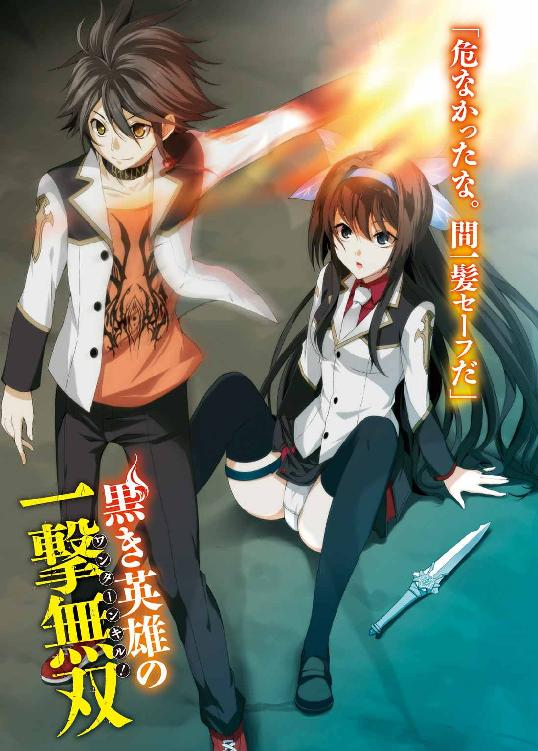
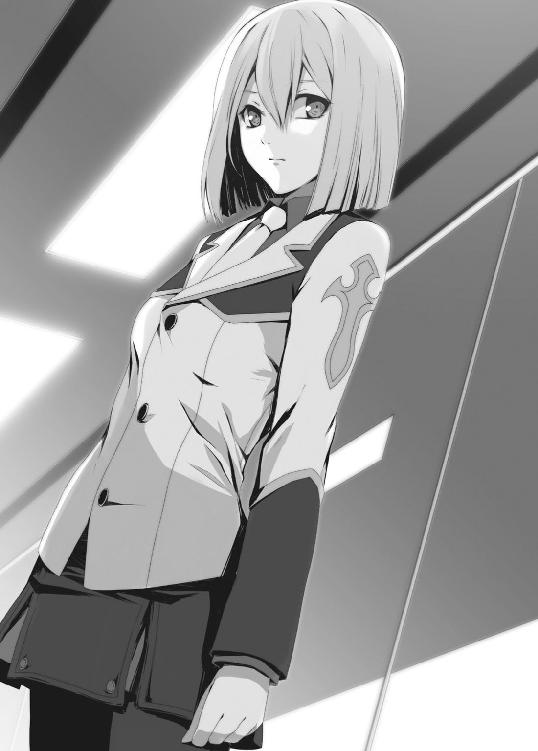

| 黒き英雄の一撃無双 1.受難の女騎士 (ＨＪ文庫) | |
| 望公太 | |
| (2013) | |


プロローグ
「女の嘘は笑って許せ。
女の愚痴は黙って聞いてやれ。
女の涙は優しく拭いてやれ。
でもって――女は絶対に殴んな。
わかったか、クソ弟子」
それが――少年が師匠からまず初めに教わったことだった。
師匠はとんでもない人間だった。
豪放磊落、と言えば聞こえはいいが、端的に言ってしまえばただの人格破綻者であり、性格最悪の快楽主義者だった。女遊びが激しく、『宵越しの金は持たぬ』を地で行く生活能力皆無のおっさんで、少年とその妹はよく苦労をさせられたものだ。
魔法使いとしての実力はかなりのものだったが、その界隈ではいわゆる『はみ出し者』という存在らしく、味方以上に敵が多い男だった。
世間一般のカテゴリーに当てはめてしまえば、ロクでもない師匠となるのだろう。たまたま出会った兄妹を弟子としたのも、ただの気まぐれだったのかもしれない。
しかし、それでも少年は師匠に感謝していたし、尊敬していた。
世間の枠から外れ、常識や世間体に縛られずに奔放な力を振るう男に対し、羨望にも似た感情を抱いていた。
この男のようになりたい――いや、この男を超えたい。
心の底からそう思った。
そして数年後――
少年は、ふとしたきっかけで師匠を超えてしまった。
憧れていた男は『魔法使い』という閉じた社会の中ではみ出していたが、少年はそれ以上にはみ出してしまった。
この世界そのものから――外れて、はぐれて、はみ出してしまった。
第一章 学園最強の少女と世界最強の少年
（......迂闊だったな）
市街地から外れた、深い深い森の中。
久遠院雪羽は地面に膝を突いたまま、己の未熟さを恥じた。
すでに魔力は枯渇寸前。
愛用の魔導武装は発動形態を保てず、短剣型の基本形態へと戻っている。戦闘用に作られた学生服のおかげで目立った負傷はないが、魔力が尽きかけた彼女に次の一撃を防ぐ手段はない。
もっとも、万全の状態だったとしても――竜の一撃を防げたとは思わないが。
雪羽の前にいるのは、巨大な黒竜だった。
森に立ち並ぶ木々をはるかに上回る巨体。体を覆う強靭な鱗は初夏の陽光を受けて鈍く光り、大地を踏みしめる脚には剣のような爪が生え揃う。爬虫類とよく似た顎には鋭利な牙があり、その隙間から低い唸り声が漏れていた。
竜は『穴』を超えてやってくる魔族の中でも、特に上位の種族だ。
（......これは、Ａ級魔法使いが数十人で倒すレベルの竜ではないか......）
今回雪羽が就いた任務は、偶発的に開いた『穴』の調査だった。それなりに危険度が高い任務であることは理解していたし、ある程度の戦闘も覚悟していた。
しかし――まさか竜が現れるとは思いもしなかった。
竜種は、戦闘力において『魔女』や『吸血鬼』には劣るが、それでも一魔法使いの手に負えるレベルの魔族ではない。
（......どうやら私は、井の中の蛙だったようだな）
自分は焦っていたのだろう。一刻も早く騎士団入りを果たすために、自分の実力を上層部の連中に見せつけようと躍起になった結果が――この様だ。
死んでしまっては、元も子もないだろうに。
瞬間――竜が顎を大きく開いた。
口元に魔力が集中し、大気に複雑な模様の魔法陣が描かれる。
人間は専用の媒体――魔導器を用いなければ魔法が使うことができない。しかし魔族は、その体一つで人間以上に魔法を使いこなす。
火炎系第五階層魔法『灼竜業炎砲球』
竜の口から巨大な火球が放たれた。魔力によって生み出された火炎は、大気を焼きつくしながら迫ってくる。必死に回避を試みるが、体が思うように動かず、膝が折れてその場に崩れてしまう。
「......くそっ。私は、こんなところで死ぬわけには......」
雪羽は奥歯を噛み締め、己の無力を呪った。
「母さん......」
「熱っちちっ！」
と。
そんな気の抜けた叫びを上げたのは、もちろん雪羽ではない。魔族の莫大な魔力によって放たれた火炎を食らえば、『熱い』などと感じる間もなく黒炭と化すだろう。
気がつけば、雪羽の目の前に見知らぬ男が立っていた。
黒髪の少年だった。細身であるが華奢な感じはなく、適度に引き締まった肉体をしている。首元には、女性が付けるようなチョーカーがあった。
少年は自分と同じ格好―― 聖春学園の学生服に身を包んでいる。
それはすなわち、魔力の素質を持つ魔法使いだということを意味していた。
「な、なんだ貴様は!?」
雪羽は反射的に声を上げるが、少年は聞いていない。ふーふー、と自分の右腕に息を吹き掛けている。
「......あー、熱かった。火傷するかと思ったぜ」
「な、なにが起こったんだ......。竜の攻撃は......っ!?」
周囲を見渡し、雪羽は息を呑んだ。
地面にへたり込んでいた雪羽の真横では――森がぽっかりと焼失していた。火球の軌跡を示す一直線の焼け野原が生まれ、大地と木々がぶすぶすと煙を上げている。
（まさか......弾いたのか。いや、そんなことはできるはずがない）
見る限り、少年は武器の類を持ってはいない。全くの丸腰だ。魔導武装はおろか、それ以外の媒体も確認できない。素手で第五階層の火炎系魔法を弾くなど、どれほど高位の魔法使いであろうとできることじゃない。
睨めつけるような視線に気づいたのか、少年は雪羽の方を向いた。
「いやー、危なかったなあ。間一髪セーフだ」
「貴様......いったい何者だ？」
「んー。お前と同じだろ。魔となりて魔を征する、魔法使いって奴だ」
少年は雪羽の制服と自分の制服を交互に指差した。
「つっても俺、魔法はほとんど使えねーけどな。だから『魔法使い』って言っていいのかは微妙なとこだ」
「やはり学園に所属する魔法使いか......。だが、初めて見る顔だな......」
顔をじっと見つめて確認してみるが、やはり見覚えはない。ランキングに入るような実力者ならば自分が知っていてもおかしくないはずなのに。
「おいおい、なんだよ、ずいぶんと熱烈な視線だな。そんなに見つめられると恥ずかしいんだけど？」
「なっ！ み、見つめてなどいない！」
「つーかさ......」
少年は困ったように笑いながら、両手を胸の前に上げた。
パン、と叩き。
ツー、を出し。
マル、を作って。
それから掌を水平にし、遠くを見るようにして額に当てた。
「......？」
意味がわからず、雪羽は眉をひそめた。なにかの儀式か、と思って記憶を探っていると、少年が焦ったように弁明を始める。
「あ、あれ......通じない？ ちょっとやめてくれよ......。なんか俺がスベったみたいな空気になっちまったじゃねえか......」
「......なにを言ってるんだ？」
「いやだからさ......。パン、ツー、マル、ミエ、だって。ああもう......なんだよ、このスベったギャグをリプレイされる感じ......」
やや落ち込んだ様子で、さきほどのジェスチャーを再現する少年。今度は音声付きだったので、雪羽もその意味を理解することができた。
「――っ!?」
視線を落として、自分のはしたない姿にようやく気づいた。さっき回避行動を取ったせいだろう、制服のスカートが大きくめくれ、下着が顕になっている。
バッと慌てて裾を押さえるが、時すでに遅し。
「な、な、な......」
「おお、通じたみたいだな。よかったよかった」
「な、なにがよかっただ!? この変態が！」
「誰が変態だよ。人が親切に教えてやったってのに」
「だ、だったら、さっさと言えばいいだろ！ なぜあんな回りくどい方法を取った!?」
「直接言ったら傷つけちゃうかと思って」
「いらぬ気遣いだ！」
大声で怒鳴りつけるも少年には応えた様子がない。のんびりとした様子のまま、空を見上げて大きくのびをした。
「いやー、しっかし、こんな昼間っから女子のパンツを拝めるとは思わなかったな。うん。今日はいい日だ」
「変態か貴様!?」
貞操の危機を感じて雪羽が胸と足元を隠すと同時に――グルル、と低い呻き声が轟いた。黒竜はこちらを見据えたまま、次なる攻撃の体勢に入っている。
「......そこの変態」
「ん。俺か？ 俺にはちゃんとかっちょいい名前が――」
「お前が何者かはどうでもいい。学園の生徒ならば、今すぐ騎士団に連絡し、七天騎士の出陣を要請しろ。あの竜は......そのクラスの魔族だ」
言いながら、雪羽は膝に手をやって立ち上がった。
「私はできる限り時間を稼ぐ」
体の奥から残された魔力を絞り出し、手に握りしめた魔導武装に注ぎ込む。
「砕け散れ、薄氷の如く
狂い咲け、烈華の如く」
凛とした声音で、雪羽は詩でも詠むかのように言葉を紡いだ。
それは魔導武装を発動するために必要不可欠な、鍵となる呪文だった。
音声、言語、魔力。三つの要素が重なった『始動鍵』により、魔導武装は本来の姿を解放する。
始動鍵を受託した魔導武装は、短剣型の基本形態から発動形態へと移り変わり、久遠院雪羽だけの武器へと変貌――
「《月華――」
「ちょっとタンマ」
――する瞬間、雪羽は肩を押されてバランスを崩し、地面に尻餅をついた。
「みゃん！」
突然のことに変な悲鳴を上げてしまう。すると少年が吹き出した。
「ははっ。なんだ『みゃん』って」
「っ!? う、うるさい！ 貴様のせいだろうが！ なにをする!?」
「お前、フラフラじゃねーかよ。無理すんなって。そこに座ってろ」
そう言うと、少年は視線を竜へと移した。雪羽を背に隠すようにして一歩前に出て、強大な魔力を放つ獣と対峙する。
身の丈をはるかに超える魔獣と向き合っているというのに、彼の態度からは緊張や恐怖というものが一切感じられなかった。
風に揺れる柳のように、体のどこにも無駄な力がかかっていない。
実に自然体な様子だ。
「よう、化け物。お前、人語は通じるタイプか？ きちんと謝罪するなら、今日は見逃して――」
世間話のように話を振るが、竜はそれを無視した。人語を理解しないのか、そもそも会話をするつもりがないのか。巨体からは信じられない速度で五爪を湛えた腕を振り、少年を薙ぎ払った。後ろにいた雪羽の体にも凄まじい衝撃が走る。
地面は大きく削り取られ、深い轍が生まれた。
しかし――そこに少年の姿はなかった。
「シカトかよ......。あー、まあいいや」
気だるそうな声は、頭の上から聞こえた。雪羽が反射的に顔を上げると、はるか上空へと跳躍した少年の姿が目に入った。
固く拳を握りしめ、大きく振りかぶっている。
「女の敵は俺の敵だ」
そこから先の展開は、なんと説明したらいいものやら。
雪羽自身、なにが起きたのかまるで見当もつかなかった。
と言っても――少年の動きや技が見えなかった、というわけではない。むしろ逆。これ以上ないくらい鮮烈に、網膜と脳裏に焼き付いた。だからこそ混乱してしまった。
少年の行動は実にシンプルなものだった。
パンチ。
ただ、それだけである。
爬虫類めいた竜の横っ面を、少年は力任せにぶん殴った。結果、黒竜の巨体は地面に倒れ、地響きが起こった。そこから竜が起き上がることなく、戦いは終幕を迎えた。
少年の圧勝、完勝、絶勝。
魔法使いと名乗りながら、魔法を用いずに拳一つで全てを終わらせた。
あまりに理不尽。
ただただ規格外。
それは――ある意味数奇な出会いであった。
どうしても強くなりたかった少女と、どうしてか強くなってしまった少年。
似ているようで相反する二人の若人の、皮肉めいた運命の邂逅――
後に久遠院雪羽は知ることになる。
少年の名前は麻上悠理。
すでに絶体絶命のピンチでの覚醒を終え。
すでに戦闘力のインフレーションを終え。
人と魔が千年に渡る戦争を繰り広げているこの世界で――誰よりもなによりも強くなってしまった男だった。
私立聖春学園は、対魔族用に組織された戦闘集団――『降魔騎士団』の下部組織の一つであった。
日本の地方都市――浜屋市の片隅に位置する巨大な学園は、表向きは普通の私立高校ということになっているが、しかしその実体は魔法使いの育成機関。
多くの生徒が騎士団入りを目標とし、魔界から訪れる異貌の者ども――『魔族』に対抗するためのスキルを磨いている。
現在の学園序列一位――久遠院雪羽も、その一人だった。
「魔族の人間界侵攻が余り活発でないのは、魔族同士で抗争が起きているからです。最強種である『魔女』と『吸血鬼』の間で意見が割れ、魔界では二つの種族とその眷属が長い間いがみ合いを続けて来ました。簡単に言ってしまえば、人間なんかに構っている場合ではなかった、ということですね」
聖春学園理事長室。高級そうな椅子に腰掛けた女性は、穏やかな眼差しで雪羽を眺めていた。温和な雰囲気を持った、美しい女性である。
聖春学園理事長兼、降魔騎士団団長――黒瓜緋蜜。
「しかし三年前、その戦争は『魔女』側の勝利で終結致しました。よって、魔族達が次に眼を付けるのは人間界となることでしょう。我々『降魔騎士団』の戦いも、より一層厳しいものとなることが予想されます」
学園の最高責任者は、どこか呆れた様子で「さて」と言葉を続けた。
「今はそんな大切な時期だというのに......雪羽さんはどうして嘘の報告なんてものをしてしまったのでしょうか？」
「............」
雪羽は切れ長の眼をかすかに伏せ、苦い表情となっていた。緋蜜は豪奢な机に置かれていた書類を手に取って読み上げる。
「『突如現れた少年が、パンチ一発で竜を撃退した』。嘘をつくならもう少しマシな嘘をついたらどうですか？ 冗談にしても、イマイチ面白みに欠けますね」
（ああ......やはりこうなったか）
事実の通りに報告したら、信用されないことは目に見えていたが、雪羽の生真面目な性格は、学園に嘘の報告をすることに抵抗を覚えた。
その結果、こうして呼び出しを食らって、嘘つき呼ばわりされるのだから、なんとも皮肉な話ではあるけれど。
「雪羽さん。あなたは実に優秀な生徒です」
緋蜜は言い聞かせるように言葉を紡ぐ。
「中等部の時点でＡ級魔法使いの資格を取り、高等部の一年にしてすでに校内ランキングの序列は一位。名門『久遠院家』の名に恥じぬ見事な成績です。卒業後の騎士団入りは確実なことでしょう。当然、わたくしもあなたには期待しています。ですから......そんなあなたがこんな子供じみた悪戯をするとは、ちょっぴりショックですね」
「......申し訳、ありません」
悩みに悩んだ末、雪羽は頭を下げた。いくら言葉を重ねたとしても、自分の話を相手に信じさせるのは不可能だと思ったからだ。
雪羽自身、未だに信じきれていない。
全て夢だったと言われた方がまだ納得できる。
たとえば、カブトムシがアフリカゾウを倒した、などという話を聞かされて、それを真に受ける人間はいないだろう。
人が拳一つで魔族に勝ったという事実は、それぐらいの偉業であり、奇跡なのだ。
「まあ、今回は大目に見てあげましょう。雪羽さんは少々真面目過ぎるところがありますからね。たまにはこういう悪戯をしてくれた方が、わたくしとしても嬉しいです」
馬鹿な子ほどかわいい、という感じで微笑む緋蜜に、雪羽は複雑な思いを抱く。
「それで、事実はどうだったのですか？ あなたが調査に向かった『穴』のそばで、竜の死骸が見つかったのは確かなようですが」
「......私が到着したときには、竜はすでに死んでいました。おそらく『穴』を越える前に、致命傷を負っていたのだと思います」
雪羽は相手が信用できるような話をでっち上げた。事実を伝えても信用されないのだから、こうするしかない。
「『穴』が発生すると、魔族同士で競争が起こることもあると聞きます。今回の竜も、おそらくは魔界で何者かと争ってから、人間界に現れたのでしょう」
「そうですか」と緋蜜は頷いた。
魔界。
人間界とは別に存在する、もう一つの世界。
普段は交わることのない二つの世界は、時空の歪み――『穴』によってのみ互いの往来が可能となる。初めて『穴』が開いたのは、今より千年以上前のこと。繋がるはずのなかった二つの世界が交錯し、魔族が人間界に災厄をもたらすようになった。
「わかりました。なにはともあれ、お疲れ様です」
優しい笑顔を浮かべる緋蜜。雪羽は一礼して理事長室を去ろうとするが、その途中で振り返り、「......黒瓜団長」と口を開いた。
「私が報告書に書いたような、魔法を使わずに素手で――拳一つで魔族を倒せる人間というのは、あり得るでしょうか？」
「あり得ません」
緋蜜は即座に断言した。
「今更言うまでもないことですが、我々人間と魔族とでは、魔力の絶対量が違います。我々を一とすれば、彼らは十。現在、魔界最強の種族である魔女に至っては、人間の百倍の魔力を有していると聞きます」
魔族が人間界に現れるようになってから、その影響だろう、人間の中でも稀に魔族と同じ魔力生成能力を持つ者が生まれるようになった。
魔力――本来ならば魔界の生物しか持ち得ぬ、魔なる力。
生まれながらにその力を有し、魔を祓うために魔の法を学んだ者達がいる。
毒をもって毒を制す。
魔となりて魔を征す。
それこそが――魔法使いである。
「また、吸血鬼の王を殺した最悪の魔女――『災禍の黒魔女』に至っては、人間の数千倍から一万倍の魔力を保持していただろう、というのが騎士団の見解です」
『災禍の黒魔女』
魔族に関わりを持つ者ならば、この名前を知らぬ者はいない。
魔界で繰り広げられていた、魔女と吸血鬼の大戦争。
その戦いは『災禍の黒魔女』が吸血鬼の王――『鮮血皇帝』を殺したことにより、終結したのだ。
「魔力の絶対量で劣る上、しかも我々人間は補助媒体である魔導器を用いなければ、魔法を使うことはできません――しかし我々降魔騎士団は、永き戦いの果てに魔導武装の開発に成功しました。杖と剣の両方の役割を併せ持つ、人類の叡智の結晶です」
そう言うと緋蜜は、雪羽の脚に視線を移した。太ももにはホルスターが巻きつけてあり、そこには彼女の魔導武装が収まっている。
魔力が本来は魔族のものであるように、魔法もまた、魔族にしか許されぬ業である。
しかし人は魔法を扱うために、補助媒体としての魔導器を生み出した。
昔は杖や指輪が魔導器としての役割を果たしていたが――現代では武器と媒体が一体化した魔導武装を扱うのが主流となっている。
「絶大な力を誇る魔族に対し、人類は武器開発と組織力でどうにかこうにか対抗してきました」
ですから、と緋蜜は少しおどけたような調子で付け足す。
「もしそんなスーパーヒーローがいるとすれば、ぜひともお会いしたいものですね。わたくしはすぐにでも団長の立場をお譲りいたしましょう」
「......そうですね。変なことをお聞きして、すみませんでした」
頭を下げながら、雪羽はふと思い返した。
武器開発と組織力――そんな人類の叡智の全てを嘲笑うかのような、圧倒的な暴力を有していた少年のことを。
理事長室を後にした雪羽が廊下を歩いていると、
「よう、久遠院。なにやらかしたんだ？」
大柄な学生が、にやにやしながら声をかけてきた。
「理事長室に呼び出しってことは、任務でヘマでもしたのか？ はは。いい気味だな」
男が笑うと、後ろに控えていた数人の男子生徒達も同じように笑った。
「......なにか用ですか。佐貝先輩」
雪羽はうんざりとした表情で吐き捨てた。
「久遠院。お前、まぐれで一位になったからって調子乗ってんじゃねえのか？ 学園内でのランキング戦でどんだけ活躍しようと実戦でミスってちゃなんの意味もねーんだよ」
べらべらと語られる嫌みに、雪羽の内心に苛立ちが募る。
体格のいい筋肉質な男子生徒――佐貝清玄は、『元』序列一位の高等部三年生だ。
言い方を変えれば、雪羽に序列一位を奪われた男となる。
今年の四月のランキング戦で、雪羽は清玄に勝利した。高等部に進学してすぐのことだったため、久遠院雪羽の名はすぐに学園に知れ渡った。
アイドルかなにかのように崇めるものもいれば、実力や立場に嫉妬する者もいる。
現在序列二位の佐貝清玄は、後者であった。
年下の女子に負けたことが悔しいのか、それとも序列一位という立場によほどの執着があったのか、ランキング戦以降、なにかにつけて雪羽に絡んでくる。
「私は、なにか用ですか、と尋ねたのですが？」
冷徹な言葉を叩きつけると、清玄とその取り巻き達から笑みが消えた。清玄が言葉に詰まっていると、雪羽は追い打ちをかける。
「用もないのにわざわざ私を待ちぶせていたんですか？ 佐貝先輩はずいぶんとお暇なようですね。そんなに暇ならば鍛錬をなさればよいでしょう。次こそは私に勝てるように」
普段は清玄からいくら嫌みを言われても適当に受け流している雪羽だが、今日はつい、ムキになって嫌みを返してしまった。
虫の居所が悪かったのだ。
名も知らぬ一人の少年に、心をかき乱されて。
「てめえ......一回勝ったからって調子乗ってんじゃねーぞ！」
「失礼します。用事がありますので」
怒鳴り声を無視して、雪羽は相手の返事も待たずに廊下を進む。用事があるというのは嘘ではない。これから、あの少年を捜すつもりだった。
（......あいつはこの学園の制服を着ていた。それなのに見覚えがないとは......）
考えを巡らせながら歩を進めていると、
「落ち着いてくださいよ、清玄さん。あんな女、相手にすることないっスよ」
背後から、取り巻きの一人が清玄を宥める声が聞こえた。
「......くそっ！ ったく、なんなんだ今年の一年は！ あの女といい、さっきの転入生の男といいよぉ！」
「ああ、あのチョーカー着けた奴ですか......。あいつは確かにムカつきましたね」
背後で繰り広げられる会話に、雪羽はぴたりと足を止めた。
転入生の男。チョーカー。そのワードを頭の中で反芻した後、くるりと踵を返して、清玄達の下へと早足で駆け寄った。
「ああ？ な、なんだよ久遠院。てめえ！ やんのか!?」
「どこですか、佐貝先輩」
大声で凄む清玄を無視して、雪羽は問いを重ねる。
「転入生は、今どこにいるんですか？」
聖春学園の食堂は、夜の七時まで営業している。
味がよくて量が多く、そして学生食堂らしいリーズナブルな値段で料理を提供しているその食堂は、生徒や職員に大変な人気があった。
放課後の今も、食堂内には多くの生徒がいる。
調理場と飲食スペースを結ぶ受け取り口には、二人の生徒が今か今かという様子で料理を待っていた。
一人は金髪の少女。大きな目と小さな口が特徴的で、幼くかわいらしい顔立ちをしている。中等部の制服を着用しているが、初等部と言われた方が納得できる容姿だ。
少女の隣にいるのが、高等部の制服を着た黒髪の男子生徒。ブレザーの下は、指定のシャツではなくラフなＴシャツ。首元には女物のチョーカー。
「はいよ、おまちー」
元気のいい声と共に『ザ・食堂のおばちゃん』という風体の女性が、受け取り口に料理を運んだ。
「『デラックスいちごパフェ、チョコブラウニートッピング』と『特製スタミナ丼、肉二倍、ご飯三倍盛り』だよ」
少年の下に、トンカツや焼肉、ステーキなどの肉類が大量に載った、山盛りの丼が。
少女の下に、生クリームと苺の上にチョコブラウニーが載ったパフェが。
その光景を眺めて、二人は顔を見合わせて苦笑した。
「おばちゃん、逆だよ、逆。俺がパフェで、妹が丼だ」
少年はそう言うと、隣の少女と自分のトレイを交換した。二人は自分のトレイを持って移動し、空いている二人掛けの席を見つけて腰掛けた。
いただきます、と揃って挨拶をすると、少女の方が丼を手に掴み、肉とご飯を次々と口に運び始めた。
西洋人形のような愛らしさを持つ少女が、丼飯をもりもりと男らしく食している様は、なんとも不思議な光景であった。
「......セリアの食事風景は、相変わらず見応えがあるな。よくそんなカロリーの固まりみてーなもんを、次から次へと食えるもんだ」
少年が声をかけると、セリアと呼ばれた少女は、むっと口を尖らせて箸を止めた。
「兄様にだけは、食事について言われたくないんですの。なんですか、その糖分の固まりみたいな食べ物は」
セリアが舌っ足らずな声で言うと、少年――麻上悠理は眉根にシワを寄せた。
「俺は頭使って生きているから、こんぐらいの糖分が必要なんだよ」
「毎日毎日、甘い物ばっかり食べて......。糖尿病になってしまいますよ」
「うるせえ。飯食ってるときに尿の話をすんな」
「確かにパフェは甘くって美味しいですけど、そんな馬鹿みたいな量を一人で食べたら気持ち悪くなってしまいますの」
「そう言うセリアこそ、その小っちぇー体のどこにそんだけの食い物が入るんだ？」
「セリアは食べても食べても太らないタイプなんですの」
「はあん。なるほど、全部消化して出ちまうってことか」
「食事中にそういう話はしないでください」
雑談しつつ、悠理とセリアは互いの食事を片付けていく。
妹が山盛りのスタミナ丼を食し、兄がいちごパフェを食べている状況は、周囲の人間からしたらなかなかに奇妙な図であったが、兄妹には気にする素振りもない。
「しかし、ここの学食は当たりだな。早い安い美味い。特にデザート類が充実しているところが最高だ。こりゃ師匠に感謝だな」
「ほこほへ兄はま」
セリアは口をハムスターのように膨らませて言った。
「飲み込んでからしゃべれよ」
「......ごっくん。ところで兄様」
口の中を空っぽにしてから、セリアは改めて言い直す。
「お師匠様のコネで二人仲良くここに通い始めてから、そろそろ二週間となりますが、学園には慣れましたか？ お勉強は頑張っていますか？ お友達はできましたか？」
「............」
「おや兄様、どうしたんですの？ 苦い顔になって」
「いや......今の台詞って逆じゃね？ って思っただけだよ。なんで妹のお前が、保護者みたいな感じで俺の心配してるんだよ」
「兄様が頼りないからですの」
「ほっぺに飯粒付けた奴に、頼りないとか言われたくないな」
悠理が指摘すると、セリアはパッと頬に手をやり、飯粒を取って口に入れた。
「付けていません」
つん、とすました顔で言うが、もう片方の頬にも飯粒は残っていた。悠理はパフェ用の細長いスプーンをくわえたまま、椅子に深く腰掛けた。
「まあ、それなりにやってるよ。授業にゃさっぱりついてけねーけどな」
「だと思いましたの」セリアはため息をついた。「兄様は根本的に魔法というものが向いてないですからね」
「お前の方はどうなんだ？」
「セリアは上手くやってますの。兄様と違って要領がいいですから。だからこそ、兄様の心配をする余裕があるんですの。ついさっきだって、先輩に向かってあのような態度を取るのはいかがなものです？」
「あれは......悪気はなかったんだよ。肩ぶつけるつもりもなかったし、あっちが『俺が誰か知ってるだろ？』って凄んできたから、正直に『知らん』って言っただけで......」
「あの方は、三年の佐貝清玄先輩ですの。現在、学園内での序列は二位。とても優秀な魔法使いさんらしいですよ」
セリアは手元の携帯端末を眺めながら言った。
画面に映っているのは、学園のランキングリスト。そこには、序列上位に名を連ねる生徒達の顔写真や名前などが記されていた。
「へえ。そうだったのか。それならもう少し媚びでも売っとくんだったな」
悠理は適当な感じで言いながら、パフェにスプーンを突っ込み、チョコブラウニーを器用に掬って口に運ぶ。
「でもセリア。二位ってことは、あの先輩よりも強い奴もいるってことか？」
「はい。現在の序列一位は、なんと兄様と同じ高等部の一年生です。名前は――」
「見つけたぞ！」
と、兄妹は不意に脇から声をかけられた。
そこにいたのは学園序列一位の才媛――久遠院雪羽である。
麻上悠理はスプーンを口にくわえたまま、声をかけてきた女子を呆けた顔で眺めた。
十人中八人が『綺麗』といい、残り二人が『かわいい』と言いそうな、とにかく見目麗しい少女だった。どこか幼さが残る顔立ちだが、その表情や佇まいには凛とした美しさがある。
「見つけたぞ......。ふふっ。本当にここの生徒だったんだな。知らない顔だと思っていたが、まさか転入生だったとは......」
少女は、ここで会ったが百年目と言わんばかりの、歓喜と怒りを混ぜあわせた瞳で悠理を睨みつけてくる。
「兄様、お知り合いですか？」
セリアがきょとんとした表情で問いかけてきた。
悠理は改めて少女を見つめ返す。後ろで一つに束ねた髪、確かな膨らみを感じさせる胸部、すらりと伸びる脚を包むニーハイソックス......頭から足元までじっくりと眺めていると、脳内で歯車が噛み合った。
「あーっ！」
「まったく......ようやく思い出したか」
「あのときのパンツ丸出し！」
「だ、誰が丸出しだっ！」
少女は顔を真っ赤にして、悠理をキッと睨みつけた。
「ははっ、悪い悪い。あんときは、ちょっとパンツのインパクトが強すぎてさ」
軽いジョークのつもりでそう言ってみると、
「なっ......き、貴様は本当に変態だな！」
どうもこの手の冗談が通じないタイプだったらしく、少女は頭から湯気を出す勢いで激昂した。
「えっと......あれ？ 名前、聞いたっけか？」
「ああ......そういえば名乗っていなかったな。私は高等部一年、久遠院雪羽だ」
「雪羽、か。綺麗な名前だな」
「......い、いきなりファーストネームで呼ぶんだな、貴様は」
うろたえる雪羽に、悠理は平然と告げる。
「ん？ 普通だろ。せっかく親からもらった名前なんだぜ。いっぱい呼んでやらなきゃかわいそうだ」
他人はファーストネームで呼ぶ。
麻上悠理の持つ主義の一つであった。
「どうしても嫌っていうことならやめるけど？」
「いや......構わない。雪羽でいい」
「俺は麻上悠理。同じく高等部一年だ。俺も悠理でいいぜ」
「麻上悠理......。すまないが、手を出してくれるか？」
そう言って少女――雪羽はこちらに手を伸ばしてくる。
おお、親愛の握手か、と思って手を差し出すと、瞬間、雪羽は手首を握り締め、ひねるようにした。
「......本当に火傷一つないようだな。素手で竜の火炎魔法を弾いたというのに......。これといった魔導器も装備していないし、魔紋も刻まれていない......。ならばどうやってあんな離れ業を......」
食い入るように見つめる雪羽。目的は握手ではなく、悠理の右腕を観察することだったらしい。右腕になにか仕掛けがあるのでは、と考えているのだろう。悠理はつい、苦笑してしまう。
なぜなら自分の右腕には――いや、自分の体のどこにも、仕掛けなんてものはありはしないのだから。
「......いきなり現れたこの女性は、どうして兄様と親しげに手を取り合っているのでしょうか？」
テーブルの向こうで、丼を抱えたまま固まったセリアが呟いた。
「え......なっ。ち、違う！ 親しげに手を取り合ってなどいない！ 私はただ――」
パッと手を話し、必死に言い訳めいたことを口にする雪羽だったが、彼女の行動に注目していたのはセリアだけではなかった。
「おい。あそこにいるの、久遠院じゃないか？」
「へえ。もう任務から帰って来たんだ」
「おい、ちょっと待て。久遠院の奴、今、男と手を繋いでなかったか？」
「うっそ。序列一位の『氷華姫』に男!? うっわー、こりゃ大スクープじゃない!?」
「てか、『氷華姫』のパンツのこと話してなかった？ うわ、そこまで進んでるの？」
「誰だ、あの男......見ねえ顔だな」
気がつけば、悠理と雪羽は食堂中の視線を集めていた。そのことに気づいたらしく、雪羽は慌てふためく。
「......ああ、もうっ！ と、とにかく来い！ ここは人目に付く！」
雪羽は再び悠理の手を握り締め、ぐいぐいと引っ張って行った。
「......に、兄様が拉致されてしまいました。追いかけ......ああ、でも、まだお肉が残っています。ああ、兄様。ああ、お肉......」
自分と丼を交互に見つめて葛藤する妹を見つめながら、悠理はどこかへと連れ出されてしまった。
「......おいおい、どうすんだよ。パフェとスプーン持ち出して来ちまったぞ。これ、大丈夫かな。食堂のおばちゃんに怒られないかな？」
「いつまで食ってるんだ貴様は!?」
人通りの少ない階段裏。
食堂から持ってきたパフェを食べ続ける悠理に対し、雪羽は盛大に突っ込んだ。
「置いてくればいいだろ、そんなもの！」
「なんだと？ 雪羽、お前はなんにもわかっちゃいねえ。この季節、パフェを長時間放置したらどうなると思う？ そう、生クリームが溶けちまうんだよ。そうすると下に敷き詰められたコーンフレークが湿ってサクサクとした食感がなくなって......」
「どうでもいい！」
怒鳴る雪羽。悠理は「どうでもいいってなんだよ......」と愚痴りながら、パフェを食べ続ける。
「ああもうっ！ とりあえず食べるのを止めろ！ 私の話を聞け！」
「うるせえな。そう騒ぐなよ。ほら、一口やるから」
悠理は生クリームとアイスを乗せたスプーンを、雪羽の口に突っ込んだ。
「美味い――じゃなくて！」
ノリツッコミのように突っ込んでから、雪羽はハッと表情を強張らせた。頬がみるみる紅潮していき、小声でぼそぼそとなにかを呟く。
「ちょ、ちょっと待て......。今のは、か、か、間接キッスでは......」
「なんだよ......あっ！ 言っとくけどもうやらねーからな！ 一口だぞ、一口！」
「そんなことは頼んでいない！」
雪羽は声を張り上げ、廊下の壁を思いっきり叩いた。ふーふー、と呼吸を整えてから、表情を引き締め、真正面から悠理を見つめる。
「麻上悠理。貴様は――何者だ？」
それは真剣な眼差しだった。悠理は一拍置いてから、ため息混じりに応える。
「何者だって言われてもなあ......。俺は俺で、それ以上でもそれ以下でもねーよ。さっきも言った通り、今の俺は、お前と同じ聖春学園高等部の一年生だ」
「とぼけるな。竜種を一撃で殴り飛ばすなんてことが、学生の魔法使いにできるはずもない......いや、騎士団の連中ですら不可能だろう。しかも貴様は......魔導武装を装備していなかったはずだ」
「............」
「あれは、なにかの魔法なのか？」
「いや、魔法じゃねーよ。言ったろ？ 俺、魔法はどうも苦手でさ」
「ならばどうやって」
「決まってんだろ？」
そう言ってから、悠理は右拳を握りしめ、雪羽の前に出した。
「力任せにぶん殴ったんだ」
「......ふざけるな！ 私は真面目に聞いてるんだ！」
瞳に怒りを燃やしながら怒鳴りつけてくる雪羽に、悠理は困り果ててしまう。
（嘘じゃないんだけどなあ......）
本当に、力に任せて殴っただけ。高位の魔法使いが束になっても敵わない魔族であろうと、麻上悠理はワンパンで倒すことができる。
あの日の戦いから――悠理はそういう存在に成り果ててしまったのだ。
「ふざけちゃいねーよ。俺、なんか強いんだ」
「なんか強いって......」
「つーかさ、俺は一応、お前を助けたんだぜ？ そのことに関しちゃなんの礼もなしかよ。あれか？ 助けてくれと頼んだ覚えはない、ってやつか？」
「それは......その」
雪羽は言葉に詰まるが、
「......あ、ありがとう」
と、きちんと頭を下げて言った。根は素直な奴なのかもしれない。「おう、気にすんな」と返すと、雪羽はさっさと話を変えた。
「......そういえば、階級はいくつだ？」
「階級？」
「魔法使いの階級のことだ。騎士団に所属する魔法使いならば、階級が割り振られているはずだ」
「ああ、なんか、そんな話だったなあ。えーっと......ほれ」
転入時に聞かされた話をぼんやりと思い出しながら、懐を漁って学生証を取り出す。
「......はあ!?」
学生証を確認するや否や、雪羽は大きく目を見開いた。
「でぃ、Ｄ級だと!?」
「そうっぽいな」
悠理も改めて学生証を眺めてみる。顔写真や名前、クラスと一緒に、『Ｄ級』という文字が刻まれていた。入学試験として、座学、実技、面接と様々な試験を受けた結果、麻上悠理に与えられた階級は――Ｄ級だった。
「俺、いまいちよくわかってないんだけどさ。Ｄ級ってどうなんだ？ すごいのか？」
「......すごくない。Ｄ級は、最低ランクだ。魔力の素養が少しでもある者ならば、とりあえずＤ級と認定される。高等部でＤ級なんて、一人もいないと思っていたが......」
「おお。つまり俺はオンリーワンってことか。ははっ。かっこいいな、俺」
呑気に笑う悠理の隣で、雪羽は額に手を当てて混乱していた。
「ちょっと待て......よくわからなくなってきたぞ。お前は、いったいなんなんだ......？ すごいのか、すごくないのか？」
「俺は俺だよ」
と言ったところで、悠理はパフェの最後の一口を食べ終えた。完食である。
「どれ。腹ごしらえも済んだとこだし、そろそろ行くかな」
その場を去ろうとする悠理だったが、雪羽に止められる。
「ま、待て。どこへ行く？」
「どこって......追試だよ」
雪羽はまたもや目を丸くした。
聖春学園、高等部校舎地下――第一実践訓練場。
円形のだだっ広い空間で、床には土が敷き詰められている。天井がずいぶんと高く、おかげで地下の閉塞感はまるでない。
「ほーんと広いっすよね、ここは」
「麻上。お前はこれで三回目の追試となるわけだが――」
のんびりとした悠理の言葉を無視して、向かい合った女性教官は言う。
すらりとした長身の女性で、綺麗な顔立ちをしているが目つきは鋭い。軍服のようなスーツに身を包んでおり、荒々しい雰囲気を身に纏っている。
御島萌々。
聖春学園の教師の一人であり、騎士団に所属するＡ級魔法使いの一人である。
「――いい加減、自分が恥ずかしいとは思わないのか？」
萌々は怒りを滲ませた眼光を向ける。気の弱い人間だったらそれだけで気絶してしまいそうな視線だが、悠理は締まりのない笑顔を浮かべたまま、飄々と答える。
「いやー、なんていうか......俺は、こういう情けない自分でもしっかり愛してやろうかなっていうポリシーで生きてますんで」
「......お前のように出来の悪い生徒は初めてだ」
萌々は呆れた様子でため息をついた。彼女は悠理が転入したクラスの担任である。そのため、必然的に追試の監督も務めることになっている。
「お前みたいな問題児相手では、指導するだけ時間の無駄な気がして来たよ」
「そんな......見捨てないでください、萌々ちゃん先生」
瞬間、萌々の額に青筋が浮かんだ。
「......御島教官と呼べと何度も言っているだろうが」
恐ろしく低い声で言って、萌々は懐から一つの指輪を取り出した。
魔法の発動媒体――魔導器である。その道具は、魔法を発動するために必要な膨大な手順を簡略化させ、人間に魔法の発動を可能とさせる。
人を魔の領域に導く器。
故に――魔導器。
萌々は指輪を右手の人差し指にはめ込み、魔力を集中させた。
すると、彼女の周りの地面が隆起し始めた。ボコボコと土が浮かび上がり、人の形を作っていく。ほんの一、二秒で、土くれは甲冑を着た兵の姿となった。
「試験内容は前と同じ。私に一撃でも入れることができれば、お前は晴れてＣ級となる」
十数体の土人形を従えて、萌々は毅然とした口調で言った。
対する悠理は軽く肩をすくめてから、
「......萌々ちゃん先生。何度も言ってるでしょう」
と、迷いのない口調で、自分の主張を口にする。
「俺にあなたは殴れません」
訓練場の隅で悠理の追試を見学していた雪羽は、我が目を疑った。
（......よ、弱い。あまりに、弱い......）
御島萌々の試験に挑む彼は、ひどく苦戦しているように見えた。
防御魔法も探知魔法も使うことなく、かといって攻撃の意思を示すこともなく、ただただ不恰好な回避を繰り返すばかり。逃げ回っている、と言ってもいい。
（あれでは......本当に、Ｄ級の魔法使いだ......）
降魔騎士団と、その下部組織に属する魔法使いは、全てＳ級からＤ級にランク付けされる。騎士団入りを許されるのは、Ａ級以上の魔法使いだけ。
最高ランクのＳ級は騎士団内にも数えるほどしかいない。魔法使いとして『至高』を極めた証明であり、Ｓ級と認定された者は魔法使いの歴史に、永劫に名を刻むこととなる。
対して最低ランクのＤ級は、魔法使いの基本すらできていないことを意味しており、言わば見習いみたいなものだ。
育成機関に所属したものは、最初は必ずＤ級と認定されるが、ほとんどの人間が一年と経たないうちにＣ級へと昇格する。
「......こないだ竜を殴り倒したのは、いったいなんだったんだ？」
「やはりあなたは兄様の『力』を知っているのですね」
と。
思わず漏れた呟きに、幼い声での返答が来た。振り返ると、そこには金髪の少女がいた。先ほど悠理と一緒の席で、山盛りの丼飯を食していた中等部の女生徒である。
「初めまして。麻上セリアと申しますの」
「......初めまして」動揺しつつも、雪羽は言葉を続ける。「兄様、ということは......きみは、麻上悠理の......」
「はい。セリアは兄様の妹ですの」
「あの男の妹さんか」
「あなたは、久遠院雪羽さんですね。学園序列一位で、その美しさと技の華麗さから『氷華姫』と称されているとのことで。お会いできて光栄ですの」
雪羽のことをきちんと知った上で、丁寧に挨拶をしてくるセリア。
（......無礼千万な兄とは大違いだな。できた妹だ）
雪羽は内心で毒づいた。
「それで、セリアさん」
「セリアで構いません」
「わかった――ではセリア。あの男の、『力』とはなんだ？ きみは、知っているのか？ あの男は......いったいなんなんだ？」
セリアは数秒考えるように腕を組むが、やがて諦めたように息を吐いた。
「そうですね......。雪羽さんはもう兄様の力を知ってしまったようですし、隠してもしょうがないでしょう。それに兄様の方も、無理に隠すつもりはないようですし......」
一人でうんうんと頷きながら、セリアは滔々と語り始めた。
「諸々の事情がありまして......セリアと兄様は、一人の男に師事を受けていました。とても優秀な魔法使いでしたが、どうも性格に難がある人で、騎士団等の組織には属していなかったようです」
「難がある、というのは？」
「酒好き、女好き、博打好きですの」
確かに難がありそうだった。
「では、きみ達兄妹は、どこかの育成機関からこの学園に転入してきたわけではないんだな」
「はい。そうです」
聖春学園以外にも、騎士団管轄の育成機関はいくつか存在する。
魔力の素質を持つ者のほとんどは、降魔騎士団に管理され、魔法使いとして生きる術を学ぶ。ごく普通の一般家庭に生まれた者もいれば、雪羽のように、代々続く魔法使いの名門に生まれた者もいる。
「よく騎士団の目をかいくぐれたな。魔力が活発に活動し始める十代前半になると、騎士団の探査班が例外なく見つけて、どこかの育成機関に放り込むと聞いているが」
「師匠がなにかやってたようです。隠蔽魔法みたいなものを」
雪羽は納得した。魔力自体を隠匿する方法はいくつかある。
「それで......まあ、いろいろありまして、師匠の下で修行をして何年か経ったある日、セリア達は、すっごく強くてすっごく悪い魔族と戦うことになりましたの」
「......すごくざっくりとした説明だな」
「その魔族はとてつもない強さで、セリアや兄様はもちろん、お師匠様ですら苦戦するほどでした。その上とてつもなく卑怯な輩で、なんとセリアを人質に取ったんですの」
「ほう、確かに卑怯な奴だ」
「セリアのせいで、兄様もお師匠様もコテンパンにやられてしまったのです......。セリアも危うく殺されるところだったんですの......」
そのときのことを思い出したのか、セリアの表情が暗く沈んだ。
「......ところがどっこい！ そのとき奇跡が起こりましたの！」
暗い表情から一転、太陽のように瞳を輝かせる。突然大声を張り上げるものだから、雪羽は驚いて少しのけぞってしまった。
「兄様が、妹を想うパワーで『覚醒』したのです！」
「か、覚醒？」
呆気に取られた雪羽をよそに、セリアは身振り手振りを交えながら、鼻息荒く兄の活躍を語り出す。
「覚醒した兄様は超絶ウルトラスーパーパワーを発揮し、えいっ、やあっ、とうっ、と悪者をやっつけ、セリアを助けてくれたのです」
「............」
「以上ですの」
「終わり!?」
思わず突っ込んでしまう雪羽だった。
「ちょ、ちょっと待ってくれ......。まるでわからない。か、覚醒とは、なんだ？」
「覚醒は覚醒です。ほら、漫画とかでよくあるじゃないですか。絶体絶命のピンチや仲間の危機に、眠っていた力が目覚めたりする展開が......」
「う、うん。まあ、そんなのがあるような......」
「兄様もそんな感じで強くなったんですの。まあ、ちょっと強くなり過ぎた感もありますけど。大抵の相手はワンパンどころか、風圧で勝てますから」
「風圧って......」
「どうも魔力自体が特異なものに変質してしまったようなのですが、詳しくはセリアにもわかりません。一過性のものかと思いきや、それ以来ずーっと強いまんまですし......」
困ったものですの、とセリア。
嘘をついている様子はない。至極真面目な様子である。
（ということは、全て本当の話なのか......？）
納得できる話ではなかったが、そもそも悠理のデタラメな力自体が、納得だの理解だのの範疇を超えていた気もする。
「しかし......それならばどうして、あの男はＤ級なんて扱いを受けているんだ？」
魔族――それも竜種を一撃で倒せるレベルの実力者ならば、それだけでＡ級......いや、Ｓ級の認定を受けてもおかしくないはずなのに。
「はあ......。そこは、セリアも悩みのタネですの」
セリアは深々と溜息をついた。
「この学園に転入してきた時、セリアと兄様もきちんと正直に答えました。『魔法はどれくらい使えますか？』と訊かれたので、『魔法は使えません。でも、魔族は倒したことがあります』って。そうしたら......」
「信用されなかった、というわけか」
「ですの」
落胆するセリア。無理もない、と雪羽は思う。自分が悠理の力を信じることができたのは、実際にその力を目の当たりにしたからだ。
そうでなければ、『魔法は使えないけど魔族は倒せます』なんて言われたところで、信じられるはずもない。
『掛け算はできないけど因数分解はできます』と言っているようなものだ。そんな台詞を聞いたところで、馬鹿な子供が冗談か強がりを口にしたとしか思えないだろう。
「元より兄様は、魔法を駆使して戦うタイプではなかったですからね。当然、編入試験の結果は最悪。学園史上最低点を叩きだしたと聞いています。よって、兄様は最低ランクのＤ級というわけですの」
転入拒否されなかっただけ感謝ですの、とセリア。
「なるほど。だから、ああしてＣ級昇格のための追試を受けているというわけか」
Ｓ級やＡ級とは違い、Ｃ級になるための昇格試験は、難易度も低く、判断基準も意外と曖昧だったりする。Ａ級以上の教員のうち、誰かが『資質アリ』と判断すれば、それだけでＣ級へと昇格することができる。
つまり悠理の場合、担当となった御島萌々相手に力を見せればいいわけだが......ここから見る限り、その結果は無残という他ない。
「よりにもよって御島教官が担当か。運がなかったな。あの人は教官の中でも特に厳しい人だ」
「まったくですの」
セリアは頷いて同意を示したが、
「せめて担当が女性でなければ、兄様もＣ級ぐらいにはなれたかもしれませんのに」
同意するポイントが、雪羽とは違っているようだった。
「どういう意味だ？」
「兄様は女性を殴れませんから」
きっぱりと、さも当然の事実のようにセリアは断言した。そのとき、
「そこまでだ！」
覇気の篭もった声が響き渡った。雪羽は訓練中の二人に視線を戻す。
萌々が手を振ると、土人形は全て土に返った。訓練場には、土埃と泥まみれになった悠理だけがぽつんと残される。
「時間切れだ、麻上」
「あれ、終わりですか？ それで、結果は？」
「この状況でそんな質問が出てくる図々しさだけは褒めてやろう」
「ってことは......もしかして合格ですか!?」
「不合格だ、馬鹿者！」
「......うわ～、マジかあ......。じゃあ、もしかして......来週も追試ですか？」
「当然だ。私のクラスに、Ｄ級の生徒の存在など許さん」
「うええ、嫌だよぉ......。ガチで嫌だよぉ......。この試験、すごいかったるいんですよ。服は汚れるし、口に泥入るし......放課後の貴重な時間が......」
「だったら、早く私に一撃入れることだな」
「それは無理です」
悠理は情けない言い訳をぴたりと止め、嫌にはっきりとした声で言った。服についた泥を払いつつ、萌々の鋭い眼光を真正面から見つめ返す。
「俺は死んでも女は殴らねえ」
その瞳には一切の迷いや揺らぎがなく、確固たる意思の光が灯っていた。
ふてぶてしいことこの上ない少年に、萌々は呆れ果てたように息を吐く。
「......フェミニズムは結構だが、まずはそれに見合った実力を身に付けろ。戦場で信念を貫き通せるのは、力のある者だけだ」
「うぃっす」
「今日はもう帰れ。この後も予定が詰まっている。お前以外にも、追試を受ける者がいるからな」
帰宅の許可を受けた瞬間、悠理は「しゃあっ！」と快哉を叫んで元気よく飛び上がるが、その態度が萌々の気に障ったらしくまたもや説教が始まる。
二人の様子を眺めていた雪羽は、なんとも険しい表情になっていた。
（御島教官は......やはり気づいていないようだな。麻上悠理が――自分よりもはるかに強いことに......）
信念を貫き通すには、十分過ぎる力を有していることに。
もちろん、セリアの話を百パーセント信じたわけではない。雪羽自身、まだ半信半疑である。しかし先日の彼の姿が、脳裏にしっかりと焼き付いている。
自分を助けてくれた、スーパーヒーローのようにかっこよかった悠理の姿が――
（......はっ。ち、違う、違うぞ。どこがかっこいいんだ、あんな男っ！ ただの変態ではないか！）
「通して欲しいのですが」
一人で悶々としていた雪羽に、背後から声がかけられた。自分が出入り口の通路を塞いでいたことに気づき、雪羽は慌てて道を譲った。
「ありがとうございます」
背後にいた少女は、淡々とお礼を言って、雪羽とセリアの脇を通り過ぎる。
色素の薄い髪は肩までの長さ。目は大きく、顔立ちはどこかあどけない。しかし感情を見せない無表情を保っているためか、見る者には冷たい人形のような印象を与える。
（彼女は確か、御島教官のクラスの......辻社、だったかな）
無表情な少女――社の背を見つめながら、雪羽は記憶を探る。
しかし、思い出せたのは名前だけだった。同じ一年のため、何度か目にした機会があるが、特に接点はない。成績や実力は生徒間で話題に上がることもなく、今年の序列戦には、出場すらしていなかったはず。
「お。もしかして、萌々ちゃん先生の次の追試ってお前か？」
制服の泥を払いながら訓練場の出入り口に向かっていた悠理は、社とすれ違った際に声をかけた。
「お前ではありません」
社は言う。ただただ事実の訂正を求めるような、冷たい口調だった。
「私は、社。辻社」
「ふうん、社か。俺は麻上悠理だ」
「悠理――知っています。転入生の方ですね」

「おう。で、社も追試なのか？」
「そうです」
「奇遇だな。俺も追試だったんだよ。結果はさんざんだったけどな」
「そのようですね」
「追試ってことは、社も俺と同じで成績が悪いタイプなのか？」
「そのようですね」
「ははっ。そっかそっか。んま、お互い頑張ろうな」
「頑張ります」
そんな風に社交辞令的なやり取りを終えて、社は萌々の下に向かい、悠理は雪羽とセリアのいる場所に歩いてくる。
「おーっす。待たせたな、セリア」
「お疲れ様です、兄様。今日も今日とて、みっともない有様でしたの」
「手厳しいな、妹よ......ってあれ、雪羽。なにしてんだ？」
悠理は目をぱちくりさせた。
「なにしてんだ、じゃないだろう......。まだ話は終わっていなかったはずだ」
「だっけか？」
とぼけたような仕草に、雪羽は顔をしかめる。
「悠理。妹から話は聞いた。お前の強さの理由は......まあ、少しは理解できた。本当にほんの少しだがな」
「そうか」と、どうでもよさそうに頷く悠理。焦る様子もなければ、口止めを要求してくることもなかった。
「......本当に、力を隠すつもりはないらしいな。かといって、誇示するつもりもひけらかすつもりもないようだし......」
しばらく考え込んだ後、雪羽はため息を吐いた。
「とりあえず、これだけは伝えておこう。お前が殺した竜種だが、騎士団には、発見した段階ですでに死にかけだった、と報告しておいた。一応、お前のことも話してみたが......生憎信用されなくてな」
「ははは、まあ、そうだろうな」
「笑い事ではない......。それで、どうする？ 『真実』を報告するつもりなら、私が同行しようと思うが......」
「いいよ、面倒くせーし。こないだのあれは、ただの散歩のついでだからな。ぶらぶらしてたら、たまたまお前と竜を見つけただけだ」
「......散歩、だと？ お前は、あんな辺境の地で散歩をしていたのか？」
雪羽が竜と争った場所は、学園からかなり離れた森林地帯だった。任務として動いていた雪羽は転移魔法装置を用いて移動したが、普通に移動すれば、電車を何度も乗り継がなければいけないような場所である。
「ああ、それはほら」悠理は自分の制服を指す。「この服、一般人からは見えなくなる術式が組まれてるって聞いたからよ。それがどんなもんか試そうと思って、全力で走り回ってみたから」
聖春学園の制服には、簡易の認識阻害魔法が組み込まれている。『常人離れした動き』だけを一般人から認識されなくする、というものだ。簡易のものだから、大規模な戦闘を行う際には、より高度な人払いを使う必要があるが。
「......なるほど。お前にとっては、あの辺りまでも散歩コースというわけか」
雪羽は思わず笑ってしまう。
魔力を持って生まれた者は、常人とは身体能力が根本的に異なるが――目の前の男は、さらに根本的に異なる身体能力を有しているらしい。
「ああ、それとさ......俺が殺したとか、あんま適当なこと言うなよ」
悠理が思い出したように告げると、雪羽は首を傾げた。
「どういう意味だ？ あの黒竜を殺したのはお前だろう」
「殺しちゃいねーよ。あの竜は最初から死んでるようなもんだった」
「最初から......死んでる？」
「竜種ってのは体格と年齢が比例するんだが、あのレベルの巨竜が人語を理解しないのは珍しい。それに、黒竜が火炎系魔法を使うことはまずない。火炎系を得意とするのは赤竜だ。おまけに動きも単調だった。まるで、与えられた命令に従ってるみたいにな」
「......ま、待て」
雪羽は慌てて待ったをかける。
「つまり――あの竜は、誰かに操られていたということか」
「たぶんな」
「馬鹿な......。竜種は、魔族の中でも高位の種族だぞ。それを操れる存在となれば......」
「ああ」
みるみる顔色を悪くしていく雪羽とは対照的に、悠理は実に軽い調子で告げる。
「『魔女』でも現れたんじゃねえのか？」
第二章 変わらぬ世界
それは果たして、いつのことだっただろうか――
「てめえは本当に出来が悪いなあ、クソ弟子」
切り株に腰を下ろした男は、口の端でタバコを揺らしながら、ひどくつまらなそうな口調で言った。年は三十代半ばといったところだろうか。漆黒の外套に身を包み、髪はボサボサとした長髪。目つきは極めて鋭く、顎には無精髭があった。
男の名は、ジュリアス・ハウルゲート。
どこの組織にも属していない、無所属の魔法使いであった。
彼の視線の先には、十歳かそこらの少年がいた。地面にうつ伏せになって倒れたまま、ぴくりとも動こうとしない。
「才能がねえ、頭も悪い、十教えても一しか身につかねえ。脇で見学してるだけの妹の方がメキメキと実力を伸ばしてるってのはどういう理屈だよ？ ああ？」
「............」
少年はなにも言わない。いや、言えなかったのだ。たった今、男の雷に焼かれたせいで、立ち上がることができないほどのダメージを負っていた。
「ほほう、師匠を無視するとはいい度胸だな」
パチン、と男が指を鳴らす。指にはめた魔導器の指輪が反応し、周囲にバチバチと雷が生まれた。雷撃系魔法は倒れたままの少年に襲いかかる。
「んぎゃああああ！」
「はっはっは。なんだなんだ、まだ飛び上がる元気があるんじゃねえか」
「なにすんだ、このクソオヤジ！」
少年が頭からブスブスと煙を上げながら怒鳴りつけるが、男は悪びれる様子もなく、口から、ふーっ、と白煙を吐き出す。
「天才魔法使いである俺様が、マンツーマンで指導してやってるっつーのにこの出来の悪さ......。泣けてくるぜ。あーあ、気まぐれで弟子なんか取るんじゃなかったなあ。魔族に襲われた兄妹なんて、妹だけ助けときゃよかった」
「......師匠の教え方が悪いんだろ......。だいたい、ひたすら体術と魔力操作の訓練って......こんなんで強くなれんのかよ」
「しょうがねえだろ。お前、才能ないんだから」
一切の気遣いのない言葉に、少年は唇を噛み締める。
魔法には個人によって相性というものがある。
火炎系魔法が得意な者もいれば、氷雪系魔法が得意な者もいる。各々の魔力の性質によって発動できる魔法が決まっており、魔法使いはみんな、自分に合った魔法の力を伸ばすように鍛錬を重ねる。
しかし――どういうわけか、少年は全ての魔法と相性が悪かった。
普通の者が感覚で理解できるところを一から十まで説明してもらわなければ理解できず――説明してもらっても理解できず、どう頑張っても魔力が魔法と噛み合わない。
何度教えられても、タコやムカデの足の動かし方を教わっている気分になる。
「天才は指導者には向かねえって話はよく聞くが、あれはマジだったらしいな。俺、天才だから、お前がなんでできねえのかさっぱりわかんねえわ」
自己陶酔混じりの台詞を吐きながら、ジュリアスは少年の顔を覗きこむ。
「なあ、やってもやってもできないってどんな気持ちなんだ？ 努力が報われないのってどんくらい悔しいわけ？ 無能な奴って生きてて楽しいの？ なあ、お師匠様に教えてくれよ、クソ弟子」
悪意に塗れた侮蔑の言葉を食らい、少年は拳を握りしめた。悔しくて悔しくて仕方がなかったのだ。
「お、泣くか？ 泣いちゃうのか？ はっはー。泣け泣け。俺は女を泣かせる奴は許せねえが、クソガキがみっともなく泣いてんのを見るのは大好きなんだよ」
「......この、クソ野郎が！」
怒りが限界を超えた少年は、拳に己の全魔力を集中してジュリアスに殴りかかった。
今の少年にできる、全力の攻撃だった。
しかしジュリアスは、そんな少年の一撃を切り株に座ったまま受け止めた。
片手で、軽々と。
「――まだまだだな」
そのまま力任せにぶん投げる。宙に投げられた少年は、高い位置から地面に叩きつけられた。背中を強打し、そのせいでしばらく呼吸ができなくなった。
「どれ。そろそろセリアの飯ができる頃だろ」
ジュリアスは切り株から立ち上がる。
「クソ弟子。飯食ったら、また俺と殺し合いだ。俺とやり合えるようになれば、魔法使えなくてもそこそこやってけんだろ」
「......なあ、師匠」
少年は地面に倒れたまま、ジュリアスの背に向けて言葉を吐いた。落下のダメージはまだ残っていて、呼吸は落ち着いていない。
「強いって......なんだ？」
「あん？」
「強いって、どういう気分なんだ？ 師匠ぐらい強かったら、見える景色とか変わるもんなのか？」
「はっ、くだらねえ」
少年が胸の奥から吐き出した想いを、ジュリアスは一笑に付した。
「んなもん、人に聞いてどうすんだよ。知りたきゃ強くなれ」
ぱちり、と悠理は目を開けた。
白い天井が目に入る。薄手の布団を除けて、上体を起こす。キョロキョロと周囲を見渡してみる。六畳程度の室内。備え付けの机や冷蔵庫。悠理が寝ていたのは、これまた備え付けのベッドだった。
「......おお、寮か」
男子寮。四階、四三四号室。
聖春学園は全寮制であり、転入生の悠理にも部屋が与えられた。二週間ほど前からこの一人部屋に住んでいるわけだが、新しい環境にイマイチ体と頭が慣れてくれない。
（んー。セリアがいないからかなあ。ここに来るまでは毎日一緒に寝てたし......）
女子寮にいるだろう妹の抱き心地や愛くるしい寝顔を思い出しながら、悠理は壁にかけてある時計に目をやった。
時刻は午前十時。
平日ならば遅刻必至の時刻だが、今日は土曜で学園は休みである。
「ずいぶんと寝たなあ......」
そのせいだろうか、懐かしい夢を見てしまった。
ジュリアス・ハウルゲート。
天才魔法使いにして究極のエゴイスト――そして稀代のフェミニスト。
性格は悪かったが......死ぬほど悪かったが、悠理はあの男に感謝していた。
なんだかんだ言って、面倒見のいい師匠だったと思う。出来が悪い出来が悪い、と罵りながらも、決して悠理を見捨てることはなかった。
ひたすら組手（殺し合い）を重ねるという極めて乱暴かつ実戦的な鍛錬のおかげで、悠理は平凡な魔法使い程度の戦闘力を手に入れることはできた。
まあ。
その『平凡』な実力は――ある日突然『異端』へと変貌してしまったわけだけれど。
「......なにしてんだろうなあ、師匠は」
悠理は窓の外を眺めながら、ぽつりと呟いた。
ジュリアスはずいぶんと前に――兄妹の前から忽然と姿を消した。『食うに困ったらここに行け』という置き手紙と、聖春学園の地図と紹介状だけを残して。
兄妹はしばらく自活していたが、いい加減二人だけで生活していくのがしんどくなり、二週間ほど前から、師匠の教えに従って学園へ通うことにした。
日本政府直轄組織である聖春学園は全寮制であり、授業料も全額免除。申請すれば食費も支給される。
つまり、学園に所属しているだけで食うところと寝るところには困らない。世のため人のために秘密裏に戦う魔法使いの育成には、国もずいぶんと力を入れているらしい。
「............」
悠理はふと、自分の拳を眺めた。
自分は強くなったのだろう、と思う。
大概の相手は一割くらいの力で黙らせることができる。
大地も割れるし、大気も裂ける。
あんなにも憧れていた師匠を――いつか絶対ぶん殴ると決めていた師匠を、ぶん殴れるだけの力が身についてしまった。
「......変わんねーもんだな、師匠」
悠理はどこか自嘲気味にぼやいた。
「強くなったって、見える景色は変わんねえ」
「......遅い」
購買で安く売っていた無地のＴシャツとハーフパンツに着替えてから部屋の外に出ると、口をへの字した美少女がいた。
久遠院雪羽である。休日だというのに制服をきちっと着用していて、ひどく適当な格好に身を包んでいる悠理とは対照的であった。
「......んー」
悠理は寝ぼけ頭を必死に働かせて状況を把握し、そして言う。
「チェンジで」
「は？」
きょとんとされてしまった。
（くっ。スベった......）
真面目一辺倒のお嬢様っぽい雪羽には、悠理の下ネタは通じなかった。このネタはいちいち説明したらすごく面倒なことになりそうなので、さっさと話を次に進める。
「遅いって......なんか、約束してたっけか、俺」
「約束はしていない。私が一方的に待ち伏せていただけだ」
「なら遅いって言われる筋合いはないな」
「遅いものは遅い。休日だからといって、いつまでも寝ている奴があるか。学園では、休日でも多くの生徒が鍛錬に励んでいるというのに......」
各種訓練場や技術局は、休日でも開放されている。教員や事務員も休日出勤している者が多く、聖春学園は生徒達にとって実に快適な環境となっていた。
「それとも......」雪羽はやや皮肉げに微笑む。「お前にはもはや、鍛錬など不要ということか。羨ましいものだな」
「......鍛錬ならしてるさ。けど、寝たいときに寝て食いたいときに食え、ってのがうちの師匠の方針でな。規則正しい生活なんかしてたら、不条理と理不尽が支配する戦場は生き残れない、だそうだ」
「......一理あるようで、言ってることは滅茶苦茶だな」
「ああ、滅茶苦茶な師匠なんだ」
悠理は苦笑した。
「で。朝っぱらからなんの用だ？」
尋ねてみると、雪羽は居住まいを正し、それから当然のように告げた。
「麻上悠理。竜が出現した森林地帯に、今から私と一緒に調査に向かおう」
「フツーに断る」
きっぱりと悠理は言った。雪羽の脇を通り過ぎようとしたら、
「ま、待て！ どこに行くつもりだ」
と、止められた。
「学食だよ。腹減ってんだ」
「ふむ。ブランチというわけか」
「ブラチチ？」
「ブランチだ馬鹿者！」
雪羽は顔を真っ赤にして突っ込んでから、「......ブランチとは、今のような中途半端な時間に食べる、朝食と昼食の役割を兼ねた食事のことだ」と説明してくれた。
「あー、うん。まあそれだ。俺はブランチを食べに行くんだ」
「ならば食事が終わってからでいい。私についてこい」
「いや食事が終わったら、ほら......。あれだよ、ほら。俺も忙しいから。いろいろと用事があるんだよ」
「用事とはなんだ？」
真剣な眼差しを向けられ、悠理は返答に困る。実際はなんの用事もないのだが、そう言っても目の前の少女は納得しそうにない。
少し考えを巡らせてから、悠理は思いついた言い訳を口にする。
「飯食ったら部屋でオナニーすんだよ。だから邪魔すんな」
......言った瞬間に、猛烈な羞恥心が沸き上がってきた。いくらなんでも品がなさ過ぎたかもしれない。いくらなんでもストレート過ぎたかもしれない。
（で、でも、これで大丈夫だろ。ドン引きして、どっかに行ってくれるはず......）
恐る恐る雪羽の表情を窺うと、
「おな、にー？」
彼女は、またもやきょとんと首を傾げていた。
（まさかこいつ......オナニーを知らないのか!?）
予想外の事態にうろたえる悠理。久遠院雪羽という少女は、自分が思っていたよりもはるかに『ウブ』らしかった。大事に育てられた箱入りのお嬢様なのだろうか。
「オナニー......。ふむ。寡聞にして聞いたことがないな。悠理。オナニーとは、いったいなんのことだ？」
（真面目かこいつ！）
不思議そうに尋ねてくる雪羽に、悠理は全力で突っ込みたい衝動に駆られた。
「なんのことって......まあ、えっと、うん......なんつーか、しごくんだよ」
「しごく？ なにかの鍛錬なのか？」
「......あー、まあ、鍛錬っちゃ鍛錬だな。様々なシチュエーションを妄想......いや、想像して、具体的なビジョンと的確なイメージを脳内に生み出して、自分だけの世界に溺れるっつーか......」
「ほう、イメージトレーニングの一種というわけか」
勝手に納得する雪羽だった。
（......嘘はついてないな。うん、嘘はついてない）
悠理は一難去ったと胸を撫で下ろすが、
「なるほど、お前の強さの秘訣には、そのオナニーが深く関わっていそうだな......」
少女の向上心と知的好奇心は留まるところを知らなかった。澄んだ瞳で見つめられて、悠理は罪悪感と羞恥心で胸がいっぱいになる。
「オナニーとは、私にもできることなのか？」
「え？ あ、ああ......まあ、できると思うぞ......。男と女じゃやり方が違うけど......」
「そうか......ふむ」
雪羽はしばらく考えこむが、やがてキリッとした目つきで悠理を見据えた。
「悠理。私も、お前と一緒にオナニーがしてみたい」
真面目に。
至極真面目に、雪羽は言った。
「............」
そんなとんでもない言葉を受けた悠理は、両手で顔を覆って乙女のように恥じらった。恥ずかしくて恥ずかしくて死んでしまいそうだったのだ。
「それで悠理。オナニーというのは、具体的には――」
「俺が悪かった！ だから、もうその単語をこれ以上口にするな！ はい！ この話は終わりです！」
顔を真っ赤にしながら謝罪し、一方的に話を打ち切る悠理。完全に自業自得ではあるが、なぜか逆セクハラを食らった気分であった。
いつか雪羽が、オナニーの正しい意味を知ったときのことを考えると、頭が痛くなってくるが......先のことは先の自分に任せるとしよう。
「......用事があるってのは嘘だ。単純に面倒臭いから行きたくない」
「面倒臭い、だと？」
雪羽の眉がぴくりと動く。
「昨日、『魔女』が現れたかもしれない、と言ったのはお前の方だろう」
「あくまで可能性の話だ」
「わずかでも可能性があるならば、魔法使いとして放っておくことはできない。『魔女』が現れたとなれば、それは災厄を意味する。世のため人のために尽くすのが、私達魔法使いの使命だ」
「だったら騎士団か学園にでも報告すればいいだろ？ 俺やお前が出張る必要はない」
悠理がそう告げると、雪羽は目を伏せた。
「......無駄だ。騎士団は今、黒魔女派の相手で忙しい。明確な証拠でもなければ、動きはしないだろう」
「黒魔女派......」
「まさか、知らないのか？」
「いや......聞いたことぐらいはあるけど」
黒魔女派とは、降魔騎士団とは別の魔法使いの集団だ。
騎士団が日本政府や国際連合から秘密裏に認められた組織であるのに対し、黒魔女派は現在の騎士団や政府のあり方に異議を唱える者達。
端的に言ってしまえばテロリストの集まりである。
三年前に魔界で発生した――『鮮血皇帝』と『災禍の黒魔女』の頂上決戦。
魔界に遠征していた魔法使いの報告により、その争いは騎士団にも伝わっている。
『鮮血皇帝』を殺した、『災禍の黒魔女』。
黒魔女派は――その魔女を信仰する宗教組織だ。
彼女を英雄視し、彼女こそが人間界を救う救世主だと考えた連中の集まりである。
「まったく......滑稽な話だ。人間が魔族を信仰してどうする？ 吸血鬼を滅ぼしたからといって、魔女が人間の味方となるはずもない」
「......でも、『災禍の黒魔女』は所在不明って話だよな？」
悠理が言うと、雪羽が頷いた。
「その通りだ。『鮮血皇帝』の死後、『災禍の黒魔女』は一切姿を現していない。人間界ではもちろんのこと、魔界ですら行動を起こしていないらしい。死亡説が濃厚だが、詳細はわからない」
「黒魔女派の連中は、会ったこともない上に、生きてるかどうかもわからねえ魔女を崇拝してるってわけか。理解できねーなあ」
「会ったこともない上に生きてるかどうかもわからないからこそ、崇拝できるのだろう。偶像崇拝とは、そういうものだ」
「はあん」
わかったようなわからないような気持ちで頷く悠理。
「そういや最近、黒魔女派の活動が活発だっつー話だったな......なーんだかねえ。騎士団様は今、仇敵である魔族よりも、同族の人間の相手で忙しいってわけか」
皮肉な話だな、と悠理は思う。
人と魔が争っていたはずの戦争で、人と人も争い、魔と魔も争っている。
共食いばかりが、溢れかえっているようだ。
「とにかく――私と共に来てくれ、悠理」
雪羽は再度頼み込んでくる。
「無論、ただとは言わない」
「なんだよ、デートでもしてくれんのかい？」
「ば、馬鹿者っ！ だ、誰がお前なんかと......」
顔を赤らめる雪羽。さすがにデートは知っていたらしい。
「んん！ も、もしも、協力してくれれば、私がお前の力の証人となってやろう。御島教官にかけあって、別のやり方で力を見るように頼んでみる。そうすればすぐにでもＣ級......いや、もっと上の階級に――」
「あー、いいよ。そういうの興味ねーから」
「......お前は本当に変わっているな」
悠理が軽く首を振ると、雪羽はどこか呆れたように息を吐いた。
「まあいいや。飯食った後でいいなら、調査ぐらいは付き合ってやるよ」
「ほ、本当か？」
「ああ。そん代わり、一個条件がある」
「条件......？ なんだ、言ってみろ」
毅然とした態度で言ってから、雪羽はハッとなにかに気づく。
「ま、まさか......デ、デ、デートか？ えっと、その......私は、そういうことは、経験がないから、よくわからないんだが......そ、その」
「モンブラン」
あたふたと弁明し始める雪羽に、悠理は端的に言った。
「え。も、もんぶらん」
「モンブランが美味い店、教えてくれ。ここの学食、パフェやケーキはひと通り揃えてあるのに、モンブランがねーんだよ」
広大な敷地面積を誇る聖春学園は建築からなにからなにまで全て魔法使いによって創られた学園であり――よって、その全てに意味がある。
校舎、学生寮、研究棟などの各種建造物は、一般人にはただの近代的な建物にしか見えないだろうが、見るものが見れば、その『機能美』に感銘を受けることだろう。
配置から材質に至るまで全て計算されており、要所要所には単体で魔力を生成できる特殊な魔導器が設置されている。
つまり、学園自体が一つの巨大な魔法陣となっているのだ。
その名も『極大魔法陣』
複雑かつ精緻な魔法陣は、個人では使用不可能な魔法を使用可能とする。対魔族用の防御結界は常に張ってあり、有事の際には長距離攻撃魔法の発射台ともなる。
Ａ級以上の魔法使いにのみ使用を許可された転移魔法装置――『浮舟』も、『学園』という巨大な魔法陣による恩恵の一つだ。
「Ａ級以上？ 俺、Ｄ級だけど、大丈夫なのか？」
「問題ない。Ａ級以上の魔法使いと一緒ならば、使用可能だ」
昼食、というかブランチ後。悠理は雪羽に連れられて転移魔法装置のある地下へと向かっていた。真っ白い廊下を進みながら、二人は会話を続ける。
「そういや雪羽ってＡ級なんだっけな。すげーなあ」
思ったことをそのまま告げると、雪羽は顔をしかめた。
「......褒められても嫌みにしか聞こえんな。お前の方が私よりもはるかに強いだろう」
「卑屈な受け取り方すんなよ。素直な気持ちなんだからさ。それに、『強さ』なんて一概に語れるもんでもないだろ？」
悠理は肩をすくめた。
「そういえば、お前に聞きたいことがある」
「なんだ？」
「お前が『女を殴らない』というのは、なぜだ？」
「んー、まあポリシーだな」
「......私はなぜそれがポリシーなのか、というのを聞きたかったんだが」
「別に普通のことじゃねえのか？ 嬉々として女をぶん殴る男の方が問題だろうよ」
「個人的に、そういう男尊女卑な考え方は女として気に入らないな。女はただ男に守られるだけの弱い存在ではない」
「違う。全然違う」悠理はやれやれと首を振った。「強い弱いの話じゃねーんだよ。女にだって強い奴はいくらでもいるだろ？ 確か今の騎士団の団長も女だったし......えっと、クロウリーさんだったっけか？」
「クロウリーではない。黒瓜緋蜜団長だ」
「そうそう。その人だ。まあとにかく、俺は女を見下してるわけじゃない。むしろ何よりも尊重している。俺は女が好きだ。だから――俺は女は殴らねえ」
堂々と断言すると、雪羽は呆れ果てたような表情となった。
「お前は、とにかく欲求に素直な奴らしいな、食うだけ食って、寝るだけ寝て、その上女好きとは......。まったくどうしようもない男だ」
「『英雄、色を好む』って言うだろ？ いい男ってのは、そっち方面も頑張っちゃうもんなのさ」
「ものは言いようだな......」
「つーかさ、雪羽が生真面目過ぎんだよ。全身から優等生オーラ出しまくりで」
「そんなオーラは存在しない」
「ほら。そういうとこ。お前、人から『冗談が通じない』ってよく言われるだろ？」
「しょ、しょうがないだろっ。そういう性分なんだっ」
図星だったらしく、雪羽は声を荒らげた。
「けど......そんな真面目ちゃんの雪羽が、任務でもないのに調査に出向こうってのは、考えてみりゃおかしな話だな」
言いつつ、悠理は足を止め、じっと雪羽を見つめた。
出会ったばかりだが、悠理の方も、それなりには久遠院雪羽という人間をわかってきているつもりだった。彼女は、手柄欲しさに独断専行で先走るタイプではないと思う。むしろ、そういった輩を嫌悪するタイプではなかろうか。
「そ、それは......」
すると、雪羽は悲痛な表情を浮かべて顔を伏せた。数秒の沈黙があってから、ぽつりぽつりと語り始める。
「私は......一刻も早く騎士団入りしなければならないんだ......。そのためには、普通のことをやってるだけでは......」
「うん？ 騎士団に入れるのは、育成機関卒業後って話じゃなかったか？」
「基本的にはそうだ。だが例外はある。騎士団に実力を示すことができれば、卒業を待たずとも入団は可能だ。現に一人、卒業を待たずに騎士団に所属している生徒がいる」
そう言う雪羽の瞳には、強靭な意思と、己の無力を悔やむ気持ちが見えた。
「私の――」
「ああ、言わんでいい。妙なこと聞いて悪かった」
悲痛な表情でなにかを言いかけた雪羽を、悠理は手を前に出して制した。
「誰にだって事情くらいあるよな」
言えない事情や言いたくない事情は、誰にだってあるものだろう。
二人は会話を打ち切り、歩みを再開した。
森の奥には――一人の魔女がいた。
昼間だというのに陽の光すら曖昧な、深い深い森の最深部。
そこには古びた小屋がぽつりと建っていた。かつては避難所や物置として活用された建物だが、現在では使う者はなく、廃墟と化している。
「あーあ。やっぱりこんなボロっちい建物はこの私には相応しくないわよねえ。ねえ、あなた達もそう思うでしょう？」
薄暗い室内。女の声に返事をするのは――獣の唸り声だった。一匹ではない。何十匹もの獣が、女に同意を示すかのように静かに鳴いた。
板張りの床は黒い獣で埋め尽くされていた。四足歩行する獣は狼とよく似ていたが、しかしその頭部には、狼にあるはずのない角がある。
異形の狼達はみだりに暴れたり吠えたりすることもなく、よく仕付けられたペットのように大人しくしていた。
大型の獣の背には、一人の女が腰掛けている。
魅惑的な眼差しを持つ女だった。顔立ちはこの世のものとは思えないほど美しく、スタイルは極上。きらびやかなワインレッドのドレスは肌の露出が激しく、豊かな胸部はほとんどが顕わとなっていた。
見るもの全てを虜にしてしまいそうな、絶世の美女である。
「早いとこ、どこか住む場所見つけないといけないわねえ。人間界での、私のお城をね」
彼女は麗しい手を伸ばし、近くにいた獣の首筋を撫でた。
「どこがいいかしら......。ああ、そうだわ」
女の唇が、緩やかに弧を描く。
「次に森に入ってきた人間をやっつけちゃって、そいつの家をもらおうっと。気に入らなかったら、またその繰り返し」
うふふ、と女は笑った。
彼女の名は――ルーシア・フォン・エルデ・ファーン。
吸血鬼を滅ぼして魔界の覇者となった種族――魔女の一人であった。
「強くて美しいルーシアちゃんのお城は、とびっきりかわいいところじゃないと嫌だもんねえ」
太陽の角度が変わる。窓からの木漏れ日が消え、室内は闇に閉ざされる。
闇の中では、女の妖艶な笑い声と獣の唸り声だけが木霊した。
第三章 麗しき魔女
「うおお、すげーすげー。本当にひとっ飛びなんだな。こりゃ便利だ」
「この程度でいちいちはしゃぐな。子供かお前は」
「男ってのは、いくつになっても少年の心を忘れちゃいけないのさ」
「ふん」
「にしても雪羽。こんなファンタジックな移動しちまって、大丈夫なのか？ 万が一、移動先に一般人がいたらどうすんだよ」
「その心配はない。この学生服と同じように、『浮舟』での移動には認識阻害の術式も組み込まれている」
「なーる」
「悠理。もう一度だけ確認するぞ。今回の我々の目的は、この森の再調査だ。なにか異変を感じたら、すぐに学園に戻り騎士団へと報告する」
「はいはい。何度も言われなくてもわかってるっつーの」
そんなやり取りをする悠理と雪羽を――見つめる瞳があった。
二人のすぐ近くにそびえ立つ大木の上に、黒いリスが一匹。人間界ではあり得ない体毛を持つその獣は、赤い瞳で招かれざる客を眺めている。
獣の視界は――森の深奥にいる主と共有される。
「男と女が一人ずつ、かあ」
脳内に流れてくる映像を確認しつつ、ルーシアは悩ましい声で呟いた。
「あの服......もしかして、騎士団の関係者かしら......？ ってことは、魔法使いよね。うん。確かに魔力は感じる......」
降魔騎士団の名は、魔族の間でも知れ渡っている。人間界を訪れた際に狩られた魔族は大勢いるし、時折、精鋭部隊が魔界へと遠征してくることもある。
魔族にとって騎士団は、一つの警戒対象となっていた。
「もしかして、この前、見張り用の竜を倒しちゃったのも、あの二人のどっちかかしら？ ふーん。そこら辺の奴には倒されないようにしといたんだけどなあ」
そう言うルーシアの表情には、危機感や焦りはまるでなく、ただ余裕だけがあった。
それもそのはず。
倒されてしまった竜は、ルーシアにとってただの使い魔の一匹。
その主である彼女は――配下とは比べ物にならない力を有している。
「そうだ。騎士団の魔法使いならちょうどいい。あの二人が住んでるとこ、私のお城にしちゃおっ」
魔法使いならばいい場所に住んでいることだろう。そう考えたルーシアは、監視役から送られてくる映像を再確認し、プランを立てる。
「......やっぱり女の方がかわいい場所に住んでそうよねえ。うん、生け捕りして案内させましょう。となると......」
くすり、とルーシアは酷薄な笑みを浮かべた。
「男の方は、いらないかな～」
好機はすぐに訪れた。
「おい、雪羽。こっからは二手に分かれないか」
「む。どうしてだ？」
「その方が早いだろ。単純計算で作業時間を二分の一に短縮できる」
「それは......そうだが......」
「なんだ。俺と離れるのが寂しいのか？」
「ば、馬鹿を言うな！ ただ、その......」
「心配すんなよ。なんかあったらすぐ助けに行ってやっから」
「う、うむ......」
男女のコンビが、二手に分かれたのだ。
配下の魔獣から送られてくる映像に、ルーシアは笑みを零す。獣の背から腰を上げ、小屋の外へと歩き出した。
「遊べ遊べ、童女の如く
踊れ踊れ、遊女の如く」
薄暗い森の中でかすかな木漏れ日を浴びながら、魔女は唄うように言葉を紡ぐ。
それは呪文だった。
彼女の、彼女だけの魔法――固有魔法を扱うための。
「《大淫婦の堕胎罪》」
ずず。
ずずずずず。
ずずずずずずずずずずず。
引きずるような引き裂くような、独特の異音。思わず耳を塞ぎたくなるその音は、魔女の足元から響いていた。
肉感的な女性のシルエットをした黒い影が――ぐにゃりと歪む。面積が増した影からは、一体の狗が浮かび上がった。
その一体を皮切りに、次から次へと獣が産まれ堕ちる。
ずるずる、と。墓場から蘇った亡者のように、漆黒の闇から獣が這い出ていく。地獄の蓋が開いた光景というのは、あるいはこんなものなのかもしれない。
「産まれろ、産まれろ。私のかわいぃーい魔獣ちゃん達」
獅子、鳳凰、蛇、狼、犬、猫、一角獣、翼竜、天馬......どれもこれも、人間界には存在し得ない、異貌の獣達だった。
その数、およそ百体。
無数の化け物達を従えて、彼女は女帝のように笑った。
「うふ。それじゃ、ルーシアちゃん、出発侵攻～」
魔女は、一人ひとりが特別な魔法を使うことができる。
それが――固有魔法。
火炎系魔法や雷撃系魔法などの、多くの魔族が使える汎用性の高い魔法とは全く系統のの異なる、異端中の異端である魔法。
個体によってまるで能力が違い、そして汎用魔法とは比べ物にならない規模と破壊力を誇る。かつての魔界で、魔女が不死身の吸血鬼と肩を並べることができたのは、固有魔法の存在が非常に大きい。
ルーシア・フォン・エルデ・ファーンの固有魔法。
《大淫婦の堕胎罪》
その能力は――自らの影から無尽蔵に魔獣を産み出すというもの。
（......みーつけたっ）
片手で作った望遠鏡で辺りを見渡していたルーシアは、数キロ先に目的の少年を発見した。鬱蒼と生い茂る木々の合間に見えた少年は、ポケットに手を突っ込んだまま、のんびりと散歩でもするかのように歩いていた。
すると次の瞬間――少年はキョロキョロと周囲を確認し始めた。
（うっそっ。まさか、感づかれた？）
自分はもちろん、配下の魔獣達も魔力を抑えている。気配も殺気も限界まで殺している。ルーシアには目立ちたくない理由があった。だからこそこうして息を潜めて、機会を待ったというのに――それなのに、視線だけでこちらの存在を察知されるとは。
視界に捉えた少年は、いったいどれほどの猛者だというのか。
ルーシアが驚く中、少年は彼女に背を向ける形で歩みを止め、それからもぞもぞと下腹部を弄り始めた。
「............」
ルーシアの表情が、とてつもなく苦ぁいものとなる。
（......キョロキョロしてたのも、相方と分かれたのも、このためか......）
少年が始めたのは、男性特有の排尿行為。
俗に言う『立ちション』である。
ふぃー、と声を上げながら、性器を露出して体内の水分を森へと還元している。
（......よくも、よくも、この私をビビらせたわね。いや、ビビってないけど。ちっともちっともビビってないけどぉ......！）
ルーシアの内心で、八つ当たりにも似た怒りがふつふつと沸き上がる。彼女は近くにいた黒い大蛇の背に乗った。手を振り、背後に並ぶ従順なるしもべ達に指示を出す。
「行きなさい、私のかわいい愛玩動物達！ 存分に喰らい尽くせ！」
瞬間、彼女の背後から、控えていた獣達が飛び出した。
黒の群れが、一目散に森を駆けていく。
牙、角、嘴、爪。
各々が有する凶器を剥き出しにして――標的へと突き進む。
「......ん？ う、うおあああああ！ な、なんだてめえら!?」
用を足している真っ最中だった少年は、突然の襲撃に驚愕するが――しかし、手が塞がっている彼に為す術はない。
「ちょ、ちょっと待て！ もう少しで終わるからぎゃああああああああ！」
排尿中の少年は一瞬の内に黒の群れに蹂躙され、なんの抵抗もすることができずに、全ての攻撃をもろに受けてしまった。
「うふ。うふふふ」
先に向かった獣達に少し遅れて、蛇の背に乗ったルーシアが到着した。蛇の背から降りて、愉快そうな視線を少年に向ける。
「下半身丸出しのまま死ぬって、男にとっちゃこれ以上ないくらい惨めな死に方よねえ。あはは、ごめんねえ」
嘲笑を浮かべながら、ルーシアは捕食を続ける獣達を眺め続けた。残酷極まりない捕食風景を見ていると――ふと、違和感を覚えた。
（あれ......。血が出てない？）
地面にも獣の体表にも、一滴たりとも血がなかった。
いつもならば、獣の体毛が敵の血で真っ赤に染まるというのに――
ドサッ。
「え？」
ドサッ、ドサッ、ドサドサァ。
ルーシアは我が目を疑った。少年に襲いかかったはずの獣達が次々に地に倒れていく。
倒れた獣はピクリとも動かず、意識を失っていた。
体を覆っていた黒い群れが全て剥がれ落ち、少年の姿が顕わとなる。
「――っ!?」
ルーシアは目を見開いて仰天した。
目の前にいた少年は――仁王立ちのまま立ちションを続けていた。
その場から一歩も動かず、何事もなかったかのように排尿を続けているではないか。
実に威風堂々とした有様。その背中は、一周してなんだか漢らしかった。
「な、ええ？ ど、どうして......」
「......てめえ。こんにゃろ」
驚愕の余り言葉を失うルーシアに、少年から低い声がかかった。
ようやく排尿行為が終わったらしく、彼は小さく身震いをし、もぞもぞと下腹部の整理をしてから、ルーシアの方を振り返った。
「どこのどなたか存じ上げませんが、人の神聖なる小便タイムを邪魔してんじゃねーよ。空気を読め、空気を」
怒りを孕んだ瞳が、ルーシアを射抜く。
空気を読めというなら、人間として最も隙のできる瞬間――排泄行為の最中に襲撃を受けながら、それでもなお排泄行為をやり抜いた男の方こそが最も空気を読んでいないとも言える気がするが――彼は不機嫌そうに呟き続ける。
「ったく......ビビって、出が悪くなっちまったじゃねえかよ。ああ、もう、なんかまだ残ってる気がするなあ......。くそ。これが噂に名高い中年の天敵、残尿感ってやつなのか？ 恐ろしいもんだな......」
「あなた、なにをしたの......？ どうやって、私の魔獣を......」
「俺はなんにもしちゃいねえよ」
きっぱりと告げる少年に、ルーシアの頭が疑問でいっぱいになる。それが表情に出ていたのか、少年は説明を続けた。
「俺らみたいに魔力を持つ奴ってのは、常に微弱な魔力を身に纏ってるもんだろ？ そのおかげだよ」
体内で魔力を生成できる魔族や一部の人間達は、無意識の内に体内で魔力を生成し、そして循環させている。
訓練次第では魔力の流れを活発にしたり、逆に抑えたりすることも可能となる。現にルーシアも、今日のこの日まで、限界まで魔力を抑えて身を隠していた。
「簡単に言うと――お前の魔獣達の『全力』よりも、俺の『微弱』の方が強かったっていう、ただそれだけの話だ」
「............」
馬鹿な、とルーシアは思う。
彼女が襲わせた魔獣達の攻撃力は、そんなやわなものじゃない。しかも今回産みだしたのは、攻撃に特化させたタイプだ。
その魔獣達の全力攻撃が、人間ごときの魔力を突破できないなんて――
「何者なの、あなた......？」
「俺は麻上悠理。一応、魔法使いってことになるのかな」
魔法使い。それは、魔の法に手を染めて魔を滅する者の総称。
「この魔獣達......」
少年――悠理は、足元に転がった無数の魔獣を眺めて呟く。
「お前の使い魔ってわけだな。色がこの間の竜とよく似てる......ってことは、こないだの竜も、お前が操ってたのか？」
「......ええ。そうよ」
ルーシアは――笑った。
「こんな風に......愛情たぁっぷりに産んであげたのよ！」
ルーシアは大仰に両手を広げ、大声で告げる。
「《大淫婦の堕胎罪》！」
瞬間、彼女の影が大きく歪んだ。漆黒の闇から、一匹の獣が浮かび上がる。
それは奇妙な獣だった。
獅子の体躯を持ちながら、頭は獅子と山羊の二つ。尾は大蛇となっていた。複数の魔獣を混ぜあわせたかのような不可思議な容貌。グロテスクな多頭の獣は、ルーシアの力によって産み出された合成獣だった。
魔獣の掛け合わせが自在にできることも、彼女の固有魔法の特性である。
「ふうん......。その速度、規模、出力......単なる召喚魔法じゃねえな。固有魔法ってわけか。やれやれ......やっぱり魔女がいたってわけか」
悪い予想が的中しちまったな、と悠理は苦笑した。
「そう、私は魔女。あんたら人間風情とは比べ物にならない、高尚な生き物よ」
漆黒の合成獣の毛並みを撫でながら、ルーシアは傲慢な口調で言い放つ。
「私の名前は――ルーシア・フォン・エルデ・ファーン。覚えときなさい。魔界一美しい女の名前よ」
ルーシアは悠理を見据えつつ、自分の魔力を一匹の合成獣へと注ぎ込む。
とにかく、目の前の少年が異常な防御力を持っていることはわかった。並大抵の攻撃魔法では突破できそうもない。
ならば、取るべき戦法は一つ。
一点突破――会心の一撃を狙うしかない。

「喰らえ！」
彼女が『ＧＯ』の合図を出した瞬間、合成獣は解き放たれた。飢えた獣は眼にも止まらぬ速度で地を疾走し、標的へと襲いかかる。
対する悠理は防御態勢や回避行動を取ることもなく、ただただその場に佇んでいた。
直後――激突。
強靭かつ鋭利な牙が柔らかな肩肉へと食い込む――ことはなかった。
ぴたり、と。
牙は皮膚で止まっている。
合成獣は絶大な咬合力をもって人肉を食い千切ろうとするも、噛み切るどころか歯型一つ付けることができていない。
「ははっ。やるなあ、犬っころ。ん？ あれ、ライオンってネコ科だっけか？」
たった今身の丈をはるかに超える魔獣に噛み付かれているにもかかわらず、悠理はのほほんとした声を上げた。
「俺に攻撃をしかけて意識保ってるだけ大したもんだ。直接攻撃すると、大概の奴は魔力に当てられては自滅しちまうからな」
まあでも、と言って悠理は拳を握りしめた。
「ヨダレが汚えから、ちょっとどいてくれ......よっ！」
それはただのパンチだった。
窮屈な体勢のまま、大して振りかぶることもなく放たれた拳は、一トンを優に超える合成獣の巨体を、まるで紙切れのように吹き飛ばした。
冗談のように吹っ飛んだ獣は、森の木を十数本なぎ倒したところでようやく停止し、地面へと落下した。
唖然。ルーシアは、開いた口が塞がらなかった。
（なんなの......なんなの、この人間は......）
あまりにデタラメな力を振るう悠理に、恐怖を抱かずにはいられなかった。
ルーシア・フォン・エルデ・ファーンは、決して弱い存在ではない。
固有魔法――《大淫婦の堕胎罪》は、途方もなく恐ろしい能力である。
恐怖や反抗心を一切持たず、ただ主の命令にのみ従う魔獣を無尽蔵に産み出す――言うなれば、死を恐れぬ従順な軍隊を無限に所有しているのと同じことだ。
数千に及ぶ魔獣の大群を従える彼女は、『一騎当千』という言葉が相応しい選ばれし強者であり、魔界ではたった一人で一国を落としたこともある。
しかし、そんな魔獣の軍団も、少年には傷一つ負わせることができなかった。もはや打つ手はない。ルーシアは、かつてないほどに追い詰められていた。
「......あー、いや、えっと。そこまでビビられっとショックなんだけど」
絶望すら覚えた彼女に対し、悠理は困ったように頭を掻いた。
「心配すんなよ。俺はお前と戦うつもりはねーし、お前に危害を加えるつもりもねえ」
そして彼は、信じられないことを口にする。
「俺は女は殴らねえ主義なんでな」
麻上悠理は決して女性を殴らない。
彼の頭の中には、女性を『殴る』という選択肢は最初から存在していない。
そして彼にとっては、魔女も立派な女であった。
現魔界最強の魔女であろうと、守るべき存在であり、傷つけたくない宝であった。
（いやー、しかし綺麗でエロいねーちゃんだなあ......じゃなくて）
いらんことを妄想しようとしていた思考を止め、改めてルーシアを見つめる。
彼女は目を見開き、驚愕していた。悠理の力に、そして『女は殴らない』発言に戸惑っているようだった。
「......なんなの？ 陽動のつもり？」
「いや、本心だけど」
「私は魔女よ？ あんたら騎士団の魔法使いにとっては、倒すべき敵なんじゃないの？」
「あー、なんかそうらしいな。でもまあ、俺は、そういう使命だのなんだのとは無縁のとこで生きてこうってスタンスだからなー。戦いたくねー奴とは戦わねー」
困惑する魔女に、悠理は飄々と告げる。
圧倒的実力差のせいか、どことなく上から目線なニュアンスが出てしまったが、しかし悠理には、ルーシアを見下すつもりはなかった。
彼なりに、真摯に誠実に向き合っているつもりだった。
全てを一撃で終わらせる拳を有しながら、麻上悠理はそれを使おうとはしない。
彼自身は己の主義の下に全力で戦っているつもりではあるが――人によってはただの手抜きにも見えるのだろう。
言うなれば縛りプレイであり、実際のところは単なる舐めプレイである。
悠理本人も、かつて己の師匠相手に同じような疑問を持ったことがある。戦闘に対してまるで誠実でなかったジュリアスに対し、嫌悪感を抱いたことがある。
女相手の手抜きはもちろん、雑魚を気まぐれにいたぶる趣味があった男に対し、『なぜ本気で戦わないのか』と不満をぶつけたことがあった。
『アホか、クソ弟子』
尋ねてみると、ジュリアスはシニカルな笑みを浮かべてこう言った。
『縛りプレイと舐めプレイこそが、人生の醍醐味だろうがよ』
結局、今でもその意味はなんとなくしかわからない。
凄まじく好意的に解釈すれば、『自分で自分を縛ることこそが、真の自由』という風に聞こえなくもない。とにかく悠理は、強引にそういうことだと納得した。
だからこそ――麻上悠理もまた、己の信念の下に戦う。
全力で縛り。
全力で舐めて。
全力で――全力を出さない。
「ルーシア、だよな？ とりあえず、まずはお前が人間界にやってきた理由を教えてくれよ。事と次第によっちゃあタダじゃおかねーが、事と次第によっちゃタダでおくからよ。大人しく魔界に帰るっつーなら、途中までエスコートいたしますぜ？」
冗談めかして言う悠理。ルーシアはしばらく考え込むような仕草をしていたが、
「......うふ、うふふ」
やがて、妖艶な笑みを浮かべた。
「たまにいるのよねえ。フェミニズムだかなんだか知らないんだけど、誰も頼んでないのに勝手に自分を縛ってる奴。女子供は殺さない、とかそういうこと抜かして、自縄自縛のカタルシスにハマってる奴。私はそういう奴と戦うとき、こう思うのよ」
紅い唇が、裂けるような笑みを作った。
「馬鹿が相手でラッキー、ってね」
一歩、また一歩、ルーシアは距離を詰めてくる。
（......あー、やっぱこうなったか）
悠理は小さく息を吐いた。ルーシアもなにかしらの目的があって人間界にやってきたのだろう。そう簡単に退散するわけがない。
（さて......どうすっかなー）
悠理が頭をひねっていると、いつの間にかルーシアはかなりの距離に詰めていた。お互いの拳どころか、顔と顔が触れ合うくらいに。
ずい、と顔を近づけて、品定めでもするように眺めてくる。
「ふーん。顔は......まあ、及第点かなあ。でも、強さは申し分なし......」
「な、なんだよ......」
悠理が少し動揺して一歩下がると、ルーシアはにんまりと微笑み、
「よし。決ーめたっ」
ぽん、と手を叩いた。
「悠理くん、だったわよね」
魅惑的な眼差しが、悪戯っぽい輝きを宿して悠理を見つめる。
艶っぽい唇は、予想もしない言葉を紡いだ。
「私の彼氏になってちょ？」
「――は？」
「なにがどうなっているんだ......？」
久遠院雪羽は、目の前に広がる光景が信じられなかった。
悠理と二手に分かれた後――獣の遠吠えやら地響きやら、とんでもない騒音が森林中に響き渡り、雪羽は慌てて音のした方角へと駆けた。そこで目にしたのは――
「おー。雪羽。無事だったか？」
しまりのない表情のまま、緊張感のないことを抜かす悠理と、
「あらん？ 女の子の方じゃない。はっじめまぁして～」
そんな彼の手に馴れ馴れしく絡みつく、美しいが肌の露出が激しい女性。妖しい雰囲気を纏う美女であった。
「......悠理。誰だ、この女は......。ま、まさか――」
「あー、うん。そうそう。魔女だ」
やはり緊張感のない様子で、とんでもないことをさらりと述べる悠理。雪羽は瞠目し、改めて美女を眺める。
「やーん、もう。いきなりバラさないでよ、ダーリン。もっと溜めて溜めてバラした方が面白いのに～」
「ダ、ダーリン!?」
雪羽は声を荒らげ、悠理を睨みつける。
「ど、どういうことだ悠理！ 説明しろ！」
「んー......」
悠理はポリポリと頭を掻きながら、困ったように言う。
「なんかこいつ、人間界で遊びたいんだってさ」
第四章 鬼ごっこ
魔族が人間界にやってくる理由には、様々なものがある。
人間界を侵攻しに訪れる者。主の命令に従った者。ただただ暴れたいだけの者。魔族同士の争いに敗北し、命からがら逃げて来る者......などなど。
基本的には情状酌量の余地がない、人にとっては許されざる理由でやってくる者がほとんどであるが、中にはやむを得ぬ事情でやってくる者もいる。
そんな中――ルーシア・フォン・エルデ・ファーンの目的とは、
「人間界の方が楽しそうだったから」
という、ただそれだけのことだった。
結局、悠理と雪羽は、ルーシアのことを騎士団には報告しなかった。
「ふーん。まあ、いいんじゃねえか？ ルーシアも、放っといてくれれば人間界に危害を加えるつもりはないって言ってたし」
「私はあいつの言葉を全て信用したわけではないがな。しかし......いざ魔女討伐となれば、騎士団も相当数の戦力を割くことになる。ルーシアの実力は未知数だが、犠牲者もゼロとはいかないだろう。遊ぶだけ遊んで魔界へと帰ってくれるなら、それが一番だ」
「雪羽は優しいな」
「なっ......。い、いきなりなにを言う......」
「魔女を発見したっていう手柄よりも、仲間の安全を優先したわけだろ？」
「そうだが......優しいわけではない。結局は......自分のためだ。ルーシアのことを報告するよりも、彼女に協力した方が自分に利があると判断したに過ぎない。騎士団を介さない魔界との繋がりは、いずれ私にとって有益なものとなるかもしれないからな」
「はあん......。いろいろと考えてんだな」
と、そんなやり取りの結果、魔女のことは二人だけの秘密となった。
そして肝心のルーシアはというと、二人が話し合っているうちにどこかへ消えてしまった。自分が行きたかった場所へと向かったのか、それとも魔界へ帰ったのか。それは誰にもわからない。
もしかしたら、もう二度と会うこともないのかもしれない――なんて考えていたところ、翌日の日曜日。
のんびりと起床した悠理が目を開けると――魅惑的な眼差しと目が合った。
「いやん。起きちゃったー」
残念そうに口を尖らせるのは、魔女の麗しい唇。ルーシアである。もう二度と会えないかもと考えていたら、翌日に会ってしまった。
彼女はベッドに四つん這いとなり、悠理にのしかかっている。獲物に狙いを定めた肉食獣のような体勢だった。吐息を感じるほどに顔が近い。
自然と目が行ってしまうのが、四つん這いの体勢で強調された胸部。薄い布一枚で隔てられたそれは、ぷるん、とたゆたっていた。
「せっかく、お目覚めのチューで起こしてあげようと思ったのに～」
「......なんだここは、天国か？」
「あはっ。地獄かもよん？」
「......とりあえず、どいてくれ」
「あーん。いじわるー」
寝起きのローテンションのまま、悠理は自分にのしかかっていた美女をどけて、体を起こした。あくびを噛み殺しつつ、愚痴るように問いかける。
「なんで俺の部屋にいるんだ、お前？」
「鍵開いてたから」
「......あー、そういや鍵かけねえで寝てたっけな、俺」
自分の大雑把な性格を軽く後悔する悠理だった。
「でも、だからって人間は勝手に人の家に入ったりしないんだよ」
「いいじゃん。私、悠理くんの彼女なんだしぃ」
「そりゃ昨日、断っただろうが」
「えー、こんなかわいい女の子が付き合おうって言ってるのに、拒否るなんて信じらんなーい」
「俺は尻の軽い女はタイプじゃねえんだ」
きっぱりと言った。本当はタイプうんぬんの話ではなく、ルーシアが本気で言っているとは思えないから、というのが理由だけど。
「んじゃ質問を変えるぜルーシア。どうやって学園に入ってきた？」
聖春学園は、学園全体を利用した魔法陣により、強力な退魔の結界が張ってあると聞いている。魔族――それも魔女が入れるはずもない。
「ああ、それはね」
ベッドに腰掛けたルーシアは、自分の胸へと手をやる。
むんず、と。
自分の両手で自分の両乳を、思いっきり鷲掴みにした。
（うおっ）
男の性だろう、悠理はその光景に釘付けになってしまう。ルーシアはそのまま、掴んだ乳をぐいっと広げ、谷間を広げるようにした。
「なんだそのサービスは？ 万札でも挟めってのか？」
「あはは。別なモノ挟んだっていいのよん？」
茶化すように微笑みつつ、ルーシアは意識を集中するように目を閉じた。
すると、胸の谷間――ちょうど心臓のある位置に奇妙な模様が浮かんだ。
二匹の蛇が絡まったような、真紅の刺青。
「それは魔紋か......？」
「ええ。これは封魔の魔紋よ。私の魔力を思いっきり抑えて、人間の魔法使いと変わらないレベルにしちゃう超絶封印魔法」
「......はあん。だから、結界も問題なく突破できたのか。ここの結界って、高位の魔族にしか反応しないらしいからな」
「そゆこと。魔界にもこういうのが得意な奴がいてさー。けっこう高かったのよ？」
ルーシアはパッと手を離す。紋章が消え、ついでに両乳も元の位置へと戻った。
「私......っていうか、魔女って魔力量が半端ないからねー。こうでもしないと、こっちに来た瞬間に、魔法使い達に感づかれちゃうから」
魔界から魔女が訪れた――その異常事態に、他の魔法使い達が気づけなかったことには、こういうカラクリがあったようだ。
（昨日、こいつから魔女の気配をまるで感じなかったのは、こういうわけか）
納得しつつ、悠理は新たな疑問をぶつける。
「でも、それじゃお前、戦闘力かなり落ちてんじゃねーのか？」
「まあねん。だいぶ弱くなってるわよ。固有魔法だけは普段通り使えるけど、他はもうボロボロ......。ちょっと腕の立つ魔法使いになら負けちゃうかもね。オマケにこの魔紋、魔界に帰るまでは消せないし」
「なんでそこまでして......」
「言ったでしょ？ 私は人間界に来たかったの。こっちの方が楽しそうだから」
「............」
「魔界ってさー、暗くってジメジメしてて、常にどっかで血の匂いがしててさ。植物とかも気持ち悪いのばっかだし。もう、全っ然、かわいくないのよ！ その点、こっちって素敵じゃない？ ピカピカしててキラキラしてて。服とかアクセサリーもかわいいのばっかりでさ！」
ルーシアの瞳は、まるで子供のように無邪気な光を宿していた。
「私って、魔獣と視界を共有できるからね。何回も人間界に送り込んで、いろんなとこ見て回ってたわ。雑誌とか服とかを、持って帰らせたりもしてね。そうしたら、どうしても我慢できなくなっちゃったってわけ。もう、吸血鬼共との戦争も終わったことだしねー」
「つまり......観光旅行ってことか」
拍子抜けした様子で呟く悠理。
「ルーシア。お前、本当にたったそれだけの理由でこっちに来たのか？ そのためだけに鍛え上げた力の大半を捨てて、こそこそと身を隠して......」
「うん、そうよ。たったそれだけの理由で、私は自分の全てを捨てて来た」
ルーシアは迷いなく頷いた。
「魔女として誇りとか......ないわけじゃないけどね。でも私は、そんなのよりも自分が大事だわ。やりたいことをやりたいようにやれないんなら――『強さ』なんてなんの意味もないわよ」
弱体化した魔女は、今の自分に恥じることはなにもない、とばかりに語った。
「......なるほどな。ま、確かに、その通りだわ」
やりたいことをやれないなら、『強さ』に意味などない。
ルーシアの価値観は、悠理にとっては共感できるものだった。
「はーい。というわけで真面目トークおーわり。ねえねえ悠理くん。どっか遊び行こっ」
ルーシアはそう言いながら両腕を上げて、うーんと伸びをする。ただでさえ大きい胸が、さらに強調される形となった。
「なんだよ、誘ってんのか？ 揉んでいいのか、それは？」
「あはっ。揉んでみるぅ？」
「......遠慮しとく」
悠理がバツの悪そうな表情を浮かべると、ルーシアは悪戯っぽい笑みを浮かべながら、身を寄せてきた。
「昨日から思ってたけどさあ......。悠理くんって、下ネタとか下品な冗談は言うくせに、実際にエッチィことはしてこないわよね」
ぎくり。
「もしかしてあれ？ 下ネタに恥じらう清純派な女子は好きだけど、女が乗ってきちゃうと萎えるタイプ？ それとも......」
こちらをじぃっと見つめながら、ルーシアは言う。
「大人の男の余裕醸し出してるけど――実は未経験とか？」
ぎくり、ぎくり、ぎくり。
悠理は内心で動揺しまくった。
実際のところ――師匠のジュリアスに連れられて、あちこちの『大人』の社交場には、幾度と無く顔を出したことはある。そのせいで、様々な性の知識は身についたし、下品な話に対する耐性もバッチリできた。
（けど......肝心なことはなに一つ教わってねえんだよなあ）
ジュリアスが『お楽しみ』の最中は、悠理は決まってセリアを連れてどこかへ出かけていた。大人の女性から何度か『お誘い』がなかったわけでもないが、妹の教育のため、その全てを遠慮してきた。
結果として麻上悠理は『女慣れしていて女好きのくせに未経験』という、奇妙なキャラクターになってしまったのである。
「あははっ。やっぱりそうなんだ。かわいい～」
笑われてしまった。
（くそっ。雪羽が相手だったら、主導権握れんのに......！）
会ったばかりの生真面目女子のことを思い出しつつ、悠理はムキになって言い返す。
「お、お前はどうなんだよ！」
「私？ うふふ。どうだろうねえ。ただ一つ言えることは、イメトレはバッチリってことかなあ」
「じゃあ未経験じゃねえかよ！」
「うん。そうかもねえ～。だからぁ、未経験同士、ちょっと練習してみる？」
とんでもないことを言いながら、ルーシアはこちらに近づいてくる。
乳を強調するような体勢で。
まさしく肉食獣のように。
悠理は反射的に身震いし、ベッドの隅へと逃げた。
（ど、どうする、俺......）
「なにをやってるんだ、私は......」
久遠院雪羽は、男子寮の入り口手前で、深い深いため息をついた。四階に住む麻上悠理に用事があって来たわけだが、
「よし、行くぞ......。いやでも、やっぱり......」
と、かれこれ三十分、男子寮の入り口手前でうろうろとしている。
彼女の手元には白い紙製の箱があった。
中に入っているのはモンブランケーキ。コンビニ等でよく売っている一人用のカップサイズのものではなく、大人数で食べるようなホールケーキだ。
それも、市販のものではない。
今朝早く起きて作った、雪羽の力作である。
（うう......。や、やっぱりは普通に店で買ってくればよかった......）
雪羽の趣味が『お菓子作り』だということを知る人間は極めて少ない。彼女が恥ずかしがって誰にも言わないからだ。
悠理から要求されたモンブランは、前々から機会があれば作ってみたいと思っていたお菓子の一つであり、だから早起きして気合いを入れて作ってみたわけだが......少々、気合いを入れすぎた感もある。
（どうしよう......やっぱりいきなり手作りケーキなんて渡したら、引かれてしまうかな。重いって思われるかな......）
しかも、よりにもよって、こってりとしたモンブランをホールで作ってしまった。
二重の意味で重い。
（だ、だいたい、これは昨日のお礼でしかないのに......て、手作りなんかにしてしまったら......、まるで......う、ううぅ......）
ううー、と唸って悶絶する雪羽。
「......え、ええい！ 今更考えてもしょうがない！」
顔を上げ、大丈夫、大丈夫、と自分に言い聞かせる。勇気を振り絞り、男子寮の階段を登りはじめた。
四階にある悠理の部屋までたどり着く。すー、はー、と深呼吸を繰り返していると、部屋の中から、なにやら騒がしい音が聞こえた。
「うっふっふー。よいではないか、よいではないか」
「くっ。や、やめろ、こっち来んな！ その凶器をしまえ！」
「照れてるの？ かわいいー」
「ぐ......。ナ、ナメんなコラァ！」
「きゃん！ え......な、いや、ちょっ、ちょっと、いきなり......、や、やめ......」
「......はは、はははっ。読めたぞ」
「え？」
「お前、あれだろ。俺と同じで、いざ相手が誘いに乗ってくるとビビるタイプだな？」
「......なっ！ ぜ、全然違うし！ ビビってなんかないから！」
「ははははっ。どうせ最後までする気もないくせに、よくやるぜ」
「～～っ！ ああ、もう怒った！ こ、これでどうだ！」
「ぬあ！ お、お前、やめろ、それは反則だ！」
中からは、なにやら争う声が聞こえた。
「だ、大丈夫か、悠理！」
何事かと思い、雪羽は鍵の開いていたドアを勢いよく開いた。
その目に飛び込んできたのは、衣服が乱れ、くんずほぐれつの体勢となった男女二人――悠理とルーシアだった。
「な、な、なにをしてるんだ、貴様らは！」
鳴り響いた怒声に、悠理とルーシアはぴたりと動きを止めた。バッとお互いの距離を取り、慌てて衣服を整える。
「し、神聖なる学び舎で、なにをしている!? ふ、ふ、ふしだらだぞ！」
「え、と......その、これは......」
「あーあー、残念、邪魔が入っちゃったわね」
言いよどむ悠理の隣で、ルーシアが口を尖らせる。
「続きはまた今度ね、悠理くん」
「......よく言うぜ。やる気もないくせに。この似非ビッチ」
「うん？ そんなこと言うのは、この口か、この口か～!?」
「いふぁいいふぁい。や、やめろって......」
ルーシアに頬を引っ張られていると、
「なにをイチャついてるんだ悠理！」
雪羽の怒りはさらにヒートアップした。
（イチャついてるつもりは......いや、イチャついてたか）
それどころか、危うく一線を超えるところだった。雪羽がやってこなければどうなっていたことやら。
「スキンシップよスキンシップ～。もう、雪羽ちゃん。そんなに怒っちゃやーよ」
「だ、黙れ！ というか、なんで貴様がここにいる!?」
まるで仲のいいクラスメイトであるかのような馴れ馴れしさで話しかけるルーシアに対し、雪羽は警戒心を剥き出しにする。
「なによ。私が遊びに来ちゃ駄目なの？」
「駄目に決まっているだろう。ここをどこだと思っている？ 降魔騎士団の育成機関だぞ。言ってみれば、貴様ら魔族の天敵となる場所で......」
「大丈夫よん。昨日も言ったけど、私、そっちからなんかしてこなきゃ、なにもするつもりないから。だから放置プレイしといて頂戴な」
からかうような調子で言いながら、ルーシアは雪羽の顔を覗き込む。
「ていうかさ、雪羽ちゃん、なにしに来たの？ 休日の昼間っから、悠理くんの部屋に来るなんてさ。なんか約束でもしてたわけ？」
「べ、別に約束はしてないが」
「ふーん、じゃ、なにしに来たの？」
すると雪羽は言葉に詰まり、視線をあちこちに泳がせる。悠理を見たり、自分の足元を見つめたり、手元の白い箱を見たり......。
「ん？ 雪羽、その箱ってなんだ？」
悠理が何気なく問うと、雪羽は慌てて箱を後ろ手に隠した。
「こ、これは......なんでもないっ。気にするな！」
「ふうん」
「えっと......私がここに来た理由は......」
しばらく迷うように言葉を溜めてから、やがてなにかを思い出したように顔を上げ、
「そ、そうだ。私は――悠理にオナニーを教わりに来たんだ！」
と、言った。
「............」
「............」
なんとも言えない沈黙が場を支配する。ルーシアはきょとんとし、悠理は額に手をやって激しく絶望した。
「魔法使いとして、日々の鍛錬を欠かすわけにはいかないからな。私はもっと強くならなければならない。だからこうして悠理の下へと出向き、高度なイメージトレーニングであるオナニーとやらを教わりに来たんだ。うん。そうだ」
凄まじい空気の中、雪羽だけが得意げだった。以前、悠理が教えこんだ間違った知識を、恥ずかしげもなく披露している。
「......ねえ、悠理くん」ルーシアがひっそりと耳打ちしてくる。「きみ、雪羽ちゃんにどういうプレイ要求しているの？」
「俺が聞きてえよ......」
大半は自業自得だと理解しているが、しかしこうなってしまうとどうしたらいいのかわからない。
「......ふ～ん。うふふ～。まあ、大体状況はわかったわ」
困り果てる悠理の横で、ルーシアは全てを察したような笑みを浮かべた。それから雪羽に近寄り、そっと耳打ちする。
「あのね、雪羽ちゃん。オ・ナ・ニ・イ......がどういうことか、教えてあげよっか？」
ルーシアはそう言うと、悠理の方を見てくすりと悪戯っぽく微笑んだ。慌てて止めに入ろうとするが、時すでに遅し。雪羽が即座に食いついてしまう。
「知っているのか、ルーシア」
「うん、あのね、オナニーっていうのは......」
凄まじく艶っぽい声を出しながら、ルーシアは楽しげな笑みを浮かべつつ、雪羽の耳元に卑猥な台詞を注ぎ込む。
新雪のように無垢な少女を、淫らに淫らに穢してゆく。
「××××でね」
「ふむ」
「××××だから」
「ふむ......え？」
「×××とか」
「はあっ!? ええ!?」
「××××とかも使ったりして」
「!? !? !?」
「××××なんてこともあったりして」
「～～～～～～っ!?」
雪羽の表情は赤くなって青くなって、また赤くなってと実にせわしなく変化した。瞳は焦点が定まらず、肩がわなわなと震え始める。
ルーシアによる性教育により、自らの間違いに気づいたのだろう。
（......あー、うん。逃げよっと）
ゼンマイの切れかけた玩具みたいな動きを見せる雪羽を尻目に、悠理はそそくさと退散することを決意した。
こっそりと窓を開け、四階の高さから飛び降りる。
音もなく芝の上に着地し、たったった、と駆け始めた頃。
背後にある自分の部屋から――なにかが噴火するような気配がした。
かくして、学園中を駆けずり回る悠理と雪羽の鬼ごっこがスタートしたのだった。
十分後。
「まーったくルーシアも余計なことしやがって......。うお、こえーこえー」
後ろを振り返り、悠理は寒気を覚えた。
背後に迫るのは鬼神の如きオーラを纏った久遠院雪羽。
普段の凛とした空気はどこへやら。完全にブチ切れてしまったらしく、凄まじい速度と形相で悠理を追い詰めんとしてくる。
「待てっ！ 待てえ！ 麻上悠理ぃ！」
「待てって言われて待つ奴はいないっつーの」
「よくも、よくも私を辱めたなあぁあ！」
「うおい！ デケー声で誤解を招くようなことを言うな！」
「黙れ黙れ！ 貴様はもう、絶対に許さん！」
怒声とも罵声ともつかない、悲鳴のような叫びを聞きながら、悠理は逃走を続ける。
校舎の外壁が目の前に迫ってくると、足を緩めずに跳躍。
エアコンの室外機や窓枠などのかすかな取っ掛かりを利用し、六階建ての校舎を、走るのとほとんど変わらない速度で登り切った。
常人ではあり得ない動きであるが、悠理にとっては造作もないことであった。
（これで撒けたか？）
校舎の屋上に立って後ろを振り返ると、
「逃がさん！」
雪羽は、太もものホルスターに手を伸ばした。短剣型の魔導武装を握りしめ、そこに魔力を注ぎ込む。媒体となる魔導武装がアシストの役割を果たし、魔法が発動。
空中に複数の魔法陣が展開された。
淡い光を宿した円形の陣は、屋上にめがけて連なる。
雪羽は高く跳躍し、一つ目の魔法陣へと着地。そして次の魔法陣へとさらに跳躍。数個の魔法陣を経由しながら、ぐんぐんと悠理との距離を詰めてくる。
（『宙歩』かよ）
雪羽の使った魔法は、『宙歩』と呼ばれるものだった。
微量の魔力を圧し固め、空中に足場となる陣を構築する基礎的な魔法。属性変化を必要としないため、比較的容易に発動することができる。
『宙歩』は、魔法使いの移動術の中では基本中の基本みたいなものであるが――しかし、それ故に使い手の力量が最も現れるものでもある。
雪羽の『宙歩』は、発動速度、発動場所、共に申し分ない。自分の跳躍力や移動速度をしっかりと把握し、最適な場所に魔法陣を展開させている。
彼女の確かな実力を思わせる、見事な移動だった。
「やるじゃねえか」
悠理は校舎の屋上を駆け出し、隣にある建物へと飛び移った。
当然、雪羽も『宙歩』を多用して追いかけてくる。
建物の屋根や壁やらを利用しつつ、縦横無尽な鬼ごっこを続ける二人。
「......おっ」
己の身体能力だけで空中を自在に移動していた悠理は、ふと見下ろした視界の先に、見知った人影を発見した。
噴水や色とりどりのバラが美しい学園の中庭。その隅に設置されたベンチに、なにをするわけでもなくただ座っている一人の少女を発見した。
辻社。追試験のとき、一度だけ話したことがある少女だ。悠理は逃走劇の舞台を空中から地上へと戻し、
「悪い、匿ってくれ」
と言って、少女の許可も待たずにベンチの下に潜り込んだ。
そっと息を潜めていると、激昂した雪羽は悠理を見失った。きょろきょろとあちこちを見渡してから、標的を求めてどこかへと駆けていく。
「ふー、助かった。サンキューな、社」
「でしたら、早くそこからどいて欲しいのですが」
ベンチの下から顔を出してお礼を述べると、社が淡々と述べた。
そう言われて、悠理はようやく気づく。自分が顔を出した位置が、社のスカートの中身が見えそうで見えない、かなり際どいポイントであることに。
「おっと、悪い」
慌てて謝罪しつつ、ベンチの下から出てくる悠理。社はスカートの裾を押さえていた。無表情のままだが、やや恥じらっているようにも見える。
「見ましたか？」
「いや......残念ながら、見てない」
正直に答えると、社は不思議そうに首をかしげた。
「残念、ということは、見たかった、ということですか？」
「あ、ああ......まあ、そりゃな、健全な男として」
「悠理はエッチですね」
淡々と言われた。
少し頬が赤らんでいる気もするが、いかんせん調子の狂う無表情である。
「エッチとか言うな。男はみんなエッチなんだよ」
「男性はエッチである。悠理は男性である。つまり――悠理はエッチである」
「なんだその三段論法は!?」
「間違ってはいません」
やや誇らしげに言う社に、悠理はなにも言えなくなって頭を掻く。
「......で、社はこんなとこでなにしてたんだ？」
「練習です。今は、少し休んでいたところですが」
短く言って、手に持っていた学生証をかざす。
「ああ、そういえば、これ、魔導器になってんだよな」
悠理もポケットに手を入れ、自分の学生証を取り出した。
聖春学園から生徒に支給される学生証は、カード型の魔導器である。特殊な鉱石が組み込まれているため、スマートフォン程度の厚さと重さがある。
と言っても、全校生徒に配られるそれは、初心者用の練習道具でしかない。誰もが持っているものだが、実際に魔導器として使っている者は少ない。
ある程度の実力者ならば、自分用にセッティングした魔導器を持っているものだし、さらなる実力者――久遠院雪羽のようなランカーは、学園にある技術局から専用の魔導武装が支給される。
「社も追試受けてたんだっけな。結果はどうだったんだ？」
「駄目でした。だから、練習しています」
社は魔力を学生証へと注ぎ始めた。
空中に淡い光が生まれる。それは次第に束となって、与えられた法に従って陣を組もうとするが――しかし、その陣はなんだか歪な形をしていた。
「むん」
気の抜ける掛け声と共に、社は魔法を発動。空中に小さな小さな火球が生まれた。それは蝋燭の火よりも小さく頼りなく、数秒と保つことなく消えてしまう。
火炎系第一階層魔法『火玉』。
しかし、その威力はずいぶんと残念だった。
「............」
社は少しだけつまらなそうな表情になった。
魔法とは、原始的なエネルギーである魔力に一定の法則を与えて、用途に応じて最適化するものだ。
その法則を明文化した構築式が魔法陣であり、魔法を発動する際には、威力、座標、範囲などを細かく設定しなければならず――それが下手だと、今のように魔法陣が綺麗な円を描けず、結果魔法も不恰好なものとなってしまう。
「そう気ぃ落とすなよ。発動してるだけ俺よりマシだって」
世の中には向き不向きというものがあり、悠理は魔法に向いていなかった。
（昔はただ下手なだけだったけど......今はまた別の問題があるからなあ）
小さくため息を吐く。
「――見つけたぞ、悠理！」
どこからともなく、烈火の如き怒声が響いた。
悠理の肩がビクンと跳ね上がる。ギギ、と機械のような動きで首を声がした方に向けると、雪羽が猛スピードでこちらに迫っているところだった。
「やべっ......。じゃあ、またな、社！」
悠理は手短に別れを済ませ、脱兎の如く駆け出した。社はその様子を、やはり不思議そうな様子で見ていた。
「変な男です」
その後も、悠理と雪羽の鬼ごっこは延々と続いた。
Ａ級魔法使いであり、基礎魔法の扱いに長けた雪羽の方は、『宙歩』の他にも『加速』や『最大加速』、とっておきの『歪空』まで披露し、持てる力の全てを使って標的を追いかけた。
しかし悠理の身体能力は――それらをはるかに上回った。
ただ走っているだけ。
ただ飛んで跳ねているだけ。
それなのに――雪羽は追いつけない。
限界まで魔法を駆使した移動が、ただの脚力相手に負けている。
おまけに、悠理には本気を出している様子はない。
怒りに任せて全力全開で追跡を続ける雪羽を嘲笑うかのように、ピョンピョンと跳ね回っている。「やばいやばい」と言っているその顔には、まだまだ余裕があった。
鬼気迫る少女と、まるで危機迫らない少年。
二人の鬼ごっこは長く長く続き、鬼の雪羽はいつまで経っても追いつけなくて。
追いつけなくて。
追いつけなくて追いつけなくて追いつけなくて――
「う、う、うわぁああん......」
とうとう、泣き崩れてしまった。
校舎裏の芝に膝を突き、張り詰めていた糸が切れたように声を上げて泣く。
（ええええ......!? な、泣くのかよ......）
はるか前方を走っていた悠理も、これには驚いた。慌てて急ブレーキ。そしてＵターンして少女の下へと駆ける。
「ちょ、ちょっとちょっと......雪羽さん？」
「う、う、ひぐっ、もう、なんなんだお前は......なんなんだお前は～～」
顔を真っ赤にして泣きじゃくりながら、悠理の胸や頭をポカポカと殴ってくる。
「ズルいぞ、ズルいぞ、なんだその足の速さはぁ......。ちっともちっとも追いつけないじゃないか......」
「んなこと言われたって」
「知らぬ間に、寮に魔女を連れ込んでイチャイチャしてるし......」
「それは俺が悪いわけじゃねーよ......」
「私が無知なのをいいことに......ひ、卑猥な単語を教えるし......この、変態がぁ」
「......それは俺が悪かった。ごめんなさい」
「う、うぅ......」
まるで子供のように泣き続ける雪羽に、悠理は困り果てた。女を泣かせてしまったという事実に、ひどく罪悪感を覚える。
「雪羽、もう、本当ごめん。全部俺が悪かった。なんでもするから許してくれ」
とにかく頭を下げるが、雪羽は文字通りの泣き言を漏らし続ける。
「......もう、嫌いだ、貴様なんか大嫌いだっ」
子供のように拗ねる雪羽に、悠理は頭を抱えた。
「それに......モンブランだって」
「うん？ モンブラン？」
「お前が言うから......ちゃんと持ってきたのに......」
そのワードを聞いた瞬間、悠理の脳が高速で駆動する。
（モンブランを持ってきた→雪羽の持っていた白い箱がモンブラン→雪羽は今箱を持っていない→俺の部屋に置いてきた→今は初夏で部屋はやや暑い――つまり......）
「それを早く言え！」
悠理の行動は迅速だった。
俯いて泣いていた雪羽を、さっと抱きかかえる。
世に言う、お姫様抱っこ。
「ひゃんっ！」
雪羽がかわいい悲鳴を上げるが、そんなことを気にしている暇もない。
「話の続きは俺の部屋でするぞ」
「な、ちょ、は、離せ、離せ、この変態っ！」
「掴まってろよ。ちょっと本気出す」
「え......う、うわあああ！」
そして彼は、人一人抱えているとは思えないほどの速度で男子寮へと駆け出した。
奇しくもその速度は、雪羽から逃げ回っていたときの速度よりもはるかに上だった。
彼がいかに手を抜いて鬼ごっこをしていたかを実感した雪羽が、さらに落ち込むこととなるのだが、そんなことには気づかぬ悠理だった。
幸いなことに、モンブランは備え付けの冷蔵庫にしまってあった。雪羽は知らないと言っているので、おそらくルーシアの気遣いだろう。悠理はどこかへいなくなってしまったルーシアに対し、心の中で深く感謝した。
「あの魔女は、どこに消えたんだろうな？」
「さあな。どっか遊びに行ったんじゃね―のか？ そのために人間界に来たわけだし」
「......だといいがな。なにか、よからぬことでも企んでなければいいが......」
「そんときゃそんときだ」
そこまで話したところで、悠理はカチャン、と空の皿にフォークを置いた。
「はあー、美味かったご馳走様」
「......ホールケーキを一人で食べ切っただと......！」
至福の表情を浮かべる悠理と、ようやく泣き止んだはいいが、今度はやや引いた表情を浮かべる雪羽の二人。
「よく一人で食べきれるものだな......」
「俺、甘い物だったらいくらでも食えるんだ。あ、もしかして一口欲しかったか？」
「いらん。しかし......よくコーヒーやお茶も飲まずに、ひたすらに甘い物を......」
「え？ おいおい、雪羽。甘い物食ってるときに、苦い物飲んでどうするんだよ。せっかくの甘みが台無しじゃねーか」
「............」
雪羽はなんとも言えない表情で沈黙した後に、なにかを諦めたように首を振る。「突っ込んだら負けだ。こいつは自分とは違う生き物だ」と言わんばかりの仕草だった。
「まあ、喜んでもらえてなによりだ。少し不安だったからな」
「もう最高だよ。今まで食ったモンブランの中で一番美味かった」
「そ、そんなにか？」
「おう。なあ雪羽。これ、どこの店のやつだ？ 教えてくれよ」
「えっと......」
やや照れくさそうにはにかみながら、
「それは......私が作ったものだ」
と、雪羽は言った。悠理は目を丸くしてしまう。
「じ、実は、お菓子を作ったりするのが、けっこう好きでな。うん。モンブランを作ったのは始めてだったが、意外と楽しかったぞ」
「............」
「ほ、他の人間には秘密だからなっ。そ、その、恥ずかしいから......」
「......雪羽」
数秒の沈黙の果てに、悠理は普段のおちゃらけた雰囲気を引っ込め、嫌に真剣な表情となった。真正面から雪羽の目を見つめて、極めて真摯な口調で告げる。
「俺と結婚してくれ」
「はあっ!?」
「そして毎朝ガトーショコラを作ってくれ」
「毎朝ガトーショコラを食うつもりか貴様は!? じゃなくて！」
ツッコミどころを間違えたと気づいたのだろう、雪羽は慌てて言い直す。
「い、い、いきなりなにを言い出すんだ貴様は!? 冗談だとしてもタチが悪いぞ！」
「冗談じゃねえよ。本気だ。俺は、嫁さんにするのはお菓子作りが得意な奴って決めてたんだ」
ふざけた様子もなく真面目な顔つきで言う悠理に、雪羽は頬を赤く染めて狼狽える。
「そ、そんな、それだけのことで......」
「俺にとっちゃ最重要事項だ」
「だ、だいたい、私達は出会ったばかりだし、それに、わ、私は色恋沙汰にうつつを抜かしている余裕はないから......その......だから、えっと......、と、とにかく駄目だ！」
雪羽は両手を前に出して、ノーを申し出た。
「はあ......。そうか。残念だな」
フラれてしまった悠理は、しゅんと落ち込んだ。
雪羽は怒り冷めやらぬ様子でまくし立ててくる。
「まったく......お前という奴は、どこまでふざけた奴なんだ！」
「別にふざけてるつもりはねーさ」
「嘘をつくな！ い、いきなりプロポーズなんてする輩の、どこがふざけてないというんだ。こういうのは、もっとこう......じゅ、順序というものがあってだな」
「俺は本気で雪羽と結婚したいって思ったんだぜ。まあ、お前が嫌ならしょうがねーけどさ。ケーキは本当に美味かったし」
それに、と悠理は言う。
「エロい単語を連呼させた責任は取らなきゃと思ったし」
「その話はもう忘れろ！」
「あと、泣かせちゃったし」
「それも忘れろ！」
雪羽は凄まじい剣幕で怒鳴る。
「とにかく！ もう、おな......あ、あれは禁止だ！ 禁止ったら禁止！」
「はあ？ オナニー禁止って何日だよ？ 何日オナ禁しろっていうんだ？」
「誰もオナニーを禁じてはいない！ オナニーという単語を口にするのを禁止といっているんだ！」
「ふーん。じゃあ、オナニーは禁止しないんだな」
「なっ、ぐっ。そ、それは自主判断だ！」
怒鳴りまくって疲れたのか、雪羽はぜいぜいと息を切らしていた。じろり、と悠理を睨みつける。
「悠理......お前、本当に私に悪いと思ってるのか......」
「失敬な。ちゃんと思ってるさ」
悠理は言った。まあ、雪羽の反応が面白いから、ついからかってしまう、という感情もなきにしもあらずであるが。
雪羽は大きく深呼吸すると、部屋の隅へと移動し、窓を開けた。夕方の涼しい風が、室内に入り込み、艶やかな髪を撫でた。
しばし静寂が場を支配し、風の音だけが室内に満ちる。
「悠理」
窓の外を見ていた雪羽が、背を向けたまま呟いた。その声は嫌に低く、さきほどまでの焦り上擦った声が嘘のようだった。
「さっき言っていたな。『なんでもするから許してくれ』と」
「ああ。でも、あんまりエッチなのは勘弁してくれよ？」
いつもの調子で、ほとんど反射的にからかうような口調で言ってしまう悠理だったが、しかし雪羽は一切反応を示さなかった。
無言のまま振り返り、まっすぐ悠理を見つめる。
「ならば一つ、頼みがある」
凍てつくような光を宿した、冷たい瞳。
周囲の温度が、グッと下がったような錯覚がした。
「私と戦え――麻上悠理」
第五章 冬の空に舞い降りる粉雪のような
そこはまるで、古代ローマの闘技場のような空間だった。
周囲をぐるりと囲う石壁。その上にずらりと並ぶ観客席。中央には、戦士達が闘技を披露するための、巨大な石盤が鎮座している。
「はあ。絶景かな、絶景かな」
円形の石盤に立った悠理は、周囲を見渡して感嘆の声を漏らした。顔を上げると、どこまでも高い蒼穹と、燦々と照らす太陽が目に入る。
ここが地下だとはにわかに信じられない。
「追試の場所だった訓練場も地下のくせに広いと思ってたが......ここはその比じゃねーな。いったいどうなってやがんだ？」
週が明けた月曜日の放課後。
『浮舟』のある場所まで案内されたときと同じように、雪羽に連れられて地下へ地下へと潜ったわけだが、気がついたらこんなとんでもない場所へと来てしまった。
「ここは魔法によって創られた異空間。魔界とも人間界とも異なる、完全なる異世界だ」
石盤の中央に立ち、悠理と向き合う雪羽が告げた。
「完全なる異世界？ そりゃすげーな。誰の魔法だ？」
「誰、というわけでもない。『極大魔法陣』による産物だ。通称、『象牙の塔』。今日はローマのコロッセオをモチーフにしたが、他にも、砂漠や宇宙空間、火山深部などを擬似的に作り出すこともできる」
「はあー」
「『象牙の塔』は、三年前から使用可能となった新型の訓練施設だ。魔女と吸血鬼の戦争が終結した後、騎士団は設備開発にも力を入れ始めたからな。『極大魔法陣』に関しても、以前とは比べ物にならないほどに性能が上昇している」
「はあー。にしてもすげーな、これが異世界か......」
素直に驚く悠理に、雪羽は苦笑した。
「と言っても、ここはある種の幻影でしかない。完全なる異世界だが、同時に夢の世界――精神だけの世界でもあるわけだ」
「ん？ え？ どういう意味だ？」
「超高度な仮想現実と言えば納得できるか？ 詳しい仕組みは私も知らん。とにかく、ここにいる私やお前は、自分であって自分ではない。五感こそ正常に働くが、この肉体は自らの精神が創り上げたものだ」
小難しい話が嫌いな悠理は深く考えるのを止めて、
「んー。おっけー。まあ、わかった。要は、ここは夢の世界ってわけだな」
と、自分を納得させた。
「この『象牙の塔』のメリットは二つ。一つ目は、どれだけ大規模な魔法を発動しようと、周囲に一切被害がないということ」
「そりゃそうだ、夢の世界だもんな」
「もう一つは、命を危険に晒すことなく実戦訓練ができるというものだ。この空間内でどれほどの大怪我をしようとも――仮に命を落とそうとも、現実の肉体には一切の影響がない。しかし記憶だけは鮮明に残るため、戦闘経験だけが脳と精神に蓄積される」
「そりゃそうだ、夢の世界だもんな」
「......本当にわかっているのか？」
「なんとなく」
恥ずかしげもなく言った悠理に、雪羽は呆れたようにため息を吐いた。
「わかった。より簡潔に、私の言いたいことだけを言おう――ここならば、お前が本気を出しても問題ない」
「......ふうん」
「周囲の被害を心配する必要もなければ、魔力や実力を誰かに悟られる心配もない。無論、怪我の心配もいらない」
「なあ......雪羽。どうしても戦わなきゃ駄目なのか？」
悠理は問うた。なんでもすると言った以上、今更こういうことを言うのはよくないとわかってはいるが、それでも悠理は、雪羽とは戦いたくなかった。
「俺はお前と戦いたくない」
「私はお前と戦いたい」
迷いなく言い切る雪羽。
その瞳は少女のそれではない。戦場に身を置く、戦士の瞳だった。
「『女を殴りたくない』という、お前の主義はわかっている。だがこの『象牙の塔』の中では、その主義を一時捨ておいてもいいだろう。仮に私がどれだけのダメージを受けようとも、外に出れば――」
「そういうこっちゃねーよ。俺は、夢ん中だろうと女は殴らねえ」
たとえ全てが幻想だとしても、女性を傷つけるために力を振るうつもりはない。
都合よく融通が利く信念を持ったつもりはないし、そんな風に折り合いがつけられるようならば、最初からこんな信念を持ったりはしない。
「......しょうがない奴だな」雪羽は軽く肩をすくめる。「その可能性も考慮してなかったわけではない。だから――」
と言って、二人が立っている石盤を指した。
「このフィールドから落ちた方が負けとしよう。それなら文句はあるまい？」
もちろん戦闘不能となったらその時点で負けだがな、と雪羽。
悠理がこの空間でも己の主義を貫くことは予想済みだったようだ。
（コロッセオを舞台にしたのはそのためか......）
そこまでして、自分と戦いたかったというのか。
「文句はねーけど......雪羽。なんでそうまでして俺と戦いたいんだ？」
「知りたいんだ。お前がどれほど強いのか。そして、自分がどれだけ強いのか」
それが自分の全てだ、と言わんばかりの、強い口調であった。
「もういいか。ならば――始めるぞ」
雪羽は太もものホルスターに手を伸ばし、魔導武装を取り出した。
「聖春学園序列一位、久遠院雪羽――推して参る」
短剣を前に突き出し、彼女の、彼女だけの武器に魔力を注ぎ込む。
「砕け散れ、薄氷の如く
狂い咲け、烈華の如く」
音声。言葉。魔力。
三つの要素が組み合わさった『始動鍵』を受託した魔導武装は、基本形態から発動形態への変貌を開始する。
希少金属『緋緋色金』――与える魔力によって、形状はおろか性質や質量までも変化させる、極めて特殊な金属。
その緋緋色金と魔導器を組み合わせることによって誕生した、杖と剣の役割を併せ持つ、人類の叡智にして魔法使いの切り札――魔導武装。
個人個人の魔力と闘争心に応じて、その姿と能力を決定づける変幻自在の武装。
久遠院雪羽の魔力を受け取った魔導武装は、真の姿を世界に示す。
「《月華氷塵》！」
雄々しい叫びと共に、凍てつくような旋風が巻き起こる。体から溢れた雪羽の魔力が、荒れ狂う吹雪となって悠理の体を貫いた。
「それが......お前の魔導武装か」
少女の手には氷柱とよく似た大剣が握られていた。氷河の輝きを思わせる、巨大な白い刀身。幅広の刃を持つ剣は、少女の細腕には酷く不釣り合いに見えた。
「いや――これは《月華氷塵》の本当の姿ではない」
片手で大剣を握りしめた雪羽は、小さく首を振った。それからもう片方の手で、撫でるように刀身に触れる。
「砕けろ！」
パキィン、と。
白銀の刀身が、細やかな音と共に自壊した。大気を震わす繊細な破砕音は決して不快なものではなく、荘厳な交響曲のように気品があった。
ガラスのように、氷晶のように、雪羽の魔導武装は砕け散った。分厚い刀身が砕けた後には、華美な装飾が施されたレイピアが残る。
大剣という外殻が砕け散り、繊細なる細剣が生まれた。
そして――砕けた刃は宙に漂う。
無数の、塵芥となって。
「これが、我が《月華氷塵》の真の姿だ」
両手を大仰に広げて、雪羽はどこか誇らしげに言い放った。
「まさか......！」
悠理は息を呑み、首を回して自分の周りを確認した。視認できるか否か、ギリギリの大きさの氷晶が、濃霧のように周囲を満たしている。
「この、全部が......魔導武装なのかよ？」
砕け散った欠片こそが――魔導武装の本体。
大気中にバラ撒かれた、粉雪のような金属片。それは粉々に割れた氷のようでもあり、舞い散る桜の花弁のようでもあった。
「......ははっ。なるほど、こりゃ確かに金剛石の塵だ」
宙を漂う欠片は陽光を受けて乱反射し、神秘的な光を放っている。
淡く儚い光の中心に凛然と佇む久遠院雪羽は、まるで戦の女神のようだった。
浮世離れした、ひどく幻想的な光景。
神々しく、そして美しい。
「綺麗だな」
唇からは、意図もせずにそんな言葉が漏れた。
「ああ。見た目だけなら、私も気に入っている。美しい魔導武装だとよく言われ――」
「ちげーよ。お前がだ」
「っ！ お、お前はまたそうやって......」
雪羽は怒りに肩を震わすが、ふー、と息を吐き、すぐに表情を引き締める。戦闘モードへのスイッチを、完璧に入れたようだ。
「たとえ綺麗だとしても、油断はするな。《月華氷塵》は、見た目とは裏腹にひどく残忍な魔法兵器だ」
「綺麗な花には刺があるってか？」
「そういうことだ」と言って、雪羽は細剣を構えた。
無数の氷晶が彼女を中心に渦を巻く。
「征くぞ」
彼女は上から下へ、剣を振り下ろす。その動きに導かれるようにして、無数の氷刃を宿した竜巻が、悠理に雪崩れ込むように襲いかかった。
久遠院雪羽は――強い。
聖春学園序列一位という肩書きは伊達ではない。
幼い頃から魔法使いとしての才気に溢れ、中等部の時点で全ての必修魔法を習得し、Ａ級の資格を手に入れている。
高等部に入学してすぐに行われたランキング戦では、ほとんど危なげなく最高の成績を収め、一年にして一位という偉業を成し遂げた。
最も美しく戦う魔法使い――『氷華姫』
序列一位の肩書きと共に、彼女は周囲からそう評されるようになった。氷雪系魔法を得意とすることと、冬の日に降りる細氷によく似た魔導武装に由来するものだろう。
《月華氷塵》
大気を漂う氷片――氷と金属の中間の性質を獲得した氷の欠片は、雪羽の魔力で自在に操作することが可能であり、攻防一体の武器となる。
空気中にバラ撒かれた悪魔の欠片は、触れるだけで肉を裂き、収束させれば何者も逃れられない破壊の渦を創り上げる。
久遠院雪羽は――強い。
ただ――
（......笑うしかないな）
麻上悠理は――彼女よりもはるかに強かった。
途方もなく、比較するのが馬鹿らしいくらいに強かった。
（私の刃を、どう避けるかと思えば）
極めて使い勝手のいい万能武器である《月華氷塵》は、三百六十度、あらゆる方向から攻撃をしかけることができる。全方位から標的を切り刻むこともできるし、標的の周囲に欠片を『固定』すれば、それだけで相手は一ミリも動けなくなる。
雪羽には、強者故の自負があった。
自らの刃はいかに麻上悠理といえど避けきれるはずもない、と。
彼のデタラメっぷりを理解した上で、自分の実力ならば傷の一つや二つは必ずつけられると予想していた。
しかし――それは単なる思い上がりでしかなかった。
麻上悠理という人の形をした『理不尽』に対する、過小評価でしかなかった。
（まさか、避けることすらしないとは）
回避不可能な全方位攻撃に対して悠理が取った行動は――徒歩であった。
荒れ狂う破壊の暴風雨の中、のんびりと焦ることもなく、まるで霧雨でも振り払うかのようにして悠然と歩み寄ってくる。
あらゆる方向から降り注ぐ氷片を、真実の意味で物ともしていなかった。
（手応えはある。私の攻撃は、確かに命中しているんだ。だが......全く効いていない。なんなんだ、あいつの防御力は......）
魔力を用いて体の防御力を上げる。
魔法使いならば誰もがほとんど反射的に扱っている、魔法ですらない原始的な能力。
ただそれだけのことで、麻上悠理は一切の攻撃を無効化していた。
「――はあっ！」
最高速度で氷片を操作し、一点に収束させる。どうせ避けないのならば、隙の大きな大技を使えばいい。
ギュルル、と細剣の先で氷片は渦を巻く。果てない螺旋を思わせる、超高速の回転運動。極限まで加速し研ぎ澄まされた刃達は、中心へ中心へと力を溜め込む。
「『機槍』」
雪羽が細剣を突き出すと同時に、無数の氷片はドリルのように高速回転しながら、唸りを上げて標的へと突き進む。
異音。
悠理の腹部へと命中した瞬間、集約された刃は、単なる欠片へと強制的に戻された。
まるで『異様に固いもの』にぶつかったかのような有様である。
ノーダメージ。男の歩みは、一秒たりとも止まらなかった。
「くっ」
雪羽は顔をしかめるが、迅速に次の一手を打つ。握りしめた細剣の核――魔導器の部分に魔力を注ぎ込み、魔法陣の構築を開始。
「奔れっ！ 霜柱よ！」
氷雪系第四階層魔法『銀霜氷牢』
雪羽の足元から霜柱が現れ、標的に向かって侵食を開始する。地を這い進む霜柱は、触れた対象を一瞬氷の中に閉じ込める。
なんの躊躇いもなく前に進む悠理の右足に、石盤から付き出した霜柱が触れた。瞬間、氷の棺桶が少年の全身を包み込む。
（集中......！）
氷漬けとなった悠理に、雪羽は全魔力を凝縮させる。氷の密度を上げ、温度を限界まで低下させ、氷山の牢獄を創りあげる――しかし。
「なっ!?」
ベキベキベキ、と。
氷山は一瞬と持たずに瓦解した。悠理が、氷をものともせずに歩き続けたから。
（これでも、駄目なのか......）
あまりに理不尽。
ただただ規格外。
雪羽は先日、ルーシアのペットである黒竜と戦ったときのことを思い出した。
上級魔族である竜には敵わなかったが――死ぬ気で戦えば刺し違えるくらいはできただろうと思う。追い詰められつつも、かすかな希望を持つことができた。
しかし、今は違う。一切の希望がない。
まさしく――絶望。
絶望の体現者が、一歩一歩を近づいてくる。それなのに男からは、威圧のオーラを一切感じない。風に揺れる風鈴のように穏やかな様子で、それが却って不気味だった。
「くっ......。止まれっ」
細剣を指揮棒のように振るい、大気に舞う全ての氷片で相手を切り裂く――しかし、それでも相手の歩みは止まらない。
「止まれぇえ！」
「――もうわかったろ、雪羽」
いつの間にか、雪羽と悠理の距離はなくなっていた。
「さっさと終わらそうぜ。俺、寒いの苦手なんだよ」
目の前の男は、平然とした普段通りの態度を貫いている。なんのやる気も見せないまま、雪羽の攻撃の一切を防ぎ切っている。
自分の実力では麻上悠理に冷や汗一つかかすことができない。
その事実は――雪羽の戦士としてのプライドを逆撫でした。
「投げるぞ。受け身はちゃんととれよ」
わざわざこれからやることを宣告してから、悠理は手を伸ばした。体中に張り付いた氷を気にも留めず、パキパキと音を立てながら、こちらに腕を伸ばす。
（その余裕が......気に入らない！）
雪羽の心の奥で、こらえ切れない感情が沸き起こった。
「ん？ あ、あれ？」
瞬間、悠理は驚愕を顕わにした。伸ばした腕が、スカッ、と空振ったからだろう。
彼の前にいる久遠院雪羽が、ぐにゃりと歪む。
「――鏡像だ」
氷と金属の両方の性質を併せ持つ雪羽の《月華氷塵》は、太陽光を屈折させ、乱反射させ、大気光学現象を引き起こすこともできる。
今、悠理の前にいるのは、雪羽の生みだした幻影――ただの鏡像である。
本物は、彼の背後を取っている。
握り締めた細剣と周囲を漂う氷片――自らの魔導武装に、限界まで魔力を注ぎ込む。
相手が振り返るのは待たない。
隙だらけの背中に、全てをぶつける。
「大海の王よ、魔氷の牙獣よ。無慈悲なる牙をもって、彼の者を喰らい尽くせ！」
刹那――
空中には無数の氷柱が。
大地には無数の霜柱が。
鋭利な輝きを宿した巨大な氷塊が、瞬時に空間を埋め尽くした。
天に満ちる氷槍は上顎、地に満ちる氷槍は下顎。
天と地合わせて、氷の顎を形成する。あまりにも巨大なその大顎は、神話に出てくる化け物が、大きく口を開けた姿を思わせた。
氷雪系第六階層魔法『霜天氷牙大顎』
膨大な魔力と繊細なコントロールを必要とする大規模殲滅魔法。対象を一瞬の内に絶対零度の牢獄に閉じ込め、領域内の全てを粉々に破壊する。
「閉ざせ！」
裂帛の気合いと共に、雪羽は細剣を振り下ろした。
瞬間、その動きに呼応して、氷の顎が動き始める。
氷柱が天から降り注ぎ、霜柱が地から突き上げ、まるで巨大な獣が顎を閉じるように、氷槍が対象の肉体を喰らい尽くした。
ガッシャーン、と。
絢爛豪華なシャンデリアが破砕したような、荘厳で繊細な音が周囲を支配する。
「......はあ、はあ」
自らのできる最大の攻撃を終えた雪羽は、肩で息をしていた。自らの放つ冷気のせいで、その吐息は白くなっている。
（これで、どうだ......？ これでも、ノーダメージというなら――）
期待と不安に囚われた眼で、雪羽は集中を切らさずに相手を見つめる。
「――本体だ」
「っ!?」
雪羽は驚愕し、慌てて周囲を見渡した。
（ば、馬鹿なっ！ そんなはずは......！ 私が、今まで攻撃を仕掛けていたのは、全て、本体だったというのか......！）
恐怖し、絶望し、愕然としつつも、必死に頭を働かせて状況を分析して。
そうして、ようやく違和感に気づいた。
「――ってあってるじゃないか！」
本体でなにもおかしくない。
「はっはっは。気づくのおせーよ」
からかうような笑い声は、たった今大規模殲滅魔法を放った場所から響いてくる。
「......やはり、無傷のようだな」
「無傷ってわけでもねーさ。危うく霜焼けになるとこだった。それに......ちょっと寒くて死にそうだ。鼻水も出てきたし......」
散在した氷塊の隙間から見える悠理は、寒そうに両手で肩を抱き、ずず、と鼻水をすすっていた。絶対零度の凍結空間ですら、彼にとってはその程度のことらしい。
「あー、駄目だ。我慢できねえ。温めよ」
歯をガチガチと鳴らしながら、悠理はポケットから学生証を取り出した。
魔導器ともなる、この学園の学生証を。
「......魔法は使えないんじゃなかったのか？」
「ほとんど使えねえよ。でもまあ、必死で練習中なんだ。最近になって、ようやく一個だけ形になってきてな」
悠理は魔力を学生証に集中し、なにかの魔法を発動した。
魔法陣が形勢された、その直後――
ゴォオッ！ と熱風が雪羽の体を貫いた。
「ぐっ」
さらにその後、悠理の周囲から、爆発するかのように巨大な火柱が立ち昇る。
轟炎の放つ熱気だけで、全ての氷が一瞬で溶け去った。それどころか、フィールドであるはずの石盤までが溶け始める。
止めどない灼熱の奔流。
極寒の戦場は、またたく間に炎熱地獄へと変貌した。
（......馬鹿な。私の氷が、第六階層の氷が、一瞬で......）
魔法で生み出した氷は通常の氷とは強度の桁が違う。オマケに雪羽は、自らの魔導武装の欠片を氷に組み込むことにより、さらに強度を上げていた。
それを一瞬で蒸発させたとなれば――
「第六......いや、第七階層の、火炎系魔法......！」
属性魔法は、難易度、威力、規模に応じて、七段階に区分されている。
第七階層は最高難易度の魔法であるが、騎士団では禁呪として扱われている。災害レベルの破壊力はもちろんのこと、使用者自身への負担があまりにも大きいからだ。
煌々と燃え盛る焔は、雪羽のところまではたどり着かない。悠理が範囲を調整しているからだろう。それでも――尋常ではない熱だけは伝わってくる。
（この熱量......。間違いない、これは......）
火炎系第七階層魔法『創焔覇獄劫火葬』
森羅万象を灰と化す――原初の焔。
文献の中にしか存在しないような、伝説の魔法。
現在の騎士団にも、扱える魔法使いは一人として存在しない、禁忌中の禁忌。
「――おわっ」
突如、悠理が声を上げた。すると、彼の周囲を満たしていた焔がパッと消えた。ほとんど溶けてしまった石盤が、歪な形状となって残る。
「あー、やっちまったよ。また、ぶっ壊しちまった」
眼を凝らして見てみると、悠理の学生証に小さな亀裂が入っていた。
「ちょっと多めに魔力注ぐとすぐこれだもんなあー......」
「学生証は初心者用の魔導器だ。第四階層までの魔法にしか耐えられない」
説明しながら、雪羽は悠理を睨みつける。
「......貴様、よくも私を騙したな」
「ああ？ なにがだよ」
「とぼけるな。今の魔法は『創焔覇獄劫火葬』だろう。なにが『魔法は苦手』だ。第七階層の魔法を使っておいて、そんな嘘がまかり通るか！」
「んん？ ああ......。あっはっは」
凄まじい剣幕で怒鳴りつけると、悠理は声を上げて笑った。
「違う違う。雪羽はなにか勘違いしてる」
「なに？」
困惑する雪羽に、悠理はあっさりと告げる。
「今のは『火玉』だよ」
「............」
呆然とする雪羽。『火玉』。それは、火炎系第一階層魔法。
学園では一番初めに教わるような初歩の魔法であり、誰でも簡単に発動できる反面、威力は非常に低い。
「俺が発動できる唯一の魔法が、これだ。かなり集中しないとできないし、三回に一回ぐらいしか成功しねーけどな」
どうにも不器用なもんでさ、と悠理。
「あーあ。しっかし、また学生証壊しちまったよ。先週も自主練しててぶっ壊したってのに......って、あ！ そうだ。ここ、夢の世界じゃん！ なんだ、心配して損した」
一人で喜ぶ悠理をよそに、雪羽は言葉を失っていた。
（......同じ魔法でも、使用者によって威力が異なるものだが――）
魔力量や構築式、使用する魔導器により魔法の威力は変動する。雪羽が氷に魔導武装の欠片を組み込んで威力を上げているように、自分なりのアレンジを加える者も多い。
しかし――第一階層の魔法が、第七階層と見紛うほどの出力を発揮するなど、聞いたこともない。
（こいつは......どういう魔力をしているんだ？ どういう純度の、魔力を持って――）
「んー。なんか知らねーけど」
耳元で響いたその声に、雪羽はハッと我に返る。
「隙だらけだぜ？」
かなり離れた位置に立っていたはずの悠理が、知らぬ間に真横に立っていた。
反射的に急所をガードする。が、それは意味のない行為だった。
「いっせーの、せっ！」
ブオンッ！ と。凄まじい速度の掌打が、雪羽の前で空振った。直後、全身に防ぐことのできない風の壁が激突する。
「う、あああっ」
風圧。
魔法でもなんでもない、掌で生み出した風で、雪羽は大きく吹き飛ばされた。
彼は巻き起こした風圧だけで、雪羽を一切傷つけることなく決着をつけようとしたらしい。このまま石盤の外に落下すれば、ルール上、悠理の勝利である。
（く、くそ......）
体勢を立て直し、『宙歩』で戦場へと戻ろうと考えたが――止めた。
もはや打てる手は出し尽くした。今から戦場に戻ったところで、できることはもうなにもない。
吹き飛ばされた雪羽は、そんな諦観と共に地面にぶつかる衝撃に備えた。この程度の高さから落ちたところで大したダメージになりはしない。
しかし、彼女に訪れたのは落下の衝撃ではなく、ふわり、という優しい感覚だった。
「あ。やっべ。助けちまった」
「......え？ な、はあ？」
気づけば、雪羽は悠理の腕に抱きしめられていた。吹き飛ばした雪羽よりも早く、悠理は落下地点へと移動していたのだ。
しっかりと、地に足をついて。
お姫様だっこ再びである。
「な、あ......な、なにをしてるんだ貴様!?」
「あっちゃー。やべえ、足、ついちまったよ。俺の負けじゃん」
「と、とにかく降ろせ！」
赤面した雪羽が暴れると、悠理は優しく彼女を地面に降ろした。
「......なぜ、助けたんだ。私は魔法使いだぞ。あの程度の高さと速さで地に落ちたところで、ダメージはない。受け身だって取れる」
まして、ここは『象牙の塔』。
どんな微細な負傷も、現実には持ち越さないというのに。
「あー、まあ、そうなんだけどさー。俺もそう思ってふっ飛ばしたんだけどさ」
苦笑気味に言う。
「なんか、体が勝手に動いてた」
「............」
「はーあ。負けちまったよ、ちきしょー」
どこまで本気なのか、落ち込んだ様子になる悠理。
そんな彼の態度に、雪羽はギリ、と歯を食いしばった。
徹底的なまでに自分の体を気遣ってくれる優しさに感謝しつつも――それ以上に、その優しさに苛立った。唇から、闘争心に溢れた言葉が零れ落ちる。
「......本気で戦え、麻上悠理」
「あん？ もう勝負は終わったろ。俺の負けだって」
「今のが貴様の負けだと言い張るなら、それでいい。ならば敗者は勝者の命令に従え」
「............」
「貴様の本気を――貴様がどれほどの存在かを、私に見せつけてみろ」
雪羽は言った。
彼女の胸中にあるのは――強さへの渇望だった。
手を抜かれたことに対する怒り、自分の無力への苛立ち――しかし、それらをはるかに超える純粋な『好奇心』が、彼女の心にはあった。
魔法使いとして、戦いに生きる者として。
目の前にいる怪物の――底を覗いてみたくなった。
「本気っつってもなあ。本気にもいろいろあんだろうよ。別に今、俺は手ぇ抜いたつもりはねえぜ。ちゃんと本気で――俺の戦いをした」
俺の戦い。それは、きっと己の信念や矜持に乗っ取る戦いのこと。
「御託はいい」
しかし雪羽は、それを一言で切り捨てた。
「全開全力の貴様の力を見せろといっているんだ」
彼女の視線が圧力を増す。悠理はしばらく眉根にシワを寄せて悩んでいたが、やがて根負けしたように息を吐いた。
「しょうがねーな」
トン、と跳ねるように跳躍し、雪羽から距離を取る。
「んじゃま、ちょっとばかし、本気でやってやるよ」
ただし、と言って、悠理は鋭い目で雪羽を見つめた。
「一瞬たりとも気ぃ抜くなよ。集中しろ。じゃないと――取り返しがつかなくなる」
怖いくらいに真剣な眼差しから、それがなんの脅しでもないことが直感的にわかった。雪羽が身構えると、悠理は首元のチョーカーに手を当てた。
「これ外すと、セリアがすげー怒るんだよなあ。ああ、でも、ここは夢の世界なんだっけか。だったらセリアにも感づかれねーかな......」
「......？ そのチョーカーに、なにか仕掛けでもあるのか？」
「これは師匠が作った特別製でよ。仕掛けっつー仕掛けもねーんだが。まあ、ルーシアの魔紋と似たようなもんかな」
悠理はなんということもなさそうに言う。
「着けた奴の魔力を極限まで押さえ込む封印の呪具だ」
言葉が、理解できなかった。
（極限まで、押さえ込む......？）
麻上悠理は、出会ったときからチョーカーを装着していた。寝間着姿のときも着用していたため、よくよく考えてみれば、彼がチョーカーを外した姿は見たことがない。
（ちょっと待て......。まさか、つまり......今までの全てが――）
頭が混乱する雪羽を無視し、悠理は「んじゃ行くぜ」とだけ告げて。
それから実に気軽な様子で、首元のチョーカーを。
外した。
「―――――っ！ ――――――――――っ!?」
噴火。
それは魔力の噴火だった。
少年の体からは凄まじい魔力が迸る。夥しい量の魔力は――悍ましい質の魔力は、暴風となって周囲に吹き荒れる。
魔力が放つ異常な圧力に、雪羽は立っていることすらままならず、その場に崩れるように膝を突いた。
（なんだ......。なんだ、この魔力は......！）
途方も無く高純度かつ高密度な魔力が、空間の全てを満たしていく。おどろおどろしい力の固まり。大気が重みを増し、重力が何倍にも跳ね上がった気がした。
見ているだけで圧倒され、体の芯まで蹂躙される。
「うぷっ......」
あまりの凶悪さ、予想をはるかに超える醜悪さに、吐き気がこみ上げた。
気を抜くなと言った悠理の言葉の意味がよくわかった。魔力を集中させていなければ、相対しただけで失神していただろう。
『魔』
そこに立っているのは、人の皮を被った『魔』だった。一切の不純物が存在しない、極めて純粋な『魔』そのもの。
いかなる常識も法則も無視する――暴力の化身。
今まで感じたことのあるどんな魔力よりも、強力で凶暴で、残忍で残虐で、向き合っているだけで精神が崩壊しそうになる。
（......本気を出さないわけだ。これだけの魔力......並の者では、頭がイカれてしまう）
全魔力を集中させて、悠理の魔力に抵抗していると――
バキィッ！ と、なにかが割れる音が鼓膜に響いた。
「な、なんだ......？」
雪羽が顔を上げれば――空が割れていた。蒼穹に巨大な亀裂が走り、漆黒の闇が顔を覗かせる。
「まさか、次元が裂けたのか......!?」
亀裂はどんどん大きくなり、さらに別の箇所からも軋むような音が続いた。
「おっと。なんだよ、あぶねーなあ」
空間の異変を察知した悠理は魔力を鎮め、チョーカーを付け直した。
周囲を満たしていた魔力が嘘のように消え去り、雪羽はプレッシャーから解放される。亀裂の進行も停止し、だんだんと小さくなっていく。
「なんだなんだ、夢の世界っつっても、大したことねーんだなあ」
『象牙の塔』は、魔法で創られた完全なる異次元である。幻想世界であるが故に、どれだけの破壊や災害を引き起こそうとも、現実には一切影響がないというのが、キャッチコピーだったはず。
それが――危うく崩壊しそうになった。次元を超越しそうになった。
一人の人間が、ただ魔力を解放しただけで――
（耐えられなかったというのか......。悠理の魔力に、次元そのものが――）
ごくり、と息を呑む。
（これが......麻上悠理のフルパワー）
「やれやれ......」
戦慄する雪羽をよそに、悠理は天を見上げながら、ぽつりと呟く。
「まだ半分も本気出してねーのに」
「............」
雪羽は言葉を失い、愕然とした。しばらくの間、立ち上がることすらできなかった。
『象牙の塔』を後にして、雪羽と悠理は帰路についた。
ただし、雪羽はまたもやお姫様だっこされる形で。
女子寮へと向かう中庭の道を、傍から見れば恋人同士がイチャついているとしか思えない様子で、二人は歩いていた。
「雪羽をこうしてだっこするのも、これで三度目かな」
「う、うるさい！ そ、そういう恥ずかしいことを言うな！」
腕の中から睨みつけるが、悠理は楽しげに笑うだけだった。
（......ああ、なんて情けない......）
お姫様だっこの理由はひどく単純で、腰が抜けてしまったからである。
尋常ではない魔力に当てられたせいで、上手く体に力が入らなくなってしまった。
『象牙の塔』内での出来事だから、体には一切影響がないはずだが――外に出た後も、体を巡る魔力の調子が芳しくない。
時間を置けば治ると思うが、しばらくは歩けそうにもなかった。
「......その、悠理。運んでもらっておいてなんだが......もう少し、他の運び方はなかったのか？」
「ん？ なんだ、肩車の方がよかったか？」
「なんで肩車なんだ！ 普通におぶってくれ！」
「おんぶかあ。それも悪くねーな。女子をおんぶすると背中に胸の感触が――」
「......やはりこのままでいい」
「おお。そうか。やっぱりお姫様だっこされると嬉しいもんか？」
「......ああ、もうそれでいい。とにかく早くしてくれ。誰かに見つからない内に......」
雪羽が片手で恥ずかしそうに顔を覆ったそのとき――
前方に、何者かが立ちふさがった。
「なにイチャイチャしてんだよ、久遠院？ ああ？」
因縁をふっかけるような口調で話しかけてきたのは、大柄で強面の男。
現れたのは佐貝清玄と、数人の取り巻きだった。嫌な相手との再会に、雪羽はうんざりという顔つきになった。
「けっ。序列一位様は、男と遊ぶ余裕があるってわけか。こりゃ次のランキング戦は俺の余裕勝ちだな......ん？」
言葉の途中、清玄は目を細めて悠理を睨んだ。
「そのチョーカー......てめえは」
「あ、ほんとだ！ てめえ、こないだ清玄さんに生意気抜かした、一年のガキ！」
清玄達は悠理を見て叫ぶが、しかし当の悠理は、
「おい、雪羽。誰だこいつら？」
まるで覚えがないようだった。雪羽は呆れ口調で告げる。
「三年の佐貝清玄先輩と、その仲間達だ。数日前、揉めたという話を聞いたが」
「......あー、うん、いたなあ、そんな奴。思い出した。えっと、なんだっけ、けっこう強い人なんだよな」
ひそひそと話す二人に、清玄は言葉を叩きつける。
「おい、一年。なんでてめえが、久遠院とつるんでんだよ」
「はあ。なんでって言われましても......まあ、成り行きで」
「お前、階級はなんだよ？」
「Ｄ級っす」
悠理がどうでもよさげに事実を告げると、一同はぽかんとした。数秒後、声を上げて笑い始める。
「ぎゃははははははっ」
「Ｄ級、Ｄ級ってお前......。高等部にそんな奴いたのかよ。ひゃはははっ」
相手を思いっきり見下した、下品な嘲笑。
「おい雪羽。俺、なんか笑われてるぞ」
「当たり前だ、馬鹿者......」
「あははははっ。ああ、なるほどなあ。不出来な転入生に、優秀な久遠院様が指導をしてあげてるってわけか。おいおい、そんな余裕ぶってると、マジで足すくわれんぞ？ 次のランキング戦が楽しみだぜ」
見当違いなことを言う清玄に、雪羽はため息をつく。
「不出来な転入生か......。もしそうなら、どれだけよかったことか」
「ああ？」
「なんでもないです。佐貝先輩。いい加減あなたにはうんざりしてるんですよ」
冷たい口調で言い捨て、それから「悠理、降ろせ」と雪羽は言った。
「ん？ もう歩けるのか？」
「ああ」
悠理はそっと雪羽を立たせる。
「佐貝先輩。序列一位の肩書きが欲しいのなら、そんなものはあなたに差し上げます。私はもとより――うひゃああんっ」
凄みを利かせた台詞の後半は、かなり間抜けな悲鳴となった。
足腰に上手く力が入らず、その場にへなへなと崩れた。反射的に悠理の服の裾を掴み、すがるような体勢となる。
なんとも間抜けな有様だった。
「く、くそ......。た、立てない......。こんな、ときに......」
「はっはっは。無理すんなって。まだ腰ぬけてんだろ」
「う、うるさいっ、全部お前のせいだろうが！」
すると、清玄達の顔色が変わった。
「男のせいで腰が抜けるって......、あいつらガチじゃねーか」
「マジかよ、久遠院に男ができたって噂は本当だったんだな」
「学園でとか......ははっ。お盛んなこったな」
さすがの雪羽も男達の視線から卑猥な色を感じ取り、言わんとすることをなんとなくだが理解した。
「ち、ちがっ！ わ、わ、私は......」
ポン、と。雪羽の頭に手が乗せられた。悠理が、一歩前に出る。
「で、先輩。結局雪羽になんの用なんすか？」
「別に用はねーよ。ただ、まぐれの勝利で調子に乗ってる奴を注意しとこうと――」
「そんなに女に負けたのが悔しいんすか？」
「ああ？」
「ははっ。あんたも小せえ男だなあ。女に負けたからってなんだってんだ。男なんて女の尻に敷かれてなんぼだろうよ」
「......てめえ、調子乗ってんじゃねえぞ」
清玄の視線が鋭さを増すが、悠理は気にも留めない。
「そもそも、あんたと雪羽じゃ勝負になってねえ」
苦笑交じりに言う。
「雪羽は学園の序列一位なんていう、ちっぽけな立場にはこれっぽっちも満足しちゃいない。現状に驕ることなく、常に上を目指している。なのにあんたときたら、終わった勝負にケチつけて、過去の小さな栄光にこだわってる。なんつーか......格がちげーよ」
「......悠理」
雪羽は胸の前で拳を握りしめた。
自分をかばうように前に立った、男の背を見つめながら。
「この......！ Ｄ級の分際で、俺に口出ししてんじゃねえよ！」
清玄は怒号を上げ、悠理の胸ぐらを掴みあげた。
「まあまあ、落ち着きましょうよ。先輩。せっかく魔法学校にいることですし、こいつで決着をつけましょうや」
飄々としたいつもの調子で言いながら、ポケットから学生証を取り出した。
「雪羽は今お疲れなんでね。この俺が代わりを務めましょう。あんた程度の相手は、Ｄ級の俺で十分だ」
「......おい、悠理。どういうつもりだ」
「ん？ どういうつもりって」
「生徒間の私闘は校則で禁止されている」
「ほんと真面目だよなあ、雪羽は。大丈夫だって、すぐ終わるから」
人目につかない校舎裏に移動した一同。
なんとか立てるぐらいに回復した雪羽は、悠理に詰め寄った。
「そもそも、お前と佐貝先輩では勝負にならないだろう」
「大丈夫だって。ちゃんと相手の土俵で戦うから」
そう言って、ひらひらと学生証を揺らす。先ほど過負荷によって壊れた学生証だが、『象牙の塔』を出れば元通りとなった。
「まさか......さっきの『火玉』を使うつもりか？ こんな場所であんな大技......いや、大技ではないんだが、お前が使えば――」
「あーあー、心配すんなって。上手くやっから。よくわかんねーけどさ、Ｄ級の俺にこっ酷くやられたってなれば、あの先輩もしばらくは大人しくしてるんじゃねーのか？」
そんな風にひそひそと話していると、
「おい、いつまでくっちゃべってんだよ！」
清玄が苛立った声を上げた。
「へいへい。今行きますよっと」
のらりくらりという様子で、悠理は清玄の前に立つ。
（いったいなにをするつもりなんだ、あいつは......）
一触即発の二人を、雪羽は不安そうな表情で見つめる。
まともに戦えば間違いなく悠理が勝つだろう。清玄の魔導武装が悠理の攻撃力と防御力を突破できるとは思えない。しかし――こいつで決着をつけようと言って、学生証を取り出した悠理の意図が理解できなかった。
「せめてものハンデだ。魔導武装は使わねーでやるよ」
相手の実力も知らずに自らに枷を設ける清玄。腰に指した魔導武装には触れず、自分の学生証を取り出した。
「負けたとき言い訳しないでくださいよ、先輩」 悠理は茶化すように言う。「とにかく、もし俺が勝ったら、金輪際雪羽に近づかないでもらえますか？ 雪羽、嫌がってるっぽいんで」
「はっ。なら、俺が勝ったら、てめえこそ久遠院に付き纏うな。Ｄ級の落ちこぼれが、必死こいて優等生にゴマすってんのは、見てて気分が悪りぃんだよ」
睨み合いながら、そんな言葉を交わす二人に、
（......なんだか、まるで二人の男が私を取り合っているかのような......い、いや、違う違うっ！ なにを考えているんだ、私は！）
雪羽は一人でぶんぶんと頭を振った。
清玄の取り巻きの一人が、「んじゃ、スタート」と、開戦の合図を告げ、戦いの火蓋が切って落とされた。
瞬間、清玄は迅速に行動する。体内で魔力を練り上げ、手元の魔導器へと注入。淀みない魔力の流れ。序列二位の肩書きは伊達ではない。
「オラァッ！ 喰らいや――」
清玄がどんな魔法を発動しようとしたのか。それは永劫にわからない。
なぜなら。
「――がれええぐうあああああっ!?」
開戦の合図とほとんど同時に、清玄は体をくの字に折り曲げて吹っ飛んでいったから。
数メートル宙を飛んだ後、芝の上に豪快に落下。勢いは止まらずゴロゴロと転がり続け、校舎裏の隅にあった大木に激突した。
反対方向には、投球動作を終えた投手のような体勢で、にやりと笑う悠理がいる。
（な、な、投げたーっ!?）
悠理の戦法は実にシンプルだった。
学生証の投擲。
開戦と同時に学生証を思いっきりぶん投げたのだ。魔導器としても仕える学生証は、そこそこの質量を有している。しかも悠理の腕力で投げたとなれば、その威力は推して知るべし。腹部に食らった清玄のダメージは計り知れない。
（学生証でケリをつけるって......そういう意味か!?）
「うっし！ 俺の勝ち！」
取り巻き達が大騒ぎで清玄へと駆け寄る中、悠理はガッツポーズで勝ち誇っていた。
「なにが勝ちだ、馬鹿者！」
「おー、雪羽。見てたか、俺の勇姿。圧勝だぜ、圧勝」
「なにが圧勝だ......。こんな騙し打ちみたいなマネをして......」
「兵は詭道なり、っつってな。騙される方が悪いんだよ。つーか俺は嘘ついてないしぃ」
雪羽は呆れ果て、一周して感心してしまいそうだった。麻上悠理の戦いは何度か目撃したことになるが......どれもこれも、滅茶苦茶としか表現しようがない。
自由奔放で掴みどころがない、天衣無縫のウルトラマイペース。
「......ぐ、て、てめえ......。この、クソガキがあぁ！」
低い低い唸り声。仲間に抱えられて立ち上がった清玄が、鬼の形相で悠理を睨みつけていた。
「立てるのかよ。やるなあ、あの先輩。そこそこ強めにぶん投げたんだけど」
「言っておくが......佐貝先輩はなかなかの実力者だ。身体能力は高いし、それに激突の瞬間、反射的に後ろに飛んで衝撃を減らしていた」
もっともそれは――実力のある魔法使いを、単なる投擲攻撃でぶっ飛ばした悠理の腕力が常識外ということでもあるが。
悠理はやれやれと肩をすくめる。
「しつこいっすねえ、先輩。もう俺の勝ちで勝負は終わりでしょう」
「うるせえ！ こんなの認められっかよ！」
清玄は仲間の手を振り切り、それから腰に差した警棒型の魔導武装に手を伸ばす。
「もう一回だ！ 次は本気でやってやんよ！ こっからは殺し合いだ、このクソ野郎が！」
汚い怒声を上げながら、自らの武器を解放しようとする。先ほどまでの余裕は全て消え去り、溢れんばかりの殺気を撒き散らしている。
「......ったく。しゃーねーなあ」
悠理が小さく息を吐き、そして清玄が魔導武装を発動しようとした、その瞬間。
「――騒々しいな」
どこからともなく声が響いた。
若い少年の声だが、酷く落ち着いた威厳に溢れる声音だった。
同時に、ゾワリ、と空気が変わった。
その場の全員が身を強張らせる。興奮状態にあった清玄も凍りついたように動けなくなり、溢れていた殺気も全て消失する。
彼の殺気は、何者かの放つ殺気に全て飲み込まれた。
全身にべっとりとまとわりつくような、特濃の殺気に――
「五月の蝿もここまでは五月蝿くないだろう。おかげで目が覚めてしまった」
気だるげに吐かれるそんな言葉と共に、ついさっき清玄が激突した木の上から、何者かが降り立った。
芝の上に音もなく着地したのは、手に黒い長刀を持った少年だった。
顔つきは幼く、背も低い。少年と呼ぶよりも子供と呼んだ方が似合うような容貌。
しかし――目つきだけは異様に悪い。
見るもの全てを射殺すような鋭い眼光は、幼い顔立ちにはひどくアンバランスだった。
「なっ!? お、お前は......」
清玄とその取り巻き達は、恐れおののいた表情となる。
（一王さんが......どうして、こんなところに）
突如現れた少年のことを、雪羽はよく知っていた。
魔法使いならば、彼のことを知らないものはいないだろう。
「おい、雪羽。なんだ、あのちびっこい奴は？」
「......加木原一王さんだ。聞いたことぐらいはあるだろ？」
「いや、知らん」
こいつは本当に魔法使いなのか、と雪羽は思った。
「彼は『七天騎士』の一人だ」
悠理は目を見開いた。
「さすがに七天騎士は知っているようだな」
「ああ。メンバーまでは知らねーけどな。確か......単独で魔族と戦うことを許された、最強の魔法使い達、だったよな」
『七天騎士』
選りすぐりのＳ級魔法使いの中から、さらに選び抜かれた七人の人間兵器。
並外れた戦闘能力を有する精鋭達であり、七天騎士を名乗ることが許された者達は、降魔騎士団上層部から黒式魔導武装と、能力にふさわしい称号を与えられる。
「しかし驚いたな。あんなガキが七天騎士って......」
「一王さんは一年ほど前、十二歳という若さで七天騎士となった天才少年だ。史上最年少の七天騎士ということで、当時は大騒ぎになった。一応、この学園の中等部に属しているが、すでに前線に立って戦っている」
「ふうん......ってあれ？ 騎士団入りできるのは、育成期間を卒業してからって話じゃなかったっけか？」
「言っただろう。例外はあるんだ。そして一王さんは、その例外だ」
「あー、そういや、一人いるって言ってたな。学生でありながら騎士団に入った奴が。なるほど、あいつがそいつか」
加木原一王が騎士団入りを果たしたのは、わずか十歳のとき。彼はその時点で、前線に立てるだけの実力を持っていた。
天才児であり、異端児。
忌み子や悪魔の子とさえ罵られた、恐るべき才の持ち主。
そして彼は、雪羽の目標でもあった。
（......いや、目標というよりは、単なる前例か）
並外れた実力さえあれば、卒業を待たずとも騎士団入りは可能。そのことを、加木原一王という前例が証明している。
「騒いでいたのは貴様らか。ふむ、どこかで見たことがある面だな」
一王は清玄達を睨みつけながら言う。背の低い彼は自然と見上げるような形になったが、しかし泰然自若としたその態度は、一国の王が家臣達を睥睨するようだった。
「あ......、お、俺は、高等部三年の、佐貝清玄と言いまして......」
明らかに年下の相手と対話しているというのに、清玄はずいぶんとへりくだった態度になってしまう。先ほどまでの粗暴な気配は微塵も残っていない。
目の前の少年に、完全に萎縮してしまっている。
七天騎士というネームバリューと、少年の放つただならぬオーラがなせる業だった。
「学園の序列は......去年までは一位で。い、いやっ、今は二位ってことになっちゃいますけど、次のランキング戦では――」
「どうでもいい」
媚びへつらったように言う清玄を、一王は一蹴した。
「貴様の名前や肩書きには興味がない。それよりさっき、俺の好きな言葉が聞こえたんだが......」
「好きな、言葉......？」
「殺し合い」
一王は言った。
口の端に薄い笑みを刻みながら。
身の丈をはるかに超える長刀――七天騎士の証明である黒式魔導武装をゆるりと構えて、刀の柄に手を添える。
「退屈していたところだ。死合いの相手なら俺が務めてやろう。まさか――命を賭ける覚悟もなしにその言葉を口にしたわけではないのだろう？」
清玄は、ひっ、と悲鳴を上げて一歩下がる。しかし、一王がその一歩を詰めた。
「貴様も魔法使いならば――戦いの中で己を語ってみせろ」
明確なる殺意が、物理的な圧力をもって清玄に襲いかかる。
「か、か、勘弁してくれえええ！」
無様な悲鳴を上げながら、清玄は仲間と共に逃げ出した。
「なんだ、つまらんな」
退屈そうに吐き捨て、長刀を肩にかつぐ一王。
「......相変わらずだな、一王さんは」
「知り合いなのか、雪羽」
「彼は有名人だからな。個人で魔女を討伐したことがある魔法使いは、歴史上、そういるものではない。それに......加木原家とは、家同士の付き合いが少しばかりある」
類まれなる戦闘力を持つ加木原一王は、天才児であり異端児でもあるが、同時に問題児でもあった。
端的に言ってしまえば――戦闘狂。
一度戦闘となれば殺戮を撒き散らす修羅と化し、悪鬼の笑みを湛えながら全てを蹂躙し尽くす。
誰よりも戦闘を愛し、そして戦闘から愛された存在。
そんな彼に騎士団から与えられた称号は――『貪り喰らう者』
「そこにいるのは......久遠院雪羽か。久しいな」
一王がこちらに気づき、近づいてきた。
「お久しぶりです。一王さん」
恭しく接する雪羽と、上から目線で接する一王。
「そうか、思い出したぞ。今の男は、先のランキング戦で貴様と決勝で戦った男か」
「はい。彼が、現在の序列二位です」
「あの程度の男が二位か。学園のレベルも落ちたものだな」
「......情けない話です」
「して、久遠院雪羽。この間抜け面はなんだ？」
すると一王は、目だけで悠理を見上げて言った。
「この男は――」
「ああ？ 誰が間抜け面だ、このチビ助」
悠理が即座に反論した。雪羽はぎょっとする。
「さっきから黙って聞いてりゃ、ずいぶんと小生意気な野郎だな。史上最年少七天騎士だかなんだか知らねーが――」
「や、止めろ悠理！」
「雪羽も雪羽だぞ。なんでこんなチビ相手に敬語使ってんだ？」
「こ、この人は、私達とは立場が......と、とにかく謝罪しろ！」
「嫌だよ。俺はこういう、年長者に敬意を払わない調子こいたガキが嫌いなんだ」
「数分前に年長者をぶっ飛ばしたお前が、どの口で言うか！」
「......おお、本当だな」
一本取られた、という表情だった。
「はっはっは。いやー、なるほど、けっこうムカつくもんだなあ、年下にナメられるっていうのは。あの先輩の気持ちがようやくわかったぜ。今度から気をつけよ」
のほほんと笑う悠理。雪羽は生きた心地がしなかった。
「落ち着け久遠院雪羽。そう声を荒立てるな」
一王は静かな声音で言う。
「分別をわきまえぬ痴れ者の囀りなど、俺の耳には届かん」
「ああ？ おい、誰が痴れ者だよ」
「チビというのも事実だ。俺の身長は低い。だが、気にはしていない。背丈で強さが決まるわけでもないからな」
だから、と一王は言う。
「――目玉一つで勘弁してやろう」
冷徹な響きを帯びたその声を、雪羽は自分の頭上から聞いた。
目の前から一王が消えたことに気づくのに、コンマ一秒。
彼が悠理の肩に乗っていることに気づくのに、さらにコンマ一秒。
（これは、『歪空』......！）
『歪空』とは、空間を跳躍する移動術である。召喚系魔法の亜種だが、膨大かつ複雑な術式を必要とする超高等技術であり、並の者では発動までに十秒程度時間がかかる。
学園トップの成績を誇る雪羽は、およそ三秒程度で使うことはできるが、それでもまだまだ実戦で使えるレベルではない。
ところが――一王の『歪空』は発動の瞬間すら知覚できなかった。刹那の間に魔法を発動し、そして移動を終えていた。
（こんなに速くて、こんなに静かな『歪空』は、見たことがない......）
一切の力みや無駄がない、正確無比な空間転移。
まるで、本当に瞬間移動でもしたかのような。
史上最年少七天騎士。
『貪り喰らう者』―――加木原一王。
「お？」
悠理が気の抜けた声を上げたときには、もう一王の行動は終わろうとしていた。右手の指を鉤爪とし、右の眼球をくり抜こうと雷光の速度で振り下ろす。
爪が、眼球に触れ――
「やめなさい、一王くん」
ふと、穏やかな女性の声が響いた。ピタッ、と一王の指が止まる。
「チッ。面倒な奴が現れたな」
忌々しげに舌打ちをし、悠理の肩から降りる。
「もう、なにをやってるんですか、一王くん。任務が終わってやっと学校に来られたというのに、授業にも出ないで、ふらふらとして」
かすかに頬を膨らませて、面倒見のいい教師のようなこと言うのは、黒瓜緋蜜だった。
聖春学園理事長にして、降魔騎士団団長。
そして彼女は、七天騎士の一角でもある。
与えられし称号は――『まつろわぬ者』
「こんな学園で俺になにを学べというんだ。とっとと魔界にでも送り込んでくれ。その方がよほど勉強になる」
「駄目ですよ。一王くんには、この学園で協調性と常識を身につけてもらいます。あなたは例外的に騎士団入りを認められていますけど、戦い以外はからっきしですからね」
「それがどうした」
一王はひどくつまらなそうに言う。
「この腐り切った世界に、闘争以外のなにがある？」
少年が放つものとは思えない、恐ろしく鋭利な眼光。しかし緋蜜は、そんな視線を笑って受け流す。
「いろいろありますよ。愛とか、友情とか、なんかそれっぽいのが」
「......くだらん」
吐き捨てるように言って、一王はその場を去った。
「あ、待ちなさい。一王くん。ちゃんと悠理くんに謝りなさい！」
緋蜜が慌てて声をかけるも、彼はすでにどこかへ消えてしまっていた。
「やれやれ、困ったものですね。雪羽さん、悠理くん。ご迷惑をおかけしました」
「いえ」と雪羽。
「まったく......。一王くんはどうにも跳ねっ返りで、手がつけられません」
「そうでしょうか。私には、上手く手懐けているように見えましたが......」
好戦的で凶暴で、そして人並み外れた戦闘力を持つ異端児を、そこら辺の生意気な子供のように扱う緋蜜に、雪羽は彼女の異名を思い出す。
『人間使い』
黒瓜緋蜜は、尊敬と侮蔑の意味を込めて、周囲からそう称されている。
彼女は戦闘力もさることながら、人心掌握術と組織管理能力に長けており、その能力を買われて二十六歳という若さで団長となった。
『人間使い』という呼称は、そういった彼女の実力を評価するものでもあれば、『魔法よりも人を使うのが上手い』という皮肉めいた異名でもあった。
「お久しぶりですね、悠理くん。二週間ぶりでしょうか」
緋蜜は悠理に話しかけた。
「そうですね、転入手続きんときに会って以来っすから」
「もう学園には慣れましたか？」
「まあ、ぼちぼち」
「それはなによりです。けれど、成績はイマイチなようですね」
「はっはっは」
凄まじい勢いで笑って誤魔化す悠理に、緋蜜は苦笑する。
「けれど、優等生の雪羽さんと仲がいいのなら安心ですね。彼女からいろいろと教わってください」
それでは失礼します、と頭を下げて、緋蜜は去っていく。学園及び騎士団の最高責任者だというのに、その態度はどこまでも謙虚であり、ある意味一王とは対照的だった。
「黒瓜団長と、ずいぶんと仲が良さそうだったな」
「ああ......うん。なんか、あの人、うちの師匠の知り合いらしくてな。そのコネで、俺はここに入学できたわけだけど。雪羽こそ、顔と名前バッチリ覚えられてたじゃねえか。さすがは学園序列一位ってことか？」
「あの人は、騎士団関係者全ての顔と名前を覚えている。そういう御人なんだ」
そう言うと、悠理はヒュー、と口笛を吹いた。
「ところで悠理。目は、大丈夫なのか？」
「ん？ なんだなんだ、心配してくれんのか？」
「ば、馬鹿者！ 私はただ......」
「大丈夫だよ。チビ助の手は当たっちゃいねえ」
でも、と悠理は言う。
「あいつ......ノータイムで眼球抉りに来やがったな。おっかねーガキだぜ。よっぽど身長がコンプレックスなんだな」
「いや、単純にお前の態度が悪かったからでは......」
まあ、真実は一王本人しか知る由はないが。
「んでもって、そんな凶暴なチビ助を見事に手懐けている黒瓜団長か......」
そこまで言うと、悠理は苦笑気味に笑った。
「変なのがいっぱいいるんだなあ、この学園は」
「誰よりもなによりもお前が言うな」
雪羽は即座に突っ込んだ。
薄暗い闇の中に、一人の少女が立っていた。
そこは――地下特殊訓練場『象牙の塔』の入り口。
許可もなく忍び込んだ彼女は、青白い手を重厚なドアにそっと添える。
それから目を閉じて、なにかを探るようにした。しばらくして目を開けると、耳元の小型通信機に手を当てつつ、口を開いた。
「博士。やはり間違いありません。『象牙の塔』に、破損の形跡があります」
『そうか』
少女の耳元では、しわがれた声が囁いた。
「なにか、大規模な魔法兵器の実験でも行われたのでしょうか」
『いや、その可能性はないな。いかなる魔法や魔法兵器であろうと、あの空間を内側から破壊することは不可能だ。おそらく管理している学園側の手違いかなにかだろう』
「すでに空間の自己修復が始まっているようです。このペースならば、明日の午後には綺麗さっぱり元通りとなるでしょう」
『なるほど。ならば――行動に移るしかないというわけか』
博士の言葉に、少女は息を呑む。
『お前をその学園に送り込んでおよそ二ヶ月。まさか、こんなに早くチャンスが訪れるとは思わなかった。しかし、これを逃せば次の機会はいつになるかわからん』
行けそうか、と博士は尋ねる。
「はい。『象牙の塔』修復のために、極大魔法陣の一部にかすかな『綻び』が見えます。そこを突けば――学園最深部への道が開けるはずです」
『ならば行動に移れ。十分に注意しろ。失敗すれば、お前はガラクタ以下だ』
少女は――頷く。
従順なる、操り人形のように。
『全ては「災禍の黒魔女」様のために』
「全ては『災禍の黒魔女』様のために」
不可思議な宣誓の後に、博士は最後に告げる。
『頼んだぞ――８４６号』
「はい」
少女――辻社は短い返事で答えた。
無表情のまま、なんの感情も見せずに。
第六章 聖春学園最深部
団長である黒瓜緋蜜が理事長の役職に就いていることからもわかるように、聖春学園は、数ある育成期間の中でも、特に優秀な学園であった。
加木原一王は『レベルが落ちた』と述べているが、それは彼が異様な速度で成長しているだけの話である。
聖春学園は降魔騎士団日本支部本拠地としての役割も担っており、そのため、各種設備も最高峰のものが揃っている。
その最たるものが――学園全体で描かれた極大魔法陣。
陣の仕組みは学園関係者の中でも一部のものしか知らず、ほとんどの人間が、詳しくは知らないけれどその恩恵に授かっている、という状態だ。
普通の人間が、仕組みを知らないままパソコンやスマートフォンを利用して科学の恩恵を授かっているように、学園の生徒や教師達もまた、具体的なメカニズムを把握しないまま、偉大なる先人の恩恵を授かっている。
だからこそ。
現在の極大魔法陣に秘められた『真実』を知るものは、極めて少ない。
三年前より、学園の最深部に安置されている『あれ』は――
「............」
辻社は無言のまま、目の前の壁を見上げた。
幾何学的な模様が描かれた、冷たい色をした隔壁。
地下であるため陽の光はなく、そのせいで時間の感覚もない。一般生徒どころか教師陣すら立ち入り禁止空間に忍び込んでから、どれほどの時が経過しただろうか。
社は手を伸ばし、巨大な壁に手を触れる。結界の構築式を分析し――無効化。
この空間に辿り着くために創られた彼女の体内には、ありとあらゆる結界を破るための知識とツールが備わっている。
とは言えそれも万能の鍵開け道具というわけでもなく、極大魔法陣が完全な状態だったならば、結界を無効化した直後に緊急用の別の結界が張り巡らされるのだが――しかし今、極大魔法陣は『なぜか』破損している。
しかも破損箇所は――『象牙の塔』。
他のどこが破損しようと、完全なる異世界であるそこだけは無事だろうと予想されていた箇所だ。予期し得ぬ未曾有の事態には、当然、騎士団側の発見も対応も遅れる。
辻社及び、彼女の属する組織にとっては、この上ない好機だった。
「開け、ゴマ」
淡々と呟いた言葉に、特に意味はない。
その場のノリである。
社は隔壁をするりと通り抜けて、一歩足を踏み入れた。
そこは円形の外壁に囲まれた空間だった。それなりの広さがあるのに、異様な圧迫感を覚える閉鎖空間。神殿のようでもあり、牢獄のようでもある。
聖春学園地下――最下層。
学園最深部にして、学園の根幹だった。
「見つけました」
部屋の中央に――本当の意味での学園の『中心』に、社は足を進める。灰色の階段を登り、少し高くなった祭壇のような場所へと向かう。
ドーム状の空間の中心に鎮座していたものは――漆黒の棺。
（この空間の全てが......『これ』を守るため――いえ、祀るための......）
社は周囲を見渡してから、再び棺に視線を戻す。
（博士の、予想通りならば、この中に......）
手を伸ばし、棺に手をかける。鍵も封印もかけられていなかったその箱は、わずかな力だけで簡単に開いた。社は蓋を脇にのけて、中を覗き込む。
首のない死骸。
重厚な箱の中にあったのは、干枯らびたミイラだった。手も足も胴も枯れ枝のように細く、触れれば崩れそうな有様だが、しかし異様な雰囲気がある。
朽ちる寸前の乾燥した見た目とは対照的な、高純度の瑞々しい魔力。
「博士。ありました――いえ、いらっしゃいました」
社は耳元の通信機に触れ、小さく声を上げる。
眼前の――魔女の死骸を見下ろしながら。
「『災禍の黒魔女』様の御体です」
『おお......そうか』
通信機越しの声は、歓喜に震えていた。
『私の推測に間違いはなかったようだな。彼女の体は、やはりそこにあったか』
「御体を収めた棺と、この部屋そのものが......一つの巨大な魔導器となっているようです。ここが、極大魔法陣の中核......」
強大な力を持つ魔族は、死後もその魔性を失わないことが多く、その死骸は魔導器として活用することができる。
中でも、膨大な魔力量を誇る魔女の死骸は最高の素材となる。
魔法構築に必要不可欠な精神を司る『脳』と、魔力の源となる『心臓』は極めて希少な部位であり、それ故に強力な武器として生まれ変わることが多い。
たとえば七天騎士に与えられる最強の魔導武装――黒式魔導武装は、全て魔女の脳と心臓を核としている。
『どこを捜しても見つからなかった黒魔女様の体......やはり騎士団が保管し、利用していたか......。三年ほど前から、急激に極大魔法陣の性能が上がったのも、こういうカラクリだったというわけだ』
しゃがれた声には、憤怒と悲哀の感情が滲んでいた。
『８４６号。一刻も早く、体を外に持ち出せ。黒魔女様が降魔騎士団の管理下にあるというだけで虫唾が走る』
「しかし博士」社は告げる。「ここには......頭部がありません」
「なに？」
「首から上が、切断されてます」
『ふむ......。頭部と胴を――脳と心臓を分けて保管していたということか。ならば、頭部はどこに......ヴァチカンにある本部か......？』
博士はしばらく思案していたが、
『......よし。私もそこに向かおう。８４６号、学園の結界を誤魔化すことはできそうか』
「はい」
社は頷き、棺や足元に広がる魔法陣を見つめた。
極大魔法陣の中核――いわばコントロールルームであるこの空間からならば、結界に細工を施すのは難しくはない。ほんの数秒で術式を把握した後、社は行動に移る。
「まずは......蓋を締めなければ」
脇に置いておいた棺の蓋に手を伸ばした。
「おっと。重そうだな。手伝うぞ」
すると、脇から自然に手が伸びてきた。
「ありがとうございます」
社は淡々とお礼を言って、男と二人がかりで棺の蓋を閉め直した。
「......次は」
召喚の手順を頭の中で考えて――そして異常事態に気づいた。
「――っ!?」
「よう。なんだ、そういう驚いた顔もかわいいな」
のほほんとした笑顔で、場違いな気障ったらしい台詞を吐く男。
「麻上......悠理」
社は目を丸くした。今この場に自分以外の誰かがいるという事実は、普段から感情の動きを表に出さない彼女にとっても、驚愕を全身で表現してしまうほどの衝撃だった。
「どうして、ここに？」
「どうしてって......朝学校行ったら、萌々ちゃん先生が『今日は社が無断欠席だ』って言ってたから、捜しに来てやったんだよ。まあ、学校をサボりたかっただけってのもあるけどな」
「............」
意味がわからなかった。
確かに今日、社は無断で学校を休んだが（というか、今日を最後に学校に戻る予定もなかった）、それで悠理が自分を捜しに来る理由が、社にはわからない。
「つまり......」
社は、少し考えてから言った。
「あなたは、私のことが好きなのですか？」
「......え、なんでそうなる？」
「だって、勝手に捜して、勝手に尾行していたようですし」
「いや、まあそうだけど......」
「ストーキングですね」
「......それを言われたら返す言葉がねえ」
「私は、ストーカーとは付き合いたくないです。ごめんなさい」
「コクってもないのにフラれた!?」
落ち込む悠理だった。社からしてみれば、いきなり現れた男に警戒態勢を取っているだけのことだったが、それでも彼にとっては傷つく発言だったようだ。
「......はあ。またフラれたよ。こないだも雪羽にフラれたし......俺って実はモテなかったのか......？ あー、でもルーシアが......いやあ、でもあいつはたぶん、俺のこと利用しようとしてるだけだしな......」
悠理は複雑な表情で思い悩むが、やがて開き直ったように言葉を続ける。
「......ま、好意うんぬんはともかく、お前が気になってたことは本当だぜ、社。この間、お前が発動した『火玉』を見たときからな」
社の頭には疑問符が浮かぶ。
そのときのことは、彼女もよく覚えていた。屋外で極大魔法陣を調査しているときに見つかったため、急遽『人目につかないとこで魔法の練習をしていた』という嘘をでっち上げたときのことである。
「私の魔法――なにか、おかしかったでしょうか？」
「いや、魔法自体は普通だったさ。普通に、出来が悪かった」
「失敬ですね」
突っぱねるように言った社に、悠理は「悪い」と苦笑する。
「問題があったとすれば、魔法の内容じゃなくて、お前の態度さ。魔導器を用いることに、心の奥で疑問や矛盾を抱いているような顔が、俺は気になった」
「............」
「『ああ、どうしてこんなことしなきゃならないんだろう。どうして――わざわざ弱くなるこんな道具を使わなきゃならないんだろう』......そんな眼ぇしてたぜ、お前」
「......そんなことがわかるわけ」
「わかるんだよ、俺には」
言いかけた台詞を、悠理が遮る。
「あの、独特の倦怠感と虚無感......。驚いたぜ、俺と同じようなこと考えてる奴が――俺と同じような悩み抱えてる奴がいるなんて、思いもしなかったからな」
社は思案する。
（つまり、悠理も......なにかを隠しているのでしょうか？）
自分と同じように、訳あって己の力を隠していた。
爪を隠した能ある鷹。
不出来な振りをしながら――実は強大な力を有している。
「そんで今日、お前が学校来てねえっつーから、授業サボるついでにちょちょーっと尾行してみたんだけど......なんかとんでもねえとこまで来ちまったなあ」
「......話は、聞いていましたか？」
「ああ。お前、黒魔女派なんだってな」
実にあっさりとした返答。その瞬間、社の心が冷めていく。
これからのやらなければならないことを、思い浮かべて。
「あ、でも、気にするなよ。俺、誰にもチクったりしねーから。『災禍の黒魔女』を信仰すんのはどうかと思うけど......信仰は人の自由だかんなあ。でも、あんまり悪いことすんのは、よくないと思うぞ」
緊張感皆無の台詞を無視して、社は耳元の通信機からの音に耳を傾ける。
『８４６号。状況を説明しろ』
「申し訳ありません、博士。つけられていたようです」
『誰だ？ 騎士団の者か？』
「違います。転入してきたばかりの、ただの学生です」
『ならば問題ない。学生でお前の脅威となり得るのは......『貪り喰らう者』加木原一王ぐらいだろう――殺れ』
冷徹なる指示に、社の瞳が暗く沈む。
「え？ ん？ 今、なんか『殺れ』って、聞こえたような......」
何一つとして状況を理解していない男を無視して。
社は腕を掲げ――初手を繰り出した。
一切の躊躇もない、先手必勝の一撃を。
ほんの一秒後――
（......おいおい。おいおいおいおい）
社の初手を受けた悠理は、驚き半分呆れ半分という表情だった。
彼女の攻撃は回避するまでもなく勝手に外れたが、その威力は凄まじかった。悠理の立っている場所のわずか一メートル弱の空間が――ごっそりと焼失している。
灼熱の火球が、大理石の床を焼き払った。
火炎系第五階層魔法『灼竜業炎砲球』
「社......お前、なに当たり前のように、第五階層を使ってんだよ。しかも『灼竜業炎砲球』って......竜にしか使えねえ魔法じゃなかったっけか？」
力を隠しているとは思っていたが......まさか、このレベルとは。
困惑する悠理に対して、社はきょとんとしていた。
「あれ。外れてしまいましたね。久しぶりだからでしょうか？」
やや不服そうに呟いた後、社はハッとなにかを閃いたように顔を上げた。
表情を引き締め、毅然と宣告した。
「今のは警告です。次は、当てます」
「いやいや、急に格好つけた台詞を抜かすな。今、明らかにミスった感じだったよな？ 『あれ』って言ってたよな」
「言ってません」
「......押し通すつもりか」
げんなりとする悠理。
「えっと......これは、あれか？ 俺......始末されるパターンか？」
「そんな感じです」
「マジかよ......。つーか社。お前、なにが目的なんだよ？」
「さあ。私は言われた通りにするだけですから」
無表情のまま冷酷な態度で言い捨てると、社はもう一度腕を構えた。
ただし、今度は両手。
先ほどと同じ巨大な火球が、今度は二倍となって悠理に襲いかかる。
「――ちっ」
悠理は大きく跳躍し、二つの火球を回避。さすがの悠理といえど、第五階層の攻撃を食らえば無傷とは行かない――のではなく、彼は単純に熱いのを嫌った。
第五階層程度の火力では、悠理が無意識の内に纏っている魔力の防御壁を突破することはできないが、それでも、髪や衣服が焦げる可能性がある。
そう判断した上での回避行動。避けた方が早いから、避ける。
高く跳躍した悠理は、ドーム型の部屋の天井に張り付く。
体内の魔力を足元に集中させ――吸着。
魔法は苦手な悠理だが、こういった魔力操作は得意分野だ。
『世界最強』と成り果てるまでは、この基礎能力だけを磨いて生きてきたのだから。
「――上」
社は、ぐりん、と肩を回して、右腕を天井の悠理にロックオンした。またもや放たれる灼熱の火球を、悠理は天井や壁を疾走して回避する。
「おい社！ 止めろって！」
「嫌です」
「なんでだよ!?」
「命令だからです」
「そこをなんとか！」
「嫌です」
爆炎の嵐の中、緊張感のない会話を繰り広げる二人。
「......ったく、なんでこうなっかな」
悠理は愚痴るようにぼやいた。
（まさか社が黒魔女派だったとはなあ......。つまり、あいつが学園にいること自体が、潜入捜査......スパイ的ななんかだったってわけか。どうしたもんかなあ）
またもや女性が相手であることに思い悩みつつ、悠理は壁を蹴った。再び地へと戻り、ジグザグにステップを踏みながら、敵の火炎を回避し続ける。
（しかし......やっぱり、魔導器は持ってねーよな......）
高速移動を繰り返しながら、悠理は社の攻撃魔法を分析する。
魔法使いは魔族と違い、魔導器がなければ魔法を発動できない。それなのに彼女は魔導器を使う素振りを見せず、己の体一つで上級魔法を軽々と発動している。
こんなことができるのは、生まれついての魔族か、もしくは――
「社......お前、まさか」
攻撃の合間を縫って、悠理は推測を口にする。
「体に、魔導器埋め込んでやがるのか？」
「はい」
社は、こともなげに頷いた。
「私は改造人間です」
無表情のまま語られた、アンケートに答えるような端的な返答。改造人間。その言葉がどれほどの重みを持つのかは、悠理には理解できなかった。
「......そーゆー人体実験は禁止されてるはずなんだけどなあ」
魔導器の人体移植は、何百年も前から研究されていた。
媒体を体外ではなく体内に宿すことができれば、人はよりスムーズに魔法を発動することができる。より、魔の領域に踏み込むことができる。そう予測が立てられていた。
しかし近年、降魔騎士団はその手の実験、研究を全面的に禁止していた。
表向きは、人道的な理由でどうこう、という話だったが、単純に、あまりに成功率が低かったから、という噂もある。
今、悠理の目の前にいるのは、その成功例だというのか。
ならばそれは、いったいどれほどの犠牲の上に成り立っているというのか。
（......いや、考えるとこはそこじゃねえな）
さらなる追撃――放たれた火炎系魔法をバックステップで回避しながら、悠理は思考のチャンネルを『現状打破』に切り替える。
（この破壊力、スピード......なにより、滑らかさ。体内に魔導器を仕込んでこそってわけか。なるほどなるほど、そりゃ学生証で魔法を発動すんのは馬鹿らしいわな）
たとえるなら、チーターが自転車の乗り方を学ぶようなものだろう。
道具を使わずにできることを、わざわざ道具を使って行い、しかも成果が落ちる。はなはだ意味のない行為である。
「ちょこまか、ちょこまか......すばしっこいですね」
ふてくされたように呟くと、社は冗談みたいな魔法の連発を止めた。弾幕が沈静化したので、悠理も足を止める。
「なんだ、魔力切れか？」
「いえ。まだまだ有り余っています。バッテリーの役割を持つ魔導器を、スペアを含めて三つ所有していますから」
さすがは改造人間。
「ただ、戦い方を変えようかと思いまして。あまり大規模な魔法撃ち過ぎると、誰かに感づかれるかもしれませんから」
言いつつ、社はなにかに集中するように目を閉じた。
「それに――私の専門分野は、本来こちらです」
直後、社の体が薄い緑色のオーラに光に包まれた。
「――っ!?」
構築された魔法陣から術式を分析し、悠理は愕然とした。
（やべえ......）
頭の奥で警報が鳴り響く。
絶体絶命のピンチを示すように。
（やべえやべえやべえやべえやべえやべえやべえやべえ......）
生体系第五階層魔法『剛戦鬼凱歌』
魔力を用いて身体能力を強化する――魔法使いや魔族なら誰でも、麻上悠理でさえも使う基本技術――それを極限まで突き詰めて、身体能力を爆発的に跳ね上げる魔法。
凄まじく簡単に言うならば、速く、硬く、そして強くなる魔法だった。
（そ、その魔法を使うってことは......や、社は――）
麻上悠理は、酷く焦っていた。
みっともないくらいに狼狽えて、たじたじになっていた。表情からは一切の余裕が消え去り、シンプルな危機感だけが残っている。
頬を流れる冷や汗が、顎にまで伝い、そして落ちる。
その刹那――
辻社は、爆発的な脚力で距離を詰めてきた。
「ぐっ！」
無表情のまま繰り出された拳を、悠理は紙一重で回避。そのまま連続で繰り出される拳を、決して受けずに全て受け流した。
魔獣の牙も、魔導武装の刃も、上級魔法も、その全てを防御体勢すら取らずに受け切った男が――無様に不恰好に、ギリギリの回避を繰り返していた。
（くそっ。最悪だっ！ よりにもよって、素手で戦う、前衛の魔法使い......！）
火炎系魔法を連発してきたからてっきり後衛かと思えば――さっき本人が言っていた通り、社の本領は、スピード重視の肉弾戦を得意とする前衛だったらしい。
そしてそれは。
辻社が――麻上悠理の天敵であることを意味していた。
「ぐ、ああああ！」
凄まじい速度で繰り出されたハイキックを受けた瞬間、悠理は衝撃を受け流し切れず吹き飛ばされ、地面を転がった。
ガードした手がズキズキと痛む。初撃の拳がかすった頬からは、赤い血が流れていた。
ダメージ、である。
（......ははっ。ひっさしぶりだなあ、この、『痛い』って感じ）
麻上悠理の『デタラメ』な強さは、全て彼の魔力に由来する。全てを無効化する埒外の防御力も、無意識下で纏っている魔力の功績である。
しかし――その魔力にも唯一欠点があった。
女性の攻撃。
それも、肉弾戦限定。
どういうわけか、悠理の魔力は、女性の拳や蹴りを素通りさせる。
女に殴られた場合のみ、彼の異端な魔力は、その異端さを発揮しない。
原因は不明。
彼が持つ絶対の信念故か、はたまた、妹を守るために目覚めた力だからなのか。
詳しいことは悠理自身にもわからないが――とにかく彼の防御力は、女性の物理攻撃に対しては紙切れ同然となってしまう。
（......せめて、なにかしらの武器を使うタイプだったらまだなんとかなったのに......よりにもよって拳士タイプか）
「先程までの回避行動から、学生離れした実力者と思っていましたが――」
膝を突いて息を切らす悠理に、社は冷たい声音で言う。
「そのダメージを見る限り、どうやら買いかぶりだったようですね。それとも、まだなにか力を隠しているのでしょうか？ さきほど、そんなことを言っていましたが」
「......さあて、どうだかな」
膝に手をやって立ち上がる寸前で――社が襲い掛かってくる。
魔法で強化した左足で地を蹴り、魔法で強化した右足で頭部を狙ってきた。
悠理は反射的に左腕を上げてガード。体術には一日の長がある悠理は、相手よりも一歩速く防御体勢を取ることができた。
しかし――防御体勢が取れたことと、防御できるか否かは、全くの別問題。
ボキィッ。
枯れ枝の折れるような、鈍い音。激痛に悲鳴を上げそうになる。女性の攻撃に対してのみ、彼の特異な魔力は機能しない。その場合の防御力は、並の魔法使い以下となる。
強化された蹴りを生身で受ければ――待ち受けているのは破壊だった。
「ぐぅっ！」
痛みに呻く悠理。普通の魔法使いならば、痛覚無視の魔法を発動させることもできた。しかし悠理は、ただ我慢することしかできない。
歯を食いしばって痛みに耐えるが――それはただの隙でしかなかった。
「はあっ！」
後ろ回し蹴り。しなやかな脚で繰り出された蹴りは、隙だらけの側頭部にクリーンヒットした。頭蓋骨と首に激痛を感じながら、悠理はまたもや地面を転がる。
「............くそ、ああ、いってえ......。頭が吹っ飛ぶかと思った」
俺には新しい顔なんてねえんだぞ、と。
頭からダラダラと血を流しながらも必死に軽口を叩くが、ダメージはかなり大きかった。左手は綺麗に折れている。頭部への一撃はいいところに入ってしまったらしく、頭がガンガンと痛み、視界と足元が覚束ない。
（畜生......、つえーな。いつまでも避け切れねえし、かと言って打つ手もない......）
悠理は内心で舌打ちした。
厳密に言えば――打つ手がないわけではない。
実際のところは、社をさっさと倒してしまえばいいだけの話だ。絶大な防御力は意味を成さないが、絶大な攻撃力の方はまだ残っている。
これ以上攻撃を食らう前に、こちらの攻撃を当ててしまえばいい。
悠理の拳はまさしく一撃必殺の拳だ。
どれほど魔法で強化しようと、防ぎ切れるものではない。
あるいは、そう。首のチョーカーを外すという方法もある。
ところが彼の頭には、それらの戦法は全くと言っていいほど浮かばなかった。
なぜなら――
「一方的、ですね。弱い者いじめをしている気分になってきました。反撃する素振りも見せないとは、どういうつもりですか、悠理」
「......はっはっは」
無感情なまま淡々と呟く社に対して、悠理は笑う。
いつもの、のんびりとした笑顔で。
「なに言ってんだよ、社。お前みたいなかわいい奴、殴れるはずがねえだろ？」
そして告げる。
「俺は死んでも女は殴らねえ」
「......そういえば悠理は、追試のときもそんなことを言っていましたね」
どこか物思いに耽るような調子で、社は言った。
「あなたは、お馬鹿です」
「そりゃ褒め言葉か？」
そんなやり取りの最中にも社は距離を詰めてくる。
悠理は――内心で覚悟を決めつつあった。
「......あー、えっと社。お前ら......あそこの死体で、なにするつもりなんだ？」
「それを教えるわけにはいきません」
「だよな。じゃあ質問変えるわ。あそこの死体取ったら、この学園、なんか影響出たりすんのか？ まさか急に崩壊したりはしねえよな？」
「それは問題ありません。極大魔法陣が作動しなくはなるでしょうけれど」
「なるほど......そうかそうか。すぐにどうこうってことはないんだな」
悠理は考え込む。社の歩みは止まらない。
「......そうだよな。考えてみりゃ、騎士団が善とも限らなければ、黒魔女派が悪とも限らねえわけだ。だったら......たまたま居合わせただけの俺が、手出し口出しすることでもねえのか」
しばらくぶつぶつと呟いてから。
悟ったように、諦めたように、ふっ、と息を吐いた。
「うん、わかった。社。俺の負けだ」
悠理は言った。
考えに考えた末に、そう言った。
しかし敗北宣言を受けたところで、社の動きは止まらなかった。
「あーあ、また負けちまったよ。まいったまいった――」
愚痴るように呟いた瞬間――渾身の正拳突きが、胸のど真ん中に突き刺さった。
最後の一撃にふさわしい、本日最強の攻撃だった。
悠理は拳の威力をもろに受け、思いっきりぶっ飛ばされた。地面を何回かバウンドした後に、部屋の壁に激突。衝撃で壁は崩れ、悠理の体を文字通りに埋め尽くす。
こうして争いは幕を閉じた。
麻上悠理。
絶対の信念故に――縛りプレイと舐めプレイの末に、惨敗。
目撃者――麻上悠理を倒した後、社は迅速に次の行動に移った。
先ほどやりかけた操作に移り、学園に張り巡らされている結界の一部を操作する。自らの主を、誰にも悟られることなくここに召喚するために。
「博士、準備が完了しました」
社は一枚の紙を取り出して地面に置いた。転移魔法の座標固定をするための陣が描かれた、魔法符である。
直後、淡い光が生まれ、そこから一人の男が現れた。
白髪白髭の、老齢な男だった。顔には年齢を感じさせるシワが多く刻まれているが、しかしその視線には力がある。博士、と呼ばれるに相応しく、白衣を身に纏っていた。
辻社の生みの親ならぬ作りの親――辻十四郎であった。
「ご苦労」
十四郎は仏頂面のままそう言った。社はぺこりと頭を下げ、それから後ろに控えて待機する。指示がないときは、こうするのが彼女の役目だ。
「ふむ。ここが聖春学園の最深部か......。実によくできている。さすがは儀式魔法の鬼才、ロイズ・マリエルの設計だ。できることなら、じっくりと研究したいところだが......今はそんな余裕もないか......」
睨めつけるように辺りを観察してから、十四郎は祭壇を登り、棺へと手をかけた。
「......おお」
蓋を開けて中を覗いた瞬間、仏頂面が緩み、歓喜に震えた声が上がった。
「この禍々しくも美しい魔力......。いくら魔女の死体とは言え、死後もこれほど強大な魔力を有し続けるとは......『災禍の黒魔女』様の御体に、間違いあるまい......」
首なしのミイラに向けられた十四郎の瞳では、二種類の喜びの色があった。
敬虔な使徒の喜びと、新しい研究材料を見つけた研究者の喜び――そんな矛盾した歓喜が交じり合い、複雑な色となって瞳に現れている。
「すぐに研究室へと持ち帰ろう。８４６号」
「はい」
こくりと頷いてから、社は事前に指示されていた行動に移った。その場にしゃがみ込み、足元の魔法陣に手を添える。遺体の強奪をできる限り悟られぬよう、術式に割り込んで仕掛けを施す。
「ふ、ふふ......ああ、楽しみだな。この手で、『災禍の黒魔女』様の御体を存分に調べ上げることができるとは......研究者冥利に尽きる。頭部に関しても、胴体とのリンクが切れていなければ見つけ出せるはずだ......ふふっ。ふはははっ」
こらえ切れない様子で、狂喜の笑みを漏らす十四郎。それから壁の方に目を向けると、ふと眉をひそめた。
「......まだ息があるのか？」
視線の先には、崩壊した壁がある。そこは、社に敗北した麻上悠理が激突した場所だった。悠理が姿を現すことはなかったが、十四郎は気配を感じ取ったらしい。
「８４６号。手を抜いたのか」
「いえ。本気で戦いました。むしろ......手を抜いていたのは、あちらです」
「どういう意味だ？」
「あの男は、決して私を攻撃しようとはしませんでした。死んでも女は殴らない、と、そう述べていました」
社の脳裏には、自分と戦っていたときの悠理の姿が浮かんだ。ひたすら受けに回り、最後の最後まで敵意を見せず、とうとう負けを受け入れた、理解不能な男。
「ふん、ただの馬鹿か。まあいい。８４６号、早くとどめを刺してこい」
「......はい」
それが必然だとばかりに言った十四郎に対し、社は一瞬言葉に詰まってから頷いた。悠理の下へと足を進める。
目撃者を生かしておくわけにはいかない。そのことは十二分に理解している。
なにより――それが十四郎の命令ならば、彼女に拒否権は存在しない。
辻社は、そういう風に作られて、そういう風に育てられて――そういう風に扱われて、そういう風に使われてきた。
しかし、だからこそ――一瞬言葉に詰まった自分に、誰よりも社自身が戸惑っていた。
「............」
足が止まった。振り返り、口を開く。
「博士......殺す必要は、ないと思われます」
（......あれ）
社の頭には、自分に対しての疑問が浮かんだ。
（私は、なにを言ってるのでしょう？）
だが唇は、頭とは別の言葉を紡ぐ。
「あの少年は、ただの学生。それも、出来の悪いＤ級の魔法使いです。放っておいても問題はないでしょう。そんなことよりも、一刻も早くこの場を去ることが――」
社が十四郎に意見をしたのは、これが初めてのことだった。
作りの親である彼に、生まれて初めて反抗した。
「......８４６号。お前は、私に口答えをするつもりか？」
だが――それは許されないことだった。
ゾクリ、と社の背筋が震える。十四郎の瞳は恐ろしく冷めていた。いらなくなった玩具を眺めるような、一切の執着を失った渇いた眼。
「道具が意見を口にするとは......どういう了見だ。ええ？ ８４６号？」
感情のない声で言いながら、十四郎は白衣のポケットから緑色の液体が入った注射器を取り出す。躊躇いなく自分の首筋に刺し、液体を血管内に注入した。
空になった注射器を投げ捨てると同時に、十四郎の体に変化が訪れた。右腕が生々しい音を立てながら巨大化し、緑色の鱗と巨大な爪が瞬時に生え揃う。
それは――巨竜の腕だった。
老人の痩せこけた体には不釣り合いな腕は、一直線に社へと迫った。
「――ああっ！」
五つの爪に鷲掴みにされた社は、甲高い声を上げた、ギリギリ、と万力のように締め付けられ、体中の骨が軋む。強化魔法を使っていなければ、即座に握りつぶされていたことだろう。
「８４６号も失敗か......。脳や精神を弄ると魔法操作能力が著しく低下するとは言え、ある程度の細工は必要だな。そうしなければ、こうしていらぬ感情を持つようになる」
「っ！ うぅぅうっ！」
ミシミシィ、と体が悲鳴を上げ、社の表情は苦痛に歪む。しかし十四郎は顔色一つ変えなかった。使い捨てのカイロを捨てるような、飲み終わった空き缶を握りつぶすような、事務的で作業的な空気しか感じられない。
彼の頭からはもう、社という少女は完全に消え去っているようだった。
（......いえ。博士の頭には、最初から私は――辻社は、いなかったのでしょう）
彼女は辻十四郎の道具として作られた。
培養器の中で無理矢理に成長させられたのも、学習装置で強制的に知識を叩きこまれたのも、全てはこの学園に潜入するため。
『辻社』という名も、入学する直前になって思い出したように付けられた名だ。
（こうしてここに博士を連れ込めた時点で、私はもう用済み......。それならば、破棄されるのも当然でしょう。あんな風に、意見を有してしまえば......）
十四郎からしてみれば、飼い犬に手を噛まれたどころの騒ぎではない。テレビのリモコンが『こんな番組を見るのはよくないです』と説教してきたようなものだ。
屈辱を通り越して、気持ちの悪い異常事態なのである。
「思いの外よくできた作品だから、もうしばらくは使ってやろうかと思っていたが......不良品では致し方ないな」
十四郎は竜の腕を振り、社を投げ捨てるようにして地面に叩きつけた。
「よりにもよって敵の男をかばうとはな。道具の分際で、情にでもほだされたのか？」
（情に......ほだされる......？ ああ......そうか）
起き上がることができないまま、社はぼんやりと考える。
（私は......情にほだされたのですね）
あの男が、頑なに自分と戦おうとしないことが。
こんな自分を、かわいい女の子だと言ってくれたことが。
（私は、うれしかった......）
「聞けばずいぶんとフェミニストな男だったそうだが......ふははっ」
こらえ切れない様子で嘲笑を漏らしながら、十四郎は足元の社を乱暴に蹴りつけた。
「愚かな男だ。『これ』のどこが女だというんだ。体中を改造られ尽くした、女の形をしているだけの道具ではないか」
嘲笑を浴びせられても、何度蹴りつけられても、社の中に怒りは芽生えなかった。
むしろ納得していた。
十四郎の言うとおりだと思ったから。
間違っているのは、麻上悠理の方である。
（私は、ただの道具なのに......）
「おっと、こんなことをしている場合ではなかったな。早く、『災禍の黒魔女』様の御体を運びださなければ」
そう言って十四郎は竜の腕を振りかぶり、不要品の排除に取り掛かる。
社は覚悟を決める。
抵抗も反抗も、無意味だと理解していたから。
十四郎は社よりもはるかに強い。無数の人体実験の果てに、安全性が確認できたものだけを自らの体に施し、常人離れした力を手に入れている。
竜の細胞を埋め込んだ腕は、本物の竜と同等以上の強靭さを有しており、社の力では防ぐことができない。
社は無言のまま、目を閉じた。後悔があるとすれば、十四郎に反抗した結果命を落としたこと――ではなく、無関係の少年を巻き込んでしまったことだった。
巨竜の五爪が、頭部目掛けて襲い掛かる。
「!?」
瞬間、十四郎は大きく目を見開いた。
うねりを上げて宙を疾走した爪は、社の手前でピタリと止まったのだ。
刹那の暇に割り込んだ、一人の少年に受け止められて。
「貴様......！」
驚愕の表情で叫ぶ十四郎。瓦礫に埋もれていたはずの少年が起き上がったことも、彼が知らぬ間に自分の前に立ちはだかったことも、そして自分の一撃を片手で軽々と受け止めたことも――全てが信じられない現象だったのだろう。
「麻上、悠理......」
社は目を開き、自分をかばった男を見つめた。顔の半分は頭部からの出血で血塗られている。折れた左腕はだらんと垂れ下がり、満身創痍という有様だった。
しかしその表情は怒りに震えている。
真紅の血化粧と相まって――その形相は悪鬼の如し。
ただし、溢れんばかりの闘志は、社へは一切向けられていない。
「この、クソジジイが......！」
荒々しい怒りと禍々しい魔力の全ては――今しがた彼女を排除しようとした、十四郎へと向けられていた。
「てめえとは口も利きたくねーが......ただ一つ、誰にも否定できねえ絶対の真理を教えてやるよ......！」
「貴様......なにをした？ どうやって私の攻――」
全ては一瞬で終わった。
全ては一撃で終わった。
悠理は右腕を振りかぶり、十四郎の顔面に拳を叩き込んだ。
ただのパンチ。
アッパー気味の、下から上に突き上げるようなパンチ。
少なくとも社にはそう見えた。
それなのに――十四郎は紙切れのように吹き飛ばされ、天井近くの壁に激突した。
まるで冗談みたいな吹っ飛び方だった。
瞬殺、である。
一撃必殺、である。
「な......！」
社は唖然とし、絶句した。常人より数倍回転が早い彼女の頭でも、こんな理不尽な状況には対応できない。
なにもかもが理解できないこのシチュエーションで唯一理解できたのは――
「こいつは女だ」
悠理が放った言葉を、愛おしく思ってしまう自分の心だった。
ぐらり、と視界が歪んだ。
（ああ、駄目だ......）
社から受けた怪我のダメージは、やはり大きかった。
十四郎を殴り飛ばした直後、麻上悠理はその場に倒れそうになった。なんとか踏ん張ってみるも、耐え切れずに倒れてしまう。
そんな彼を、一人の少女が優しく受け止めた。支えた頭を太ももの上に乗せるようにしたため、自然と膝枕をされる体勢となる。
「大丈夫、ですか......？」
「社。無事だったか？ ごめんな、もう少し早く助けたかったんだけど、普通に気ィ失っててよ」
「どうして、私を助けたのですか？」
不安と疑問に揺れる瞳で、社が問いかけてくる。
「私は、あなたの敵なのに。あなたをそこまで痛めつけたのも、全て私なのに......」
「なんでって......うーん。なんでだろうな」
悠理は苦笑した。
「たぶん、社がかわいかったからじゃねえか？」
「......そう、ですか」
社はきょとんとし、それから、小さく笑った。
「待っていてください。すぐに誰かを呼んできます」
「あー、いやいいよ。しばらくこのままにしといてくれ」
「ですが」
「膝枕気持ちいいし。怪我なんか一瞬で治っちまいそうだ」
「......あなたは、変態ですね」
「よく言われる」
そうしていると、天井にめり込んでいた十四郎がようやく落下してきた。馬鹿みたいに大きな音を立てて、地面に激突する。意識が朦朧としているらしく、彼は立ち上がることすらできなかった。しかし這うようにしながら、一つの場所を目指す。
自らが救世主と崇める者の、遺体の下へと。
「......『災禍の黒魔女』......様ぁ......」
必死に手を伸ばすも、震える手は、やがて糸が切れたように地に落ちた。
その様子を、社は鎮痛な面持ちで見つめていた。そんな彼女と十四郎を順番に見つめながら、悠理は複雑な感情に囚われた。
（残念ながら......そいつは、『災禍の黒魔女』じゃねーよ）
根本的なところを勘違いしている二人に対し、悠理は同情する他なかった。
十四郎と社の行動の全てが『災禍の黒魔女』の遺体を手に入れるためだったというならば、二人の行動は最初から全て無駄だったと言える。
（黒魔女は死んじゃいねえ。なぜなら、黒魔女は――）
『災禍の黒魔女』
三年前、吸血鬼の王――『鮮血皇帝』を殺し、吸血鬼と魔女の戦争を終わらせた、最強最悪の魔女。
世界を滅ぼす災厄と言って恐れる者もいる。
世界を救う救世主と言って崇める者もいる。
全てが謎に包まれて、能力はおろか名前さえも不明な存在。
そんな彼女の正体は――
（――俺なんだからな）
第七章 災禍の黒魔女
三年前――
少年が我に返ったのは、全てが終わった後のことだった。
暗雲が立ち込め、陽の光を忘れたような漆黒の天。緑一つない干涸びた大地には、死者より零れた鮮血が染み渡る。
死。
見渡す限りの死が、少年の眼前には広がっていた。
その全てが吸血鬼の死骸。王に仕えることを許された、特に強力な力を持つ精鋭達。圧倒的な力を持つ吸血鬼達はみな、少年の周りで揃って息絶えていた。
さらに――魔界最強種の王である『鮮血皇帝』までもが、自らの臣下と共に少年の足元に転がっていた。
「俺が......やったのか？」
記憶は全くない。
しかし状況の全てが――少年の勝利を物語っていた。
風が吹いた。
魔界特有の、血と肉が混じり合った匂いのする風が、少年の髪を撫でる。
そこで少年は、自分の髪が伸びていることに気づいた。身の丈を超えるほどの黒髪が、乾いた風を受けて流れる。妖艶なる魔女が持つような、長く美しい髪だった。
「にい、さま......」
聞き覚えのある幼い声に、少年は、自分が吸血鬼の王と戦っていた理由を思い出した。
声のした方向には、愛する妹の姿があった。顔と服が血や泥で汚れていたが、目立った外傷はない。生きている。
「セリア！ よかった、無事だったんだな......」
少年は急いで駆け寄ろうとするが、一歩踏み出したところで足が止まった。
妹がひどく怯えた目で自分を見ていたから。
それは、人が魔族を見る目だった。得体の知れない怪物を見る目だった。
「......俺が、やったんだな」
足が縫い付けられたように、その場から動くことができなくなった。
少年は自分の両手に視線を落とした。
両の掌に感じるのは、なんの実感もない虚しい勝利と、自分がとんでもない怪物に成り果ててしまったという、漠然とした自覚だけだった。
十年前――
魔界と人間界を繋ぐ『穴』は、魔力を持つ者だけが通ることができる。発生を予測して動く者も多いが、中には災害のように『穴』に巻き込まれる者もいる。
一般人が不慮の事故として魔界に飛ばされる現象は、俗に『神隠し』と呼ばれた。
「■■■？ ▲▲▲▲？ あー、日本語はどうだ？ 日本語なら通じるか？」
人間界ではありえない、漆黒の木々が立ち並ぶ深い森。
体中が泥まみれになった幼い少年は、一人の青年を見返した。
どこからともなく颯爽と現れて、襲ってきた魔物達を一撃で焼き尽くした男を――
「お。通じたみたいだな。日本人のガキか」
「......おっさん、誰？」
「おっさんじゃねえよ、クソガキ。俺様はジュリアス・ハウルゲートっつー、世界最強の男前なお兄さんだ」
青年――ジュリアスは、不敵な笑みを湛えて言った。
「年は......七つ八つってところか。おいガキ。お前、名前は？」
「......知らない」
少年は無表情のまま答えた。
「わかんない。思い出せない。気がついたら、ここにいた」
「......はぁー、記憶喪失かよ。『神隠し』に遭う連中は記憶や精神に障害が出るって聞いたことはあるが......面倒くせぇな」
「............」
「しかしクソガキ。記憶喪失っつーならよ――」
言いつつ、ジュリアスは少年の後ろを覗き込む。
「お前が必死に守ろうとしてたその女の子は、いったいなんだ？」
少年の後ろには、彼よりもさらに幼い少女が眠っている。さきほど、怪物に襲われたショックで気を失ってしまったのだ。
「わかんない......。名前は、セリアって言ってた。俺と一緒で......気がついたら、この森にいたんだってさ。会ったのは、昨日......」
「昨日？ ずいぶんとまあ、浅い付き合いだな。けど、それにしちゃお前、ずいぶんと必死にその子を守ってたじゃねーかよ。力もねえくせに背中に乗っけて逃げ回って......。とっとと見捨ててりゃ、てめえだけは逃げ切れたんじゃねえのか？」
「......なんとなく、守らなきゃって思ったから」
少年は顔を上げて、ジュリアスの瞳を真正面から見つめ返した。
「男は女を守るもんだから」
幼く、そして澄んだ瞳を向けられ、ジュリアスは呆気に取られたような顔をしたが、やがて、ニィ、と愉快そうな笑みを浮かべた。
「上等だ。気に入ったぜ、クソガキ」
それから彼はしゃがみ込み、少年の半ズボンに手を伸ばした。
「なっ!? おまえ、なにすんだよ!? 離せ！」
「慌てんな。俺にショタ趣味はねーよ。お、あったあった」
ジュリアスは、少年のパンツ――ブリーフのゴムの部分をめくった。そこには、油性のマジックペンで、ひらがなの文字が描かれていた。
「ははっ。探してみるもんだなあ。喜べクソガキ。てめえの名前が書いてあんぞ」
「それは、俺も見たけど......名前が......」
「ん？ あー、なるほどな。名前んとこが泥で滲んで読めねえや。で......名字は『あさがみ』か。ふうん」
ジュリアスは軽く息を吐き、少年のパンツから手を離した。その際、思いっきりゴムを弾くように離したため、バチン、という衝撃が少年を襲った。
「おいクソガキ。お前、今日から『ユーリ』って名乗れ」
「え？」
「俺のガキんときの愛称だ。てめえにゃちょうどいいだろ。漢字は......適当でいいか」
ジュリアスはどこからともなくペンを取り出して、少年の着ていたＴシャツにデカデカと文字を書き込んだ。
『麻上悠理』と。
「な、なにすんだよ、うわ、ダッセー！」
大いに嘆く少年に、
「強くなりてえか、クソガキ？ 大切な女ぐらいは、自分の手で守れるぐらいに」
と、ジュリアスは言った。
「俺がお前を――世界で二番目に強くしてやろう」
それから――
悠理とジュリアスの師弟関係、そして悠理とセリアの兄妹関係が始まった。
無所属の魔法使いであったジュリアスは、各種機関に申請が必要な『穴』も、自由気ままに往来し、悠理は、魔界や人間界を行ったり来たりすることとなった。
人間界にいるだろう家族を捜そうとは思わなかった。
記憶がないから愛着や懐古の感情はなかったし――それに、ジュリアスやセリアという仲間がいたから、孤独を感じるようなこともなかった。
人間界と魔界を含めた世界中を、自由気ままにふらふらと飛び回るジュリアスについて回りながら、悠理は修行と戦いに明け暮れる日々を送っていた。
そして月日は流れ――三年前。
吸血鬼と魔女の間で永く続いていた戦争に、悠理とジュリアスとセリアの三人は、とある事情から、深く深く関わることとなった。
結果から言ってしまうのなら、戦争は麻上悠理の力を以て終結し、そして彼は、鮮血皇帝との戦いを経て、『世界最強』の存在へと成り果てた。
いわゆる『覚醒』の瞬間、どういうわけか悠理の髪はひどく伸びてしまった。
長く。
まるで魔女のように、長く。
その麗しき髪のため、また、吸血鬼の王を倒せるのは魔女ぐらいだろうという常識のため、決着の瞬間を眺めていた者達から、悠理は『魔女』だと誤認され――
いつしか『災禍の黒魔女』と呼ばれるようになった。
「......んあ？」
「お目覚めですか？」
目を覚ますと、無表情な顔が目に入った。
「社......。どこだ、ここ？」
「学園の医務室です。あなたは丸々一日、ここで寝ていました」
「そうか」
「あ。まだ安静にしていなければ――」
「大丈夫だよ」
心配そうに言う社を制して、悠理はベッドから体を起こした。頭に巻いてあった包帯も取り、左腕に巻いてあったギプスを「ふんっ！」と力を込め、筋肉の隆起だけで破壊する。右手に刺さっていた点滴も、ブチブチと乱雑に抜き去った。
「うん。問題ねえ」
左手をグーパーと広げる悠理に、社は唖然とした。
「......異常な回復力ですね。魔法使いは、常人よりも怪我の治りが早いものですが、それにしても......」
「ああ。俺、なんかすごいんだ。大抵の怪我はちょっと寝りゃ治る。それより社。あれから......どうなった？」
「悠理の予想通り――いえ、計画通りとなりました」
社は言った。
あれから――辻十四郎は、命からがらという様子で学園最深部から逃げ去った。
自らの道具である、社を置き去りにして。
驚くほどにあっさりと、彼女を見捨てたのである。
直後、今更のように警報やらなんやらが鳴り響き、異常事態を察知した多くの魔法使い達が、悠理と社の下に訪れた。
状況を説明しろ、という彼らに対し、社が覚悟を決めた表情で口を開く――その直前、悠理が膝枕された体勢のまま事情を説明した。
『見知らぬ男が現れた。俺と社は怪しいと思って追いかけてたら戦うハメになったけど、たった今、どっかに逃げた。俺の傷は全部そいつにやられた』
そんな風に適当な話をでっち上げている途中に――悠理は気を失ったのだ。
「今のところは、みんなあなたの話を信じているようです。これから詳しく調査されれば、どうなるかはわかりませんが......」
「そうか......。まあ、とりあえずなんとかなってよかったよ」
悠理はほっと息を吐いた。しかし社は、どこかやり切れない表情をしていた。申し訳なさそうな様子で、躊躇いがちに口を開く。
「私はこれから......どうしたらいいのでしょう」
「............」
「私は今まで、ただ博士の言うことだけを聞いて生きてきました。それだけの存在でした。それなのに、あんな風に博士から見捨てられて......いえ、見捨てられて当然です。先に博士を裏切ったのは、私の方なのですから」
（裏切ったのは自分の方、か）
悠理は呆れた。この少女は、あれだけのことをされても、まるで博士を恨んではいないのだ。まあ、かと言って敬愛している様子もないが。
彼女にとって生みの親に従うことは、愛でも情でもなく、ただの必然であったらしい。
「筋を通すならば、私は博士を追いかけるべきでした。倫理を重んじるならば、私は騎士団に全てのことを打ち明けて、罰を受けるべきでした。それなのに......私は今、こうしてなにもせずに、ただただ状況に流されています」
社は、縋るような瞳で見つめてくる。
「私はこれから、なにをすべきなのでしょう......？」
「んなの知らねーよ」
悠理はため息混じりに、やや突っぱねるような口調で言った。
「それは俺が決めることじゃねえ。社が自分で決めることだ」
「私が、自分で」
「つーかさ、『なにをすべきか』なんて考えんのは止めた方がいいぜ。そういう義務感や使命感も悪いことばかりじゃねえが......個人的にはあんまり好きじゃねえな」
悠理は言う。
「大事なのは『なにをやりたいか』だろ？」
「なにをやりたいか」
「俺がお前を殴らなかったのも、十四郎とか言う博士をぶん殴ったのも、全部俺がやりたかったからやっただけの話だ。だから社が恩を感じる必要はないし、なんなら恨んでくれたっていい。そんくらいの覚悟はできてる」
「............」
「騎士団連中に嘘をついたのも、俺が勝手にやったことだ。社とお別れするのは寂しかったからな」
「そう、なのですか？」
「ああ。せっかく仲良くなれたんだし、これからもクラスメイトとして、落ちこぼれ仲間として、仲良くしてこうぜ。転入生だから友達少ねえんだよ、俺」
冗談めかした笑みを浮かべる悠理に、社は唇を噛み締めた。
「......ありがとう、ございます」
深く頭を下げてお礼を述べた。悠理は「気にすんな」と笑って返し、医務室は心地良い静寂で満たされた。
しばらくすると社は顔を上げて、
「決めました。私はこれから、あなたのために生きます」
と、よくわからないことを言った。表情や口調は淡々としたものだったが、両手を胸の前で握り締めており、なにやらやる気マンマンである。
「......は？ え？」
「悠理への罪滅ぼしと恩返しのために、この身の全てを捧げたいと思います。それが私の『やりたい』ことです」
「いや......だから言ったよな？ 俺が勝手にやったことなんだから、恩を感じる必要はないって......」
「ならば、私が恩を感じるのも私の勝手です」
そう言われてしまえば返す言葉がなかった。
「ところで悠理。博士を一撃で倒したことから、あなたは並外れた戦闘能力を有していると予想します。しかし私と戦ったあなたは、正直大したことはありませんでした。明らかに動きが悪かったです。どうしてでしょうか？」
戸惑う悠理をよそに、社は一人で話を進める。
「あなたの様々な発言を鑑みるに――もしかして、あなたは女性が苦手なのですか？」
「苦手っつーか......あー、まあ、苦手っちゃ苦手なのかなあ。女とは戦いたくないし」
曖昧に答えると、社は瞳を輝かせた。
「では、最初の恩返しとして、私は悠理の女性恐怖症を治すことに尽力します」
「はあ？ いや、いいって」
別に恐怖症ってわけじゃないし、と遠慮する悠理だったが、
「あなたの役に立ちたいのです」
純粋な光を宿した目で見つめられてしまい、断るに断れなくなってしまった。
「......んじゃ、お願いしよっかな。でも、なにをどうするってんだよ？」
「こうします」
と言って、社は悠理の腕を掴んだ。そのまま無理やり引っ張り、胸部へと持っていく。
むにん、と。
柔らかい感触が、掌に伝わった。
思考停止。
頭が真っ白になり、右手に伝わる幸せな感触だけが世界を満たした。ただでさえ十分過ぎる感触を味わっているのに、社はさらにぐいぐいと胸を押し付けてくる。
「んっ」
喘ぐような吐息に、悠理はようやく自我を取り戻す。
「え、なっ......はあ!?」
「ショック療法です。どうですか」
「ど、ど、どうですかって......」
知識は豊富でも実戦経験ゼロな悠理は、いきなりのシチュエーションに狼狽えることしかできなかった。
「私程度の胸では大した刺激にはならないかもしれないですが」
いや。十分になっている。ヤバいくらいになっている。
「要望があれば、なんでも言ってください。私、どんな恥ずかしい格好でもしますし、どんな恥ずかしいポーズでも取ります。あなたが女性に慣れるように、いかなる奉仕でも致します」
社は極めて真剣な瞳で言ってくる。ふざけている様子はないので、突っ込むに突っ込めない。彼女は本気なのだ。
（おいおい......なんだこの夢のようなシチュエーションは......ていうか、あれだな、社って冷徹なように見えて、意外と天然っつーか、思い込んだら一直線っつーか......）
悠理は動揺しつつも、ごくりと生唾を飲み込んだ。
「......マ、マ、マジで？ マジでなんでもいいの？」
「はい」
「ほんとに？ ほんとにほんとに？ 後から誰かに俺の性癖をチクったりしない？」
「はい」
迷わず頷く社。頼めば本当になんでもやってくれそうだった。
（ど、どうする、どうする俺......。ここは男として、いや、人として断るべきなのか......。いやいやでも、このチャンスを逃したら......）
良識と性欲の間で揺れに揺れる悠理。
頭から煙が出るほどに苦悩した結果――
「んんっ」
うっかりそのままとなっていた右手に、力が篭もってしまった。
「あっ......す、すみません。少し、痛い、です......」
「え？ ああっ！ わ、悪い！」
慌てて手を離す悠理に、社は「だ、大丈夫です」と無表情で返した。しかし頬はほんの少し赤らんでいて、なんだかたまらなくかわいらしかった。
「――兄様はなにをやっているんですの？」
冷え冷えとした声が、医務室の入り口の方から聞こえた。
慌ててふり向くと、そこには二人の女子が立っていた。恐ろしく冷たい目でこちらを睨むセリアと、顔を真っ赤にして絶句している雪羽だった。
「怪我をしたというからセリアが甲斐甲斐しくもお見舞いに来てさあげたというのに......。兄様はお楽しみ中だったようですね。まあまあ、いいご身分なことですの」
「き、き、貴様は、どれだけ女を誑かせば気が済むんだ!?」
キレると静かになるタイプのセリアと、キレるとうるさくなるタイプの雪羽が、揃ってこちらに怒りを向けている。
「お、お前ら......。ち、違うんだよ、これは......」
「久遠院雪羽さんと、麻上セリアさんですね」
「社......。ああ、ちょうどいいお前からも事情を――」
「ただならぬ敵意を感じます。なるほど、彼女達は悠理の敵ですね」
「思い込み激しいなおい！」
「悠理の敵ならば、私が全て排除します」
「やめろ！」
「止めないでください。悠理の敵は私の敵です。私の体も心も、全ては悠理のもの。あなたに生かされたこの生命――あなたのためならば惜しくはない」
「あーもう、お前面倒くせえ！」
奇妙な主従関係ができてしまっていた。
「兄様はずいぶんと鬼畜な趣味がおありだったようですね。同級生の女子をすでに調教済みとは......恐れ入りますの」
「......女と見れば見境なしなのか、貴様は......。許されざる外道だな」
「悠理は、私が守ります」
ふつふつと怒りを燃やす二人に、使命感に囚われた社が突っ込み、かくして戦いの火蓋は切られた。
壮絶なるキャットファイトは、たまたま通りかかった御島萌々が「うるせえ！」と乗り込んでくるまで、延々三十分と続いた。
御島萌々の退室後、悠理はベッドに座ったまま、セリアと雪羽に事の顛末を説明した。
社に対する誤解を解いておきたかったし――それになにより、悠理の力を知っている二人には、誤魔化しが利かないだろうと判断したからだ。
「はあ。そんなこったろうと思いましたの」
兄の行動に慣れている妹は、呆れた様子で納得した。
しかし。
「............」
雪羽の方は眉根を寄せ、唇を一文字に引き結んで悠理を睨んでいた。
「......セリア。社。すまないが席を外してくれないか。この男と、二人で話がしたい」
空気を読むことに長けているセリアは、雪羽のただならぬオーラを察して、
「わかりましたの」
と言った。ところが、空気を読むことにまるで長けていない人物も一人いた。
「悠理を一人にするわけには行きません。私は――」
「社さん、こっちですの」
頑なにこの場に留まろうとする社をズルズルと引きずり、セリアは医務室を後にした。
「......で。なんだよ、雪羽？」
二人っきりになったところで、悠理は問いかける。雪羽は近くにあった椅子を引き、ベッドのそばに腰掛けた。
「お前の弱点は......女性の素手、か。本当によくわからん体質なんだな」
「ああ、まったくだ」
「しかし、社が『黒魔女派』とは驚いた」
「まあな。あ、でも、このこと秘密な。バラすと面倒なことになりそうだから」
「騎士団に所属する者としては許されない行為なんだろうが......まあいい。上に報告すれば......社がどんな目に遭うかわからん。聞けば、彼女はただ指示に従っていただけだと言うしな」
「サンキュ。やっぱ雪羽って話わかるよなあ。堅物そうに見えて意外と融通利くし、根は優しくて情に深い」
「おだててもなにも出ないぞ。まったく......お前に出会ってから、私の学生生活は狂いっぱなしだ。ルーシアの件といい、騎士団への秘密が多くなり過ぎた」
雪羽は苦笑するが、しかしその目は全く笑っていなかった。
やがて表情を引き締め、
「悠理」
と、本題へと切り込んだ。
瞳は嫌に真剣で、そして嫌に冷たかった。
「貴様は、なんで怪我をしてるんだ？」
「あん？ 今説明しただろ？ 社に負けたからだよ。あいつ、すげー強くってさ。もう惨敗も惨敗。まいったまいった。はっはっは」
「へらへらするな！」
と。
雪羽は突如激昂し、声を荒らげた。悠理は面食らってしまう。
「......貴様が、負けるはずがないだろう......。あんなにも強大で凶悪な力を持つ貴様が......いくら相手が強かったところで、負けるはずがない」
膝の上に置かれた拳は、小さく震えていた。
麻上悠理の強さを知っている雪羽は――チョーカーを外した状態も知っている雪羽は、悠理の敗北に対して納得行かず、怒りを顕わにしているのだ。
「どうせ、相手が社だから......相手が女だから、手を抜いたんだろう？」
「手を抜いたって言ったらそうなるんだろうけどな......。何回も言ってるけど、俺は俺の戦いをしただけだ」
悠理が語る己の矜持を、
「その戯言は聞き飽きた」
と、雪羽は一蹴した。それから掠れたような声で呟く。
「......死んでいたかもしれないんだぞ」
「かもしれねーな。けど、だからって女を傷つけていい理由にはならねーよ」
俺ん中じゃな、と悠理。
平行線。全くと言っていいほど、話が噛み合う様子がない。
空気が重みを増し、痛々しい沈黙が場を支配する。睨み合いが続くが、どちらも目を逸らさなかった。薄氷さながらに張り詰めた沈黙は、予期せぬ一言で切り裂かれる。
「私の母は......魔界で行方不明となっている」
唐突な告白に、悠理は驚く。
「魔界で行方不明って......じゃあ、お前の母親も、魔法使いだったのかよ」
雪羽は沈痛な面持ちで頷いた。
騎士団は定期的に魔界遠征を行なっている。敵地視察のために、七天騎士を含めた十数人の魔法使いを、『穴』の向こう側へと派遣しているのだ。
「私の母――久遠院春羽は、三年前の魔界遠征のメンバーに選ばれた。そして魔界での任務の途中、消息を絶った」
「......ちょっと待て。三年前って......」
悠理は、聞き逃せないワードに食らいついた。
「そうだ。私の母は吸血鬼と魔女の戦争を視察するために魔界へと向かった」
どくん、と心臓が跳ね上がる。
「吸血鬼と魔女の頂上決戦――尖兵として戦場に赴き、その結果を仲間に通信で伝えて、直後消息を絶ったと聞いている。つまり――『鮮血皇帝』の死を、そして『災禍の黒魔女』の勝利を騎士団に伝えたのは、私の母だ」
悠理は言葉を失った。
おそらく雪羽は、悠理には関係ない話として、己の母の話をしているのだろう。
しかし、これはなんの因果か。
彼女の話に悠理は深く関わっている――どころか話の根幹に悠理がいる。
『災禍の黒魔女』として戦争を終わらせたのは、外ならぬ自分自身なのだから。
（誰かに見られたんだとは思ってたけど......まさか、それが、雪羽の母親って）
自分でも覚えていない超常の力を手にしたその瞬間を――見られていた。
吸血鬼の王を殺した、殺戮の瞬間を。
（じゃあ、俺を魔女だって見間違えたのも......）
おそらく久遠院春羽だろう。
言うなれば彼女は――『災禍の黒魔女』の生みの親である。
「殉職扱いこそされていないが......ほとんどの者が死んだと言う。『災禍の黒魔女』に殺された、とな」
「............」
「だが――私は信じている。母さんは必ず生きていると。だから必ず、この手で見つけ出してみせる......！」
「それが......お前が、騎士団入りを焦ってた理由かよ」
「そうだ。魔界遠征のメンバーに選ばれるのは、騎士団の中でもごく一部の限られた者のみ。まずは騎士団入りをしていなければ、話にならない」
自らの手で母親を見つけ出す。
それが、久遠院雪羽の活動意義だった。
（......ルーシアのことを騎士団にチクんなかったのも、母親のためか）
責任感の強い雪羽にしてはおかしい行動だとは思っていたが、そう考えれば納得がいく。魔界との繋がりは、雪羽にとっては母との繋がりそのものだったのだ。
「私は......手柄が欲しかった。武功が欲しかった。武勲が欲しかった。地位が欲しかった。権力が欲しかった。立場が欲しかった」
力が欲しかった。
と、雪羽は言った。そして怒りを滾らせた瞳で悠理を睨みつける。
「だから私は――貴様を軽蔑する」
「............」
「私が喉から手が出るほど欲しいものを持っているのに......『それ』をなんとも思ってもいない貴様に腹が立つ！」
感情の爆発。麻上悠理というデタラメな存在と出会ったせいで溜まりに溜まっていた鬱憤が、今、爆発していた。
柳眉を逆立てて激情を顕わにした少女に対し、悠理は静かに顔を伏せた。
「......俺だって、好きで強くなったわけじゃねえよ」
「............」
「こんなわけのわかんねえ力、望んで手に入れたわけじゃねえ。好きで......怪物になったわけじゃないんだよ......」
「......悠理、私は――」
「――なぁんちゃって」
「なっ!?」
肩を震わせ今にも泣き出しそうな声で語っていた悠理だったが、直後、ケロッとした表情で舌を出した。
「ははっ。引っかかった？ ほんともう、雪羽って素直だよな。悪りぃけど、そんな女々しい泣き言を言っちゃう悠理くんじゃねえんだよ」
「くっ。貴様......！」
肩を震わす雪羽に、悠理はいつもの飄々とした口調で告げる。
「俺はガキの頃からずっと強くなりたかった。だから――好きで強くなったんだ。望んで力を手に入れたようなもんさ。奇跡なんだか偶然なんだか知らねーけど、俺に都合よく目覚めたこの力は――俺のもんだ。だから、どう使おうが俺の勝手だろ？」
「......我々魔法使いは、魔族と対抗するための魔力を持って生まれた選ばれし人間だ。人々を魔族の脅威から守る使命と義務がある」
「んー。さっき社にも言ったんだけどなあ......。俺、そういう使命とか義務とか嫌いなんだよ」
「強大な力を有しながら、目的も大義もなくのんべんだらりと生きる。それを怠慢と言わずになんと言う」
「俺にどうしろっつーんだよ？」
悠理は退屈そうに息を吐き、頭をかいた。
「とんでもねえ力を持ってる俺は、とっとと魔界にでも行って魔族を絶滅させればいいのか？ それが終わったら天変地異とでも戦って人々をお守りしなきゃならねーのか？ 自分の人生を投げ打ってでも、身を粉にして世のため人のために尽くせっていうのかよ？ そんなの――ただの奴隷じゃねえか」
勘弁してくれ、と悠理は首を振った。
「俺には俺の人生があんだよ」
世界最強ならば、救世主とならなければならないのか？ それとも、世界征服を企む大魔王にでもならなければならないのか？
なにかデカい目標や大義がなければならないのか？
そんなことはないだろう、と悠理は思う。
最強であろうとなかろうと、自分はなにも変わっていない。
自分には自分の人生がある。
「俺は――」
「......もういい」
雪羽は、すっ、と席を立った。
「戦場では......強者こそが正しい。強者の言い分こそが正義となる。貴様は私よりも強い。だから、この場で正しいのは貴様だ」
「はっ。ずいぶんといやみったらしいこと言うんだな。らしくねえぜ」
悠理を見下ろす雪羽は、ひどく哀しい目をしていた。信じていた者に裏切られたような、哀惜と失望の色が見える。
「貴様には失望した。もう二度と顔も見たくない」
そう言い捨てて、雪羽は逃げるように去っていった。
雪羽が勢いよくドアを閉めて医務室から飛び出すと、脇には金髪の少女が立っていた。悠理の妹、セリアである。
「セリア......。話を、聞いていたのか......？」
尋ねている途中で、違う、と雪羽は思った。
（この子は、最初から盗み聞きするつもりだったんだ）
物分かりがいい風に振るまい、意地を張っていた社を引っ張って出て行ったかと思いきや、自分だけはドアの近くで聞き耳を立てていた。
麻上セリアは、雪羽が想像していたよりもはるかに計算高く、そしてはるかに兄想いな少女であったようだ。
雪羽が気まずさからなにも言えずに目を逸らしていると――
「............が」
ぼそっと。
セリアが口を開いた。
「......今、なんて――――っ!?」
雪羽は反射的に彼女の方を向き――ゾッとした。
かわいらしい中学生の少女が、その愛くるしさの一切を消し去り、鬼のような形相で自分を睨みつけていたから。
「......兄様を侮辱するな。この、雌豚が......！」
普段の丁寧な物腰から想像もつかない、口汚い罵倒。言動の端々に感じられた気品が全てなくなり、剥き出しの敵意が体中から滲み出している。
まさしく、『化けの皮が剥がれた』という有様だった。
「......この三年間......兄様がどれだけ苦しんだと思っている？ 全てを滅ぼす拳を持つことに、どれほどの恐怖と葛藤を抱いたと思っている......！ あの日......兄様はセリアのために......セリアのせいで......！」
（――え？）
雪羽はあるものに目を奪われた。
（八重歯が......伸びている......！）
犬歯――否。それは獲物を喰らうための牙だった。しかし少女の唇から覗くのは、獣のそれとはまるで違う。高貴さすら感じる純白の牙――
「兄様はセリアの誇り。兄様はセリアの希望。兄様はセリアの家族。兄様はセリアの全て......！ だから、兄様の生き方を侮辱する人間だけは許さない......！」
牙の間からは呼気が漏れると同時に、セリアの体から禍々しい魔力が漏れ出した。
背筋に冷たい汗が伝う。まるで魔族と対峙しているかのようなプレッシャーに、雪羽の体は硬直してしまう。
「へらへらするな、だと......!? 貴様は......兄様が、どれだけの苦悩と絶望の上で、へらへら笑っていると思っている？ 恐るべき災厄と悍ましき最悪を胸に抱えて、それでもなお笑って生きている兄様を............貴様ごときが穢すな！」
「......っ」
「謝罪しろ......！ 今すぐ兄様に謝罪しろ！ 地に擦り付けるほどに頭を垂れ、惨めに無様に許しを請え！ さもなくば......！」
怒りで我を失ったセリアに、雪羽は戦慄し、恐怖した。化け物のようなオーラに圧倒され、足がすくみ、その場から動けなくなった。
（なんなんだ、この兄妹は......!?）
兄のみならず、妹までもが、異端な存在だというのか。
怖い......。ほんの数分前に、悠理相手に怒りに任せて説教したところだというのに、今は憤怒よりも恐怖の感情が胸を支配している。
（......怖がってばかりだな......私は）
雪羽は自嘲気味に小さく笑った。乾いた笑みであった。
（本当にもう......私は、嫌になるくらいに......）
――弱い。
「はーい。ストップぅ」
逼迫した空気を打ち消すような、呑気な声が響いた。医務室から姿を現した悠理が、ポン、とセリアの肩に手を置いたのだ。
「に、兄様」
「よう、妹」
驚愕と後悔の表情を浮かべる妹に、兄は普段通りの口調で告げる。
「ちょっと体拭いてくれねえか？ 寝汗かいちまってさ。こんなこと頼めるの、妹のお前しかいないだろ？」
「......は、はい、ですの」
恥じ入るように小さくなるセリアの頭を、悠理は優しく撫でた。
「悪かったな、雪羽。つーか、まだ話が終わってねえんだから勝手に――って......」
顔を向けた先には、誰もいなかった。
「......まいったな」
深夜。
学園敷地内にある、屋外第三訓練場。サッカーのフィールドぐらいの大きさをした空間であり、周囲は特別製の外壁で囲まれている。
「――おおおおおおおおっ！」
凛々しい咆哮が、宵闇を切り裂く。
空には満月が浮かび、月光が四角に区切られた空間を照らす。
訓練場の内部は、十数体の魔獣で満たされていた。魔法で生み出された訓練用の擬似魔獣であるが、その強さは実際の魔獣に勝るとも劣らない。
現在のプログラムレベルはＭＡＸ――騎士団入りしたＡ級魔法使いが使用するレベルに設定してあった。
きらきら、と。
大気にバラ撒かれた無数の氷片が、月光を受けて煌めく。
久遠院雪羽の魔導武装――《月華氷塵》
淡く儚い無数の氷片は、主の指示を受けて姿なき刃と化す。
雪羽はたった一人で、魔獣の軍勢と相対する。
氷片を用いて竜巻のような連撃を繰り出しつつ、敵の攻撃は流麗な舞踏を思わせる動きで回避。超人的な速度と反応で魔導武装を操りながら、『氷華姫』は戦場を舞う。
一匹、また一匹と魔獣が倒れていき――
やがて戦場に立っているのは、彼女一人となった。
ビビー、と訓練終了のブザーが響く。
訓練の結果を示す電光掲示板には、『CLEAR』の文字。続いて瞬発力、空間把握能力などの各種戦闘データが表示されるが、どれもこれも、学生のレベルをはるかに超越した数値であった。
しかし――雪羽の表情は晴れない。
どころか、焦燥と怒りでひどく歪んでいる。
「くそっ......ダメだ。ダメだダメだダメだっ！ この程度では......！」
口元を苦渋に歪ませる雪羽。
麻上兄妹の前から、逃げるように退散した後、雪羽はまっすぐこの第三訓練場へと向かった。万が一の事態に備えるため、訓練場は二人以上の使用しか許可されていないが、無視して勝手に戦闘プログラムを起動した。
かれこれ十時間近く、動きっぱなしである。自分の肉体を痛めつけるかのように、戦い続けていた。
じっとしていられなかったのだ。
嫉妬と罪悪感で、狂ってしまいそうで。
「......もう一回だ。もう一回......」
魔導武装を基本形態へと戻し、雪羽は再度戦闘プログラムを起動させようと歩き出すが、その足取りはひどく重い。顔には疲労感が満ちている。
ガクッ、と膝が折れ、雪羽は不恰好に転んだ。
口の中には泥が入った。ひどく苦い味だった。
「......くそ......」
がむしゃらに戦い続けた雪羽の肉体は、すでに限界だった。彼女は起き上がることができず、拳を地面に叩きつけた。
ふと脳内に、麻上悠理の顔が浮かぶ。
締まりのない、のほほんとした笑顔。
（......どうして、消えないんだ）
どれほど汗を流そうと、どれほど体を酷使しようと、一人の男の顔が頭から離れない。
医務室でのことを――雪羽はひどく後悔していた。
（悪いのは、全部......私だ）
悠理にぶつけた言葉の全ては本音だったが――しかしそれが単なる八つ当たりであり、女々しい嫉妬であることは、雪羽自身が誰よりも理解していた。
（喚き散らして、ないものねだりをする......子供と変わらないな、私は......）
けれど――どうしても自分が抑えられなかった。
自分がこんなにも求めている『力』を有しながら、その『力』に身勝手な制限をかけている男に対して、怒りの感情を抱かずにはいられなかった。
（......私は、凡人だったようだな）
どれほど有能だろうと、所詮は規格内に収まる程度の存在。理の内側で語られてしまう程度の存在。枠の外側にいくら手を伸ばそうとも――
（届かない）
井の中で蛙がいくら跳ねようとも――爪を隠した能ある鷹には届かない。
（力が欲しい......）
そうすればきっと、こんな惨めな思いはしなくて済むのだから。
そうすればきっと――あの男と、肩を並べることができるのだから。
（力が欲しい......どんな、どんな力でもいいから）
満月が照らす中、雪羽は声なき慟哭を上げた。
清廉潔白で誇り高き少女が垣間見せた、ほんの一瞬の邪な激情。
そして――その一瞬を待ちわびていた者がいた。
『それ』は『そこ』に『そう』あった。
いきなり。
なにもかもが必然であるかのように、突如としてその場に存在した。
「――っ!? な、なんだ貴様は!?」
雪羽は疲労困憊の体を必死に起こして、無理やり警戒態勢に入る。
現れたのは女だった。漆黒の衣装を身に纏った、成熟した体型の女性。
ただし、美女かどうかはわからない。
なぜなら彼女には――首から上が存在しなかったから。
ごくり、と息を呑む。
魔女だ、と雪羽は一瞬で理解した――いや、強引に理解させられた。身に纏う黒々とした高密度の魔力が、彼女が魔女であることを物語っている。しかし魔女という生き物は、首がなくても生存できるのか？
雪羽の心に恐怖と疑問が生まれると同時に――
ニタァリ、と。
首のない魔女が――嗤った。
もちろん首から上が存在しないのだから笑うはずがない。笑ってもわかるはずがない。しかし雪羽にはそう感じられたのだ。
それから首なしの魔女は、ゆっくりと雪羽に近づいた。
緩やかに両腕を広げながら。
「......や、やめろ」
雪羽は必死に逃れようとするが、金縛りにあったように体が動かない。
魔女は少女を優しく抱きしめる。
それは優しい抱擁だった。
人の弱さも醜さも、全てを受け入れて許してしまうような、残酷なまでに優しく、そして罪深い抱擁であった。
「......あ、あああ」
刹那――妙な感覚が雪羽を蝕んだ。
真っ黒い『なにか』が、体に潜り込んでくる感覚。
侵蝕するように、捕食するように。
蹂躙するように、強姦するように。
新雪さながらの穢れ無き少女を――黒く黒く染め上げていく。
「あああああああああああああああ――」
第八章 世界最強
「あら兄様。今日はずいぶんとお早いですのね」
翌日の早朝。まだ誰もいない寮からの通学路。いつも遅刻寸前まで寝ている悠理が珍しく早く登校すると、いつも早めに登校している妹と偶然鉢合わせた。
「ああ......。なんか、目が覚めちまってな」
「珍しい日もあったものですの」
二人は並んで校舎へと向かう。
煉瓦が敷き詰められた道を歩いている途中、悠理は少し険しい表情で告げる。
「セリア。昨日の雪羽のことだけど......」
「セリアは悪くないですのっ！」
窘めるように告げた兄に対し、妹は拒絶するように叫んだ。
「あの方は......兄様のことをなにもわかってないんですの......」
「そうだな。セリアは悪くない。でも、雪羽だって悪くない」
「............」
「俺のためにあんなに怒ってくれるのは嬉しいよ。でも、雪羽には雪羽の事情と都合があるんだよ。お前は俺が傷つけられたって思ったのかもしれないけど......逆だ。傷ついてんのは雪羽の方だ。だから......ちゃんと仲直りしような」
「......はい、ですの」
セリアが頷くと、悠理は優しく微笑んだ。
「後で一緒に雪羽んとこ行こうぜ。俺も話の途中だったし......ん？」
中庭を抜けたところで、悠理は前方に見知った人影を発見した。
「あいつは......」
長刀を肩に担いだ、小柄な少年。
史上最年少七天騎士――加木原一王である。
「あ。一王くんですの」
「一王くん？」ぴくり、と悠理の眉が動く。「おいセリア。お前、あのチビ助と知り合いなのか？」
「知り合いというか、クラスメイトですの。彼は滅多に学校に来ないので、ほとんど話したことはありませんけど」
それは知らなかった。
「にしちゃ、ずいぶんと馴れ馴れしくないか？」
「『くん』付けで読んだくらいで馴れ馴れしいと言われても困りますの......。まあでも、一王くんは意外とモテモテですからね。できたら仲良くなりたいですの」
「な、なんだと？ あの目つきの悪いチビがモテモテ!?」
「確かに目つきは悪いですけど、顔立ちは整ってますからねー。実力は申し分ないですし、実家も名門の『加木原』家ですから、かなりのお金持ちですの。すでに前線で戦ってますから、個人資産も相当なものだと思われます」
「強くてかっこよくて金もあるのか......。くそ、三拍子揃ってやがる。あいつに足りないのは身長だけか......」
「セリアも一王くんを狙ってみましょうか。上手くすれば、玉の輿に乗れますの」
「なに!? おい、セリア！ 冗談だろ！ お前はまだそういうのは早いって！ お兄ちゃんは許しませんよ！」
「ふふっ。冗談でーすの」
すると、一王が足を止め、こちらを振り返った。
「......朝っぱらうるさい猿がいるな」
話が聞こえていたらしい。一王はこちらを見上げるようにして、鋭い眼光を向けてくる。若くして朝は低血圧なのか、テンションはかなり低い。
「陰口を叩くなら俺のいないところで叩け。たとえば、そう、あの世とかでな」
「ああ？ そりゃ死ねって言ってんのか、チビ助？」
「ほう。遠回しに言ったつもりだったが、きちんと意味を理解したか。思ったよりも知能があるようだな。失敗面でも人は人か」
「誰が失敗面だ......！」
「おはようございます、一王くん」
険悪なムードを割くようにセリアが頭を下げると、一王は眉をひそめた。
「誰だ貴様は？」
「同じクラスの麻上セリアですの」
「おいチビ助。てめえ、うちの妹を覚えてねえのかよ？ こんなかわいい奴がいたら、チェックするのが男の常識だろうが」
「生憎、クラスだの学校だのには興味がなくてな」
と言いつつ、一王は悠理とセリアを見比べた。
「ふむ。似ていない兄妹だな。産廃面の妹が、こんなにも美しいとは思わなかった」
「産廃面ってなんだ......！ 産業廃棄物みたいな顔ってことか？ ああ？」
「美しいだなんて......照れてしまいますの」
「照れてんじゃねーよセリア」
敵意を剥き出しにしてセリアを背に隠した悠理に、一王は興味なさげに息を吐いた。そのまま別れの挨拶もなく、兄妹に背を向ける。
そのとき――
ゾンッ!!
なんの前触れもなく、突如、凄まじい衝撃がその場にいた三人を襲った。
「っ!?」
全身を蛇に舐め回されたかのような、悍ましい感覚。
三人は一斉に同じ方向を向いた。
「この禍々しい魔力は......魔族か？」
「すごい、強い力ですの。並の魔族ではありません。竜、いえ、魔女クラス......」
「にしても......かなり近くねえか？ おいおい、ここ、学園だよな？ 結界張ってあるんだよな？」
一王、セリア、悠理が現状を分析し始めた瞬間、非常用のサイレンが響き渡った。
『緊急事態発生。学園内に魔族が侵入した可能性アリ。教職員及びＢ級以上の学生は講堂へと集合。Ｃ級以下の生徒は地下シェルターへと退避』
電子音のメッセージが響き渡り、周囲は騒然となった。学園内に魔族。それがどれほどの異常事態なのかは、転入生の悠理にも理解できた。
（まさかルーシアか......）
こちらの世界にいることが確定している一人の魔女を思い浮かべながら、悠理は感覚を研ぎ澄ませる。
（......違う。ルーシアの魔力じゃねえ。これは、この魔力は――）
「セリア！」
悠理は、自分よりもはるかに高い魔力探知能力を持つ妹を窺った。
「......おそらく、兄様の思っている通りですの。かなり変質――いえ、汚染されて濁っていますが......かすかに、雪羽さんの匂いを感じます。間違いないです。この不気味な魔力の発生源は――久遠院雪羽さんですの」
悠理は歯を食いしばった。
（結界が作動しねえわけだ......。でも、なんでだ......？ どうして雪羽が――）
「言われてみれば確かに、久遠院雪羽の気配を感じるな」
動揺する兄妹をよそに、一王の態度は平静そのものだった。
それどころか、口の端にはかすかに笑みが浮かんでいる。眠そうだった瞳には闇色の光が宿り、獲物を狙う狩人の目つきとなる。
『いいか、悠理。俺ら魔法使いは、読んで字の如く、魔法を使う存在だ』
不意に、ジュリアスとの記憶が脳内に甦った。
彼から戦い方を習い始めたときのことだ。
悠理、と名前で呼ばれたときのことだから、よく覚えている。ジュリアスが自分を名前で呼ぶのは、本当に真面目な話をするときだけだった。
『あくまで魔法を使うだけの存在であって、魔そのものってわけじゃねえ。そのことを魂に刻み込んどけよ。じゃねえと――魔に使われるようになっちまうぜ』
魔に使われる。
その表現が、今となってはよくわかる。三年前のあの日、悠理は――
「『魔化不思議』」
一王は静かに言った。
「はるか昔、魔導器が開発される前の話だ。なんの補助も無しに強引に魔法を発動しようとした人間の中で、極まれに暴走した魔力に飲み込まれ、理性を失った化け物となる者が現れたらしい。それが『魔化不思議』だ」
魔導器は人を魔へと導く道具ではあるが――しかし同時に、人が道を踏み外さないように補助する役割もある。魔の領域へと足を踏み入れながらも、決して道を間違えぬように導くのが、魔導器なのだ。
「魔導器が普及した現代では滅多に見ない現象だな。禁呪にでも手を出したか？」
顔色一つ変えず状況を分析する一王の隣で、悠理は拳を握りしめた。
「......魔が刺したのか、雪羽」
ここにはいない少女に問いかけるも、当然、答えは返ってこなかった。
と、一王が歩き始めた。
放送で指示された講堂――ではなく、魔力を感じる方向へと。
「おい。どこ行くんだよ」
悠理は慌てて一王の肩を掴む。
「決まっているだろう。相手が魔族ならば討伐するのみ」
事も無げに言うその口元には――修羅の笑みがあった。
「闘争の宴の始まりだ」
「......んだと？」
「このレベルの敵ならばいずれ俺に出撃命令が下る。俺を単独で送り込むのが最も被害が少ない戦法だと、黒瓜緋蜜ならば理解しているはずだ」
それは事実なのかもしれない。Ｂ級以上は講堂に集まれと指示はあったが、七天騎士の一角が近くにいるこの状況ならば、結局はそういう司令が下るのかもしれない。
しかし――悠理が怒りを覚えたのは、指示を待たずに動くことに対してではない。
「敵......だと？ てめえ、わかってんのか？ 相手は、雪羽だぞ」
「可能性は高いな。それがどうした？」
「あいつは人間だろうが。仲間じゃねえのかよ......！」
「惜しい奴を亡くすことになるな。無論、言葉が通じそうなら説得はしてみるが、無理ならばまずは手足を切り落とす。それでも止まらなければ、心臓を穿ち、首を刎ねる」
「......女だぞ？」
「知っている」
刃の如く鋭い眼光には一切の迷いがない。漆黒の殺意が瞳の奥で輝き、揺らぐことがない。加木原一王の前では、性別差など意味を成さないらしい。
「いい機会だ。あの女とはいずれ刃を交えたいと思っていた。どうやって力を手に入れたかは知らんが......これほどの力ならば、我が剣の相手にふさわしい」
悠理の手を振り払い、一王は歩みを再開する。
しかし、それは再度止められることとなる。
「退け」
「断る」
仁王立ちで立ち塞がった悠理がそう告げると、一王はかすかに目を細めた。
「七天騎士として、上官の立場から貴様に命令しよう。退け」
「フツーに断る」
射殺すような視線を、悠理は臆することなく睨み返す。
一王は小さく息を吐き――そして嗤った。
「見上げた騎士道だな。正義の味方にでもなったつもりか」
「はっ。ちげーよ」
悠理もまた、笑い返す。
「俺は麻上悠理。正義でも悪でもねえ、ただのひとりの男だよ」
「なるほど、嫌いなタイプだ――死ね」
刃の輝きを秘めた双眸。凍りつくように冷徹な言葉。小柄な体躯からは、尋常ではない魔力と殺気が放出された。
命令違反という大義名分を得た一王は、自らの力を惜しみなく解放する。
「七天騎士第三席。『貪り喰らう者』加木原一王――いざ、尋常ならざる勝負を」
一王は肩に担いでいた長刀を下ろし、納刀したまま体の前に垂直に立てる。
「夜天に吠えろ、孤狼の如く
屍肉を喰らえ、餓狼の如く」
始動鍵を受託し、黒式魔導武装が発動する。
七天騎士しか持つことを許されない最強の武装具が、その真髄を発揮する。
「《狂狼》！」
刹那、漆黒の光が周囲を包み込んだ。
禍々しいデザインの長刀。漆黒の柄と鞘には、紅の文様が浮かび上がる。
鞘は奇抜な形状をしており、中に眠る刀身がどんな形状か想像もつかない。どう考えても抜刀が不可能に見える歪なシルエットをしているが――しかしその長刀は、言葉では説明できない威圧感を宿していた。
血に飢えた獣が、そのまま一振りの刀と化したような――
一王は長刀の鞘を左手で掴み、体の脇に構える。右手を柄に添えて体勢を低くし、居合い抜きの体勢となった。
「二秒、耐えて見せろ。さすれば貴様を敵と認識してやる」
獰猛な笑みを浮かべ、直後、爆発的な脚力で悠理との距離を詰めた。
ところが――次の瞬間には消えていた。
『歪空』
速度の概念を超えた、超速の移動術。
発動の瞬間すら知覚できない架木原一王の『歪空』は、もはやそれだけで必殺の奥義と言える。何人たりともその動きを追うことはできないだろう。
一王が現れたのは、悠理の真後ろだった。かすかに歪んだ虚空の内より、さながら水泡が浮かび上がるかの如く、小さき王が姿を晒す。
隙だらけの背中を切り裂くために、彼は右腕に力を込めた。
恐るべき速度で抜刀し、《狂狼》の特性を存分に魅せつけ――
決着は一瞬だった。
二秒どころか、一秒すら経過していない。
麻上悠理は振り返ると同時に、上から下に叩きつけるように、一王をぶん殴った。
ただそれだけ。
それだけのことで、煉瓦の地面は放射状にヒビ割れ、史上最年少の七天騎士は、まるでギャグ漫画みたいに大地にめり込むこととなった。主が意識を失ったため、《狂狼》は元の基本形態へと戻る。
「寝てろよ、チビ助」
ぷらぷらと手を振りながら、悠理は一王に背を向ける。
「セリア。チビ助を頼む。けっこう強かったから、あんま加減できなかった」
「はいですの」
悠理の言葉に、セリアはなんの迷いもなく頷いた。
自分は全てわかってます、と言わんばかりに。
「行ってくる」
「行ってらっしゃい、ですの」
悠理は一目散に駆けていく。その背中を見送ってから、セリアは地面に埋まった一王の足を掴んだ。「ほっ」と力を込めて、大根かなにかのように引っこ抜く。
「あれまあ、完全に伸びちゃってますねー......。でも、大きな怪我はないようです。兄様相手に大したものですの。さすがは七天騎士さん」
気を失った少年の顔を見つめながら、セリアは呟く。
「んー......、一王くんも悪くないですけど、やっぱり兄様の方が強くて格好いいですの」
お金はありませんけど、と付け足して、小さくはにかんだ。
広大な敷地面積を持つ聖春学園。校舎前の中庭から、雪羽の魔力を感じた場所までは少し距離があった。
悠理は人間離れした動きで疾走する。道筋に建造物があれば飛び越え、その屋根を踏みつけて跳躍。木々があれば、猿かムササビのように間を飛び回る。
魔法使いとしても、あまりに速い疾走。
少女の身を案じながら、悠理は駆けた。
ほんの数分で――魔力の発生源、第三訓練場へと辿り着いた。
「......ひっでーな、こりゃ」
周囲を見渡し、悠理は顔をしかめた。
第三訓練場は崩壊していた。特別頑丈に作られた外壁も、擬似魔獣を召喚するための魔導器も、全てが跡形もなく破壊されている。
原型を留めていない門をくぐり、悠理は訓練場の中に足を踏み入れる。なにもかもが崩れた空間は――漆黒の氷片で満たされていた。
それはまるで黒い雪のようだった。
久遠院雪羽の魔導武装――《月華氷塵》。
『象牙の塔』での戦闘経験から、悠理はすぐに黒い雪の正体を察した。
しかし、視界を埋め尽くす《月華氷塵》は、あのときとはまるで違う。
硝子細工のように繊細で、粉雪のように美しかった氷片は、今は全てが闇の色に染まっている。
あらゆる光を呑み込む闇が、バラバラに砕け散って宙を舞っているような――
砕けた闇の中には――一人の少女が立っていた。
「よ、雪羽」
軽い調子で声をかけつつ、悠理は少女を見つめた。
雪羽の顔や腕には、禍々しい魔紋が刻まれていた。黒い紋様は侵食するように蠢き、徐々に広がり、雪羽の体を埋め尽くそうとしている。
「......悠理か」
雪羽は力のない声を上げた。その表情は悄然としている。
目にはまるで力がなく、体も立っているのがやっとという有様。
それなのに――発する魔力だけは異常なまでに強い。
「なんとなく......一番初めに来るのはお前だと思っていた......」
「そりゃ光栄だ」
悠理が距離を詰めようとすると、
「......ぐううっ！」
雪羽の体を覆う魔紋が鈍く光を発し、彼女は苦悶の声を上げた。
「おい、大丈――」
「避けろっ！」
悲痛な叫びが上がった瞬間、空気中に満ちていた漆黒の氷片が悠理を襲った。
ズガガガガガガガガガッ！ 凄まじい破砕音が響き渡る。無数の細やかな刃は、触れた全ての物を粉微塵に切り裂いた。
外壁は裂かれ、地面は抉られ。
麻上悠理を中心とした周囲の風景が、根こそぎ削り取られた。
辺りには土煙が立ち込めるが、その中心では、
「うん......確かに、威力がとんでもなく上がってんな。ちょっとチクチクした。『象牙の塔』で食らったのとは桁違いだ」
無傷の悠理が冷静に状況を分析していた。
（威力は跳ね上っちゃいるが......精度はガタ落ちだ）
以前の雪羽の攻撃は精密機械のように正確だった。攻撃の全てが計算されており、一撃一撃が的確に急所を狙ってきた。
それなのに今の一撃は、ただ単に力任せにブチかましたという感じだった。おまけに攻撃の余波で、彼女自身の学生服までも切り裂いてしまう始末。
（完全にコントロールを失ってやがる）
続いて、周囲を見渡す。
（この荒れようは暴発や暴走じゃなくて......戦ってたせいなのか？）
雪羽が苦しんでいるのは、一目瞭然だ。なにが原因なのかはまるでわからないが、得体の知れない力に侵食されそうになっている。
しかし雪羽は、まだ力に飲まれていない。
アンコントローラブルな力に抵抗し、必死に抑えこもうとしているのだ。
「......ふふっ。『避けろ』か。我ながら無意味なことを口走ったな」
雪羽の口元には、力ない自嘲の笑みがあった。
「これだけの力でもお前には届かないのか......。お前はいったい何者なんだ、悠理？」
「そりゃこっちの台詞だよ、雪羽......」
悠理は眉をひそめる。
目の前にいる少女が、あまりにも痛々しくて見ていられなかった。
「......なにやってんだよ......なにがあったんだよ......」
「わからない......。昨夜......いきなり『こう』なった......。必死に抗っているが......そろそろ、限界が近い......。意識が、飲み込まれそうだ......」
その言葉聞いて、悠理はギリッと歯を食いしばった。
（くそっ。雪羽は......何時間一人で戦ってたんだよ......。なんで気づけなかったんだよ、俺は......）
自責の念に駆られていると、雪羽が小さく笑った。
「お前の目には......私はさぞかし滑稽に映るんだろうな」
「............」
「力を求め、強さを目指し、無様に足掻き続け......その結果が、この様だ。魔なる物に魅せられ、取り込まれようとしている。邪法に手を染めたところで、お前の足元にも及ばない......。ああ、悔しいな......もっと......もっと強くなりたい......」
悲痛な声で紡がれる、一人の少女の本音。
包み隠さずに向けられた嫉妬の感情を――悠理は黙って受け止めた。
そして。
「なあ、雪羽」
世間話でもするような口調で、悠理は語りかける。
「『強さ』って、なんだよ？」
一歩、悠理は足を進める。
瞬間、雪羽の魔力が反応した。全身の魔紋が輝きを増す。
「ぐっ......ああああああああああああああああ」
見えない糸で操られたような動きで、雪羽は細剣を構えた。得体の知れない力は、無遠慮に近づく悠理を敵と認識したらしい。自らの主を守るために、迎撃を開始する。
氷雪系第六階層魔法『霜天氷牙大顎』
久遠院雪羽の、最強攻撃。
一瞬の内に、氷柱と霜柱が周囲を埋め尽くした。色は黒。天地を丸ごと喰らうほど巨大な顎が、一瞬の内に形成された。
同じ『霜天氷牙大顎』といえど、『象牙の塔』内部で発動したものとは比べ物にならない。速度、規模、出力......なにからなにまで今の方が上。
しかし。
「はっ。空っぽじゃねえか。前の方がよっぽど強かったぜ」
一面に広がる氷の世界を眺めながら、悠理は言った。
「こんなもんは『強さ』じゃねえ」
闇色の顎が襲いかかるが、彼は回避行動も防御行動も取らない。
「――オルゥァア！」
ただ、吠えた。
気合を入れただけだった。
たったそれだけのことで、黒い氷にヒビが入り、天を覆う顎は音を立てて砕け散った。
触れることすらせずに、気合だけで第六階層の魔法を消し去った。
あまりに規格外。
ただただ理不尽。
Ｄ級の魔法使い――麻上悠理。
砕けた氷片が落下する中、悠理は再度問いかける。
「『強さ』ってなんだよ、雪羽？」
「............」
「敵を倒せりゃ強いのか？ ムカつく奴をぶん殴れりゃ強いのか？ 強さってのは、そんな単純なもんだったのかよ？」
言葉を続ける悠理の脳裏には、三年前の風景が蘇っていた。
無意識のままにもたらした――魔に使われるようにしてもたらした、血塗れの殺戮。妹が向けた畏怖の目。虚無の勝利。
『災禍の黒魔女』となり、『世界最強』となり果てたあの日の記憶は、悠理の心の奥底に深く根を張っている。
「俺はお前のこと、『強い』って思ってたんだぜ」
「私が......強い？」
「ああ。現状に甘えず、目標のために努力を惜しまないお前を、本当に『強い』と思ってた。強くなろうとするお前を、素直に尊敬してた」
「............」
「強くなろうと足掻くのが無様なわけねえだろ。強くなろうとするお前は、美しくて、かっこよかったぞ」
「なっ......お前は、こんなときまで私をからかうのか......」
かすかに頬を赤らめる雪羽。悠理はけらけらと笑い、それから、
「少し、俺の話をしていいか？」
昨日話すことができなかったことを、話し始めた。
「俺はな、ふらふらしながらへらへらして生きたいんだ」
「......は？」
雪羽は、きょとんとした。
「なんつーか、こう......面倒臭いことにはできる限り首を突っ込まずに、食いたいときに食いたいもの食って、寝たいときに寝たいだけ寝て......あとは、綺麗な姉ちゃんやかわいい女の子とキャッキャウフフなことをしながら、楽に楽しく生きたいんだ」
怠惰かつ欲望まみれなことを抜かした悠理に、雪羽は呆れた表情となった。昨日と同じように、嫌悪の眼差しが向けられる。
「お前は......本当にダメな奴だな」
「まあ、最後まで聞けよ」
悠理は言う。
「俺はへらへら笑って生きたい。でも、俺が笑うためには、俺の周りの人間が笑ってなきゃダメだ」
「............」
「俺の周りの人間が笑ってるためなら、俺はなんだってする。いくら面倒だろうと、どんな戦いにだって首を突っ込むさ」
そうして、悠理は自分の拳に視線を落とした。
「......俺は、ある日突然強くなった。そっからいろいろ考えたさ......。どうしたら世界のためになるかとかも考えてみたけど......俺、頭悪いから、結局、よくわかんなかった」
もしも世界最強の存在となったなら、人は果たしてなにをするべきなのか？
その問いに対して、悠理は答えを出すことができなかった。
「だから――やりたいことをやることにした。やりたいことを、やりたいようにしようと思った。俺が好きな奴らのために、俺が護りたいもんのために、この力を使おうって思ったんだよ」
なにをすべきか、ではなく、なにをやりたいか。そういう風に考え直したところ、悠理は、自分の根底に眠る感情に気づいた。
「俺は、師匠みたいになりたかったんだ」
「師匠......？」
「クソムカつくおっさんだけど、でも、かっこいいおっさんだった。どこの組織にも属さず、誰の命令にも従わず、ふらふらとあっちこっち放浪しながら、自分のルールと価値観だけで戦ってた」
その背を見て育った悠理は、あんな風に生きたい、と心の底から思ったのだ。
腕っ節だけならおそらく、『覚醒』を果たした悠理の方がジュリアスよりも上だろう。
しかし悠理は――まだ師匠を越えたとは思っていない。
「俺もお前と同じだよ、雪羽。俺も、もっともっと『強く』なりてえ。腕力や戦闘力だけじゃなく、人として強く、男として強く――」
そして、『世界最強』の男は告げる。
「俺には、俺の歩みたい人生がある」
『世界最強』の偽らざる本音は、雪羽の心に深く染み込んだ。
「なるほど......。昨日、お前を侮辱したことを謝ろう。すまなかった。お前は、ただの馬鹿ではなかったようだ」
雪羽は顔に刻まれた魔紋を歪めて笑う。
「お前は大馬鹿だ」
「おい、結局、侮辱してんじゃねえか」
「冗談だ」
と言って、雪羽は息を吐く。
直後――激痛が体を襲った。体中に蛇が絡みつき、そして噛み付いているような感覚。少しでも気を抜けば、意識を根こそぎ持っていかれそうだった。
「......ぐ、ううう。はあ、はあ」
体を覆う魔紋や禍々しい魔力に必死に抗いつつ、憂いを帯びた目で悠理を見つめる。
「悠理......頼みがある」
「フツーに断る」
悠理は即答した。ややかぶせ気味なくらいだった。
「ま、まだなにも言ってないではないか！」
「はっ。どうせ、『私を殺してくれ』とか言うつもりだったんだろ？」
図星だったため、雪羽は「う......」と言葉に詰まった。
「やだね。ぜってー、やだね」
「......な、ならばどうしろというんだ？ 『これ』を抑えているのも......そろそろ、限界に近い......」
昨夜からずっと、雪羽は自らを襲う『なにか』に抗ってきた。体力も精神力も、とっくに底をついている。抵抗を止めたら――この甘美なる誘惑に身を委ねてしまったら、なにがどうなるか想像もつかない。
「......私だって死にたくはない。だが......私が抵抗を止めれば......『これ』がなにをしでかすか......。感覚的に理解できる、『これ』は、そういう類の、悍ましき力だ......」
腕に刻まれた魔紋や大気に満ちる漆黒の氷片を眺め、雪羽は唇を噛み締めた。自我が喪失しかける恐怖と、魔法使いとしての誇りが、彼女の中で渦を巻く。
「自我を失って化け物に成り果てるぐらいなら......死んだ方がマシだ」
必死の思いと決死の覚悟で懇願するも、
「フツーに断る」
悠理の主張は揺るがない。
「俺は死んでも女は殴らねえ」
「......ならば、どうしろというんだ!?」
悲痛な絶叫を上げる雪羽。対して、悠理はただ雪羽を見つめ返して、
「なんとかしろ」
と、凄まじくアバウトな指示を出してきた。
「な、なんとかしろって......」
「大丈夫だ、お前ならできる。自分を信じろ」
「............」
「気合入れろ。根性だ根性。そうさ。気合と根性があれば、きっとなんとかなる」
「全部精神論ではないか！」
たまらず突っ込む雪羽。悠理は「はっはっは」と笑った。
「まあ、なんとかなんだろ。お前なら大丈夫だ。久遠院雪羽は、そんなわけのわかんねえもんに負ける女じゃねえ」
なんの根拠もない言葉に、雪羽は呆れ返る。
しかし、どうしてだろう。その向こう見ずな信頼が少し心地好くもあった。
目の前にいる男は、なんの疑いもない瞳で、まっすぐ自分を見つめてくる。
「ここは俺の見せ場じゃねえ。お前の見せ場だ、雪羽」
麻上悠理は――なにもしない。
『世界最強』の力を有しながら、ただ見ているだけ。
雪羽が必ずなんとかすると信じ、全てを委ねている。
「......あああっ！」
そんな信頼をあざ笑うかのように、莫大な力が雪羽を襲った。脳を、心臓を、精神を、心を、全て黒く染める。毒の塗られた触手が体中を責め立てるようだった。
内側から、存在そのものが食われそうになる。
薄れゆく自我の中で――
「頑張れ、雪羽！ 抑え込め！ 母ちゃん、捜し出すんだろ!?」
無責任な声援だけが、やけに明瞭に聞こえた。
「負けんな！ 俺が惚れた女は、そんな弱い女じゃねえ！」
「ぐ、ぐううう」
抗う。
割れるように痛む頭を押さえ、必死に戦い続ける。己の全てを塗り潰そうとする闇に対し、必死に抵抗する。
「あ。あ、あああああああ」
すると、両手に温かい感覚があった。
悠理が雪羽の両手を握りしめたのだ。
大きく、温かい手。
絶望の淵から引っ張り上げる、救いの手に思えた。
「根性見せろ！ 久遠院雪羽ぁあああ！」
「ああああああああああああああああああああああああああああああ――」
そして――
淡い光が、周囲を包み込んだ。
大気に満ちていた黒片は一瞬で消え去った。《月華氷塵》は基本形態へと戻り、手から離れて地面へと落ちる。体を蝕んでいた黒い魔紋もなくなり、精神を蝕んでいた禍々しい魔力もなくなった。
なんとか――なってしまった。
ふらり、と。
雪羽の体が崩れる。気力、体力、魔力、全ての力を使い果たして、もはや立っていることすらできなかった。
そんな彼女は、男の胸に抱きとめられた。
「お疲れさん」
悠理の腕に包まれた雪羽は、青白い顔のまま得意そうに微笑む。
「......どう、だ、私は、強いだろう？」
「ああ。強いな。思ってた通りだ」
それから雪羽は、最後の力を振り絞り、拳を作った。
恐ろしく弱い力で悠理の頬にパンチを繰り出す。女性の肉体攻撃は透過してしまう悠理の魔力は、雪羽の拳ももちろん通過させる。ペチン、と情けない音がした。
「ん？ なんだ、今のは？」
「いろいろと、ムカついたから、パンチ......だ......」
首をかしげる悠理に、雪羽は安堵の笑みを漏らした。
（ああ、そうか）
拳を突き立てたまま、雪羽は思う。
（私の拳は、最初っから、この男に届いていたのだな）
麻上悠理は、きちんと自分を見ていてくれた。
だからこそ、最後まで自分を信じてくれた。
「なあ、雪羽」
腕の中にいる雪羽に、悠理は告げる。
「惚れ直した。やっぱ結婚しようぜ」
二度目のプロポーズ。
恥じらったり突っ込んだりする気力がなかった雪羽は、
「......お断りだ、馬鹿め」
と、精一杯の照れ隠しを口にした。
エピローグ
『強い』ことは、それ自体では意味がない。
いくら強くてもいくら弱くても、それだけではなんの意味もない。
『強さ』というものは、使われて初めて意味が生じる。
正しき者が、正しい用途で使うことによって――
それが彼女の信条だった。
七天騎士第七席。『まつろわぬ者』黒瓜緋蜜。
第七席という最弱の立場で団長となった、極めてイレギュラーな存在。
尊敬と侮蔑をもって『人間使い』と称される、史上最弱の騎士団団長。
（......『彼女』に選ばれたのは、久遠院雪羽さんでしたか......。意外と言えば意外ですが、まあ、適材適所と言ったところでしょう）
久遠院雪羽が『首のない魔女』と出会ってから、三日が経過した日のこと。
黒瓜緋蜜は、一人で学園の裏庭を歩いていた。手入れが行き届いた花壇の前に立ち、片手に持ったジョウロで水を撒く。
（もっと完全に魔に堕ちると思っていましたが......どうにか誤『魔化』したようですね。けれど、『彼女』の力はまだ雪羽さんの中に残っている。だからこそ警戒すべきは、雪羽さんの暴走を止めた麻上悠理くんの力......。彼が直接手を触れたことで――）
頭の奥で様々な思案を巡らせながらも、彼女はそれを表には出さない。ジョウロで水を撒くその姿は、花を慈しみ自然を愛する女性にしか見えないだろう。
穏やかな表情で、緋蜜は花の手入れを続ける。
直後。
「――見つけました」
緋蜜はジョウロに隠していた短刀を一閃し、なにもない空間を切りつけた。
すると、なにもないはずの空間に裂け目が生まれた。無色透明なカーテンが開かれたように、裂け目から一人の男が現れる。
「......くく、はははっ」
背の高い青年だった。髪は長く、顎には無精髭がある。漆黒の外套に身を包んでおり、見るものに異様な威圧感を与える男だった。
「世界広しといえど、俺の隠蔽術式見破れんのはお前ぐれえだろうぜ、緋蜜」
「お久しぶりですね。ジュリアス・ハウルゲート」
緋蜜はまっすぐ男を――ジュリアスを見返した。
かつての上官を、かつて共に肩を並べて戦った仲間を――
「いえ――元団長と呼ぶべきでしょうか？」
「止めろ。そんなつまんねー肩書きは、全部てめえにくれてやったはずだぜ。それに、てめえらのことだ、どうせ俺が団長だったときの記録は全部消してんだろ？」
「もちろん」
皮肉めいた笑みとおしとやかな笑み。二つの笑顔の裏で、互いの敵意の炎が見え隠れしていた。
「あなたは二度とここへは戻って来ないと思っていましたが......」
「なぁに、ちょっとクソ弟子の様子を見に来ただけだよ」
「弟子......」
緋蜜の表情が変わる。
「ジュリアス......あの少年は、いったいなんなのですか？」
麻上悠理の『力』を――黒瓜緋蜜は知っていた。
ジュリアス・ハウルゲートの弟子。その事実だけで、麻上悠理は要注意人物だと判断し、彼のことをずっと監視し続けていた。
その結果、彼の異様なまでの力を知ることとなった。
「なんなんですか......あの、バグったようなデタラメな強さは。バトル漫画の中に、ギャグ漫画のキャラクターがやってきたような、奇妙な世界観のズレは......」
問いかけるも、ジュリアスは答えなかった。不敵に微笑んでいるだけ。緋蜜はふと、彼の顔を眺めて言う。
「......傷が増えましたね。あなたは今、なにをやっているのですか？」
「ああ、修行だよ、修行」
「修行？ これは驚きました。誰よりも修行嫌いだったあなたが......いったいどういう風の吹き回しですか？」
「決まってんだろ？」
ジュリアスは言う。
「『麻神』悠理を殺すためだ」
緋蜜は無言のまま、わずかに顔をしかめた。
「あのクソ弟子をこの手でブチ殺すために、朝から晩まで必死こいて修行してるとこだよ。今のあいつは、掛け値なしで『世界最強』だ。あいつを倒せる奴は、この世界のどこにもいねえ」
だったら俺が強くなるしかねえよなあ、と言って。
ジュリアスは狂気めいた笑みを浮かべた。
「......やはり、あの怪物にはなにかあるのですか？ この世界に存在してはいけないような、世界の安寧を妨げるなにかが――三年前、いったい、なにがあったんですか？」
必死の思いで尋ねるが、ジュリアスは質問には答えずに、
「怪物じゃねえよ」
とだけ言った。
「あいつは異物だ」
怪物ではなく――異物。
「異物の混入は、世界に破綻をもたらす」
そう断言したジュリアスの瞳には覚悟の色が見えた。
深く昏い、漆黒の覚悟が。
「......本気、のようですね」
緋蜜は確信した。目の前の男は、本気で己の弟子を殺めようとしていると。
「ふふ......ふふふ。ですが、殺されては困りますね。あなたの差し金とは言え、彼は今、学園に所属し、わたくしの部下となっているわけですから」
そう言って緋蜜は静かに微笑んだ。愛すべき者を守る慈母の笑み、ではなく。
「あの少年は――使えます」
狡猾な蛇を思わせる、策士の笑みだった。
「あの埒外の強さ、そしてあなた譲りのフェミニストっぷり。実に使い勝手がよさそうです。ジュリアス。あなたが見捨てるのなら、わたくしが中古で買い取りましょう」
黒瓜緋蜜の前では、強さも弱さも意味を成さない。
なぜなら彼女は、『使う』側の人間だから。
盤上の駒がどれほどの力を持とうとも、打ち手に刃向かうことはできない。
「来たるべき魔界制圧に向けて、適用し活用し応用し多用し......動かなくなるまで使い切ってあげましょう。降魔騎士団、二つ目の『切り札』と致します」
「やめとけ。てめえじゃ手に負えねえよ」
「わたくしは『人間使い』の黒瓜緋蜜。あなたの手に余る人間でも、わたくしならば使いこなせる。『世界最強』を使ってみるのも――悪くない」
一人の少年に対し。
『殺す』と言った男。
『使う』と言った女。
二人の魔法使いは、目を逸らさずに睨み合う。
「......緋蜜。お前、俺が相当気が短い方だってのは、知ってるよな？」
「ええ。知ってますとも。天空よりも高きプライドとノミよりも小さな器を持つあなたのことは、誰よりも存じてあげております。そしてあなたが――女のわたくし相手には本気で戦わないことも、ね」
ピアノ線の如く、空気が張り詰める。
なんの合図もなかったというのに、二人は同時に動いた。ジュリアスは外套から二本の小太刀を取り出し、緋蜜は握りしめていた短刀に魔力を注ぎ込んだ。
「暗翳掻き消せ、雷霆の如く
蒼天切り裂け、颶風の如く」
「因果逆巻け、悲劇の如く
道化師嗤え、喜劇の如く」
果てしない魔力が渦を巻く。
一団の長に足る力を有した二人の魔導武装が、この世界に顕現する。
「《天帝双槍》」
「《劇中劇》」
ジュリアスの手には、二本の槍が現れた。三叉の槍と二叉の槍。機械的なシルエットを持つ漆黒の機槍は、その身に紫電の雷を纏い、灼熱の閃光を放つ。
対して緋蜜の手には、一冊の本があった。鍵のかかった黒い本。幾重にも鎖がまかれており、表紙の中央にある錠前は固く閉ざされていた。
見るからに凶悪な力と、見ただけではなにかわからぬ力。
剥き出しの刃と秘められし刃。
対照的な二つの力が交わろうとしたその瞬間――
「――！」
バチィ、と一際大きな雷光が閃き、突如としてジュリアスが消えた。
跡形もなく、緋蜜の前から消え去った。
「......逃げた？ あの男が、まさか」
疑問に思いつつ、緋蜜は魔導武装を基本形態へと戻した。すると、遠くから足音が聞こえてきた。
「あれ、黒瓜団長」
こちらへ駆けてきたのは、麻上悠理だった。
「あら、悠理くん。こんにちは」
「こんちは。あれー......。あの、団長さん、ここに誰かいませんでしたか？」
「いえ。誰もいませんよ。わたくしだけです」
緋蜜が表情一つ変えずに嘘を吐くと、悠理は首を捻った。
「おっかしいな。師匠の気配がしたと思ったんだけど......」
鋭い、と緋蜜は思った。
（逃げたのは、わたくしからではなくこの少年からでしたか。まあ、元からわたくしと戦うつもりもなかったんでしょうけど）
内心でため息をつき、それから目の前の少年に問いかける。
「悠理くん。あなたは、ずいぶんと師匠のことが好きなようですね」
「え？ いやいや、いやいやいやいや、全然好きじゃねえっすよ。飲んだくれで甲斐性なしの、クソムカつくおっさんですから。さっさと死ねばいいのに、って毎日のように思ってます」
悠理は苦笑気味に否定してから、「まあ、でも......」と言葉を続ける。
「感謝は......してますけどね。俺にとっちゃ、親父みたいな人だから」
「............」
裏表も他意もない少年の言葉に、緋蜜の胸がかすかに痛んだ。
いつか訪れる師弟の殺し合いを想像すると、同情せずにはいられない。
その結末は、きっと悲劇しかありえないだろうから。
「あ、やべえ！ もう時間だ！ すんません、失礼します！」
悠理は裏庭にあった時計を眺め、大声を出した。
「どこに行くんですか？」
「追試っす」
雪羽の体調は、驚くほど順調に回復した。
体力どころか生命力まで使い果たしたと思っていたが、三日でほとんど全快してしまった。それどころか、以前よりも調子がいいぐらい。
気持ち悪いぐらいに、過剰なぐらいに、回復した。
肝心の雪羽の罪状及び懲罰については――
「なにも心配しないでください、雪羽さん」
目を覚ましたときに、黒瓜緋蜜団長がわざわざ見舞いに訪れて、話をしてくれた。
先日の件は、全て訓練中の事故として処理した、と。
「第三訓練場は制御システムの異常で、自壊したということに致しました。その後の緊急警報も、その影響の結果。ですので、雪羽さんの受ける罰は、反省文と数日の謹慎です。危険な訓練をたった一人で行った罰として」
意味のわからぬ情報操作に、雪羽は混乱する。
「な、なぜですか？ 私は......私の体は」
ベッドから身を乗り出そうとする雪羽の肩に、緋蜜は優しく手を置いた。
「このことは他言無用でお願い致します。お互いのために、ね」
優しい瞳で優しい言葉を浴びせる緋蜜だったが、雪羽は喉元に刃を当てられたように感じた。全ては自分の心一つ、と言われた気分だった。
「今後ともあなたには期待しています」
激励の言葉を残して、緋蜜はその場を去った。
（......団長は、どこまで知っているんだ？ あの、『首のない魔女』について）
自分の底まで見透かされているような気味の悪さを感じずにはいられない。得体のしれない黒い魔力は、今はなりを潜めているが――しかし、まだ消えてはいない。
心の奥底に住みつき、絡みついている。
いつか宿主を食らいつくそうと牙を研いでいる。
（............）
そして――本日。
麻上悠理の追々試の日。
セリアとの和解の場を設けてもらうついでに、雪羽は試験の見学に向かった。
メニューは一週間前とまるで同じだった。場所は地下の訓練場。相手は御島萌々。内容は、土人形の攻撃を躱して、萌々に一撃加えるというもの。
つまり――麻上悠理にとっては土台不可能なメニューであった。
「兄様、がんばれえ、ですの～」
真剣に応援しているようで半分茶化しているようなセリア。ちなみに、雪羽とはすでに和解済み。顔を合わせると同時にお互いが謝罪したため、すぐに仲直りできた。
「社さんも合格したんですから、兄様もファイトですの～」
「ああ、まったくなにをやってるんだ、あの男は......」
見ていられない、とヤキモキする雪羽だった。視線の先では、悠理が先日と同じように苦戦している。
不意に、数日前のことを思い出した。
得体の知れない力に飲み込まれそうになっていた自分をまっすぐ見つめて、「なんとかなる」と言った悠理のことを。
（......まったく、どこまでも無責任な奴だ）
雪羽は目を細め、口元を綻ばせ、苦笑する。
（なんとかなる......そうだな、なんとかしてやろう）
母のことも、首のない魔女のことも、全部なんとかしてやろう。
なぜなら――自分は強いのだから。
世界最強の男から認められた強さの持ち主なのだから。
「......しかし、本当に不器用なんだな、あの男......。いくら女性を殴れないとは言え、もっとやりようがあるだろう。情けない」
「雪羽。そういう言い方はよくありません。悠理は頑張ってるじゃないですか」
嘆くように言った雪羽に、背後から声がかけられた。先に試験を終えた後に、シャワーを浴びに行っていた社が戻ってきたらしい。
雪羽はムッとするが、しかし振り返ってギョッとした。
「......なんだ、その格好は？」
社の格好はかなり珍妙だった。新品の石鹸やシャンプーが入った風呂桶を持っており、さらには新品のバスタオルまで用意している。頭には、なぜかシャンプーハット。
戻ってきたところだというのに、これからシャワーに向かう人のスタイルだ。
「これは、悠理の背中を流すためのものです」
あっさりと言った社に、雪羽は絶句する。
「な、なっ」
「お疲れの悠理を癒してあげるのが、今日の私のお役目です。追試で汚れた悠理の体を、隅から隅まで洗って差し上げたいと思います。ここのシャワールームは狭かったですけど、密着すればなんとかなるでしょう」
「み、密着っ!? ダ、ダメだダメだ！ そんないかがわしいことが許されるか！」
「どうしてでしょうか？」
「ダメなものはダメだ！」
不思議そうな表情の社に雪羽が顔を真っ赤にして抗議していると、
「あ。じゃあ、セリアが代わりに背中を流しますの」
意外な伏兵が交ざってきた。
「妹のセリアなら、一緒に入っても問題ないですの」
「なにを言ってるんだセリア！」
「んー。でも、昔はよく一緒に入りましたし」
「......いや、小さい頃なら問題ないが」
「最後に入ったのは一年前でしょうか」
「あの変態がぁああ！」
女子が三人、文字通り姦しく騒いでいたそのとき。
「あはっ。じゃあ、私が一緒に入っちゃおっかなあ？ 悠理くんのこと、隅から隅まで、ナニからナニまで洗っちゃおうっと」
楽しげな声を上げたのは、華やかな顔立ちの美女だった。
ルーシア・フォン・エルデ・ファーン。彼女は聖春学園の制服を身に付けていた。洒落た感じで着崩し、胸元が大きく開いている。手に持った菓子を食べながら、にっこりと余裕の笑みを浮かべている。
「ルーシア......貴様、なぜここに？」
「やっほー、雪羽ちゃん。ちょっと遊びに来ちゃった。あ、この服、借りちゃってるけど、ごめんね～」
「なっ!? それ、私の制服なのか!? どうやって手に入れたんだ!?」
「能力使ってぇ、ちょちょ～っと、忍び込んで」
「それは窃盗だぞ！ ていうか......貴様は、今どこでなにをやってるんだ!?」
「まあまあ、私のことはいいじゃないの。あーあ、それにしてもこの服、ちょっと胸がキッツイわー」
ブチン、と雪羽の中でなにかが切れた。ほとんど反射的に魔導武装に手を伸ばして攻撃態勢に入ろうとした――直前、ルーシアの手元の菓子を眺めて、雪羽の思考が凍った。
「き、貴様......そそ、そ、それは......そのガトーショコラは......」
「ん？ ああ、これ？ なんかそこに置いてあったから。美味しいわね」
スプーンを口に加えたまま、平然と言うルーシア。
雪羽はプルプルと肩を震わせ、そして怒りを爆発させる。
「......それは、私が悠理のために作ったガトーショコラだ！」
叫んでから、ハッとする。
「えっと......いや、ち、違う、その、作りすぎて余ったから、というもので......」
必死に弁明するものの、時すでに遅し。
「へ、へえ。雪羽さんは、よっぽど兄様が好きなのですね。好物を作ってあげるなんて、これもう、兄様に対して相当な好意を抱いていると言えますの」
すました表情だが、瞳の奥で嫉妬の炎を燃やすセリア。
「なるほど。手作り料理という手がありましたね。今度から、悠理の食事は全て私が作るといたしましょう」
次なる恩返しを見つけた社。
「......ふぅーん。よし。全部食べちゃおっ」
にぱっ、と悪戯めいた笑みを浮かべ、箱に残っているショコラに手を伸ばすルーシア。
「わあ！ や、やめろルーシア！ 全部は......全部はダメだぁ！」
雪羽は自らの手作り菓子を守るべく、必死に抵抗した。
ギャラリー達がそんな風に騒いでいる中、訓練場の中心で、御島萌々が試験終了の合図を出した。
泥だらけになった悠理が顔を上げて、試験結果を問う。
不合格だ、と萌々が告げて、彼はがっくりと肩を落とした。
世界最強の存在――麻上悠理。
追試不合格のため、未だＤ級魔法使い。
あとがき
ラスボスよりも絶望的に強い主人公！
この作品を書く上で一番初めにあった想いというか、テーマがこれです。そんな気持ちから生まれた作品であるため、主人公は良くも悪くも『最強』となりました。
最強とは、読んで字の如く、最も強い、という意味。
真実の意味で世界最強になっちゃった主人公が――段違いを通り越して桁違い、桁違いを通り越して規格も世界も違うくらい強くなってしまった主人公が、それでもまあなんか楽しく生きてこうとするお話です。
忙しい人のために一行で要約すると――
最強主人公が男女差別パンチで敵をぶっ飛ばす話。
――となります。
そんなこんなで望公太です。
本作は、今までの僕の作品とは割とテイストが変わっていますが、楽しんでいただければ幸いです。王道のバトルものを書いたのは初めてですが、すごく楽しく書くことができました。
では以下謝辞を。
担当様。いつもいつもありがとうございます。本作の立ち上げでもお世話になりました。細部に至るまで自分の意見を汲んでいただき、感謝の言葉が尽きません。
夕薙様。素晴らしいイラストの数々をありがとうございます。女キャラは滅茶苦茶かわいいし、武器や男キャラは超かっけーし、なにもかもがスタイリッシュで本当に素晴らしいです。実は以前からファンだったので、一緒にお仕事ができてとても嬉しく思っています。
そして本作を手に取ってくださって読者の皆様に最大級の感謝を。
それでは、縁があったらまた会いましょう。
望公太
◆ご意見、ご感想をお寄せください......ファンレターのあて先◆
〒１５１―００５３ 東京都渋谷区代々木２―15―８
（株）ホビージャパン ＨＪ文庫編集部
望公太先生／夕薙先生